Annual Report of the Mysore Archaeological Department for the year 1945
Reading this page
p. 23 is the page number printed in the volume; PDF 391 is that page's place in the scanned PDF, the page to open in the source scan. The badge at the bottom right shows the page you are reading as you scroll: click it to show printed or PDF numbers, or both, and to jump to a page. ↑ Top takes you back to the start.
Footnotes are gathered at the end of the report, each with its printed page and number. Plates stand where the report binds them, at the end of the paragraph they interrupt; All plates, at the foot of the contents, shows them together.
Part I: Administrative
The Department; Staff; Exploration; Conservation; Deputation; Epigraphy; Excavation; Numismatics; Publication; Library; Finances; General
Agreeably to G. O. No. E. 5632-3/Uni. 42-43-31, dated 11th May 1944, and G. O. No. E. 6447-96/ Uni. 42-43-35, dated 24th June 1944, the Department of Archæology in Mysore was placed directly under the control of Government as an independent unit and Dr. M. H. Krishna, M.A. D. LIT. (Lond.), was appointed full-time Director of Archæology with effect from 1st July 1944. By this arrangement it has become possible for the Department to concentrate on its several legitimate activities in all the branches of Archæology. With this end in view and also to improve the work of the Department, detailed proposals for the re-organisation of the Department have been submitted during June 1945 and orders are awaited. Certain general and special powers under the Mysore Service Regulations were delegated to the Director of Archæology ( Vide G. O. No. E. 3761-2/Archy. 11-44-2, dated 1st February 1945).
Dr. M. H. Krishna, the Director, worked throughout the year and went on a month's privilege leave with effect from the afternoon of 20th June 1945. During his absence on leave, Mr. L. Narasimhachar, M.A., Assistant to the Director, was placed in additional charge of the duties of the Director of Archæology ( Vide G. O. No. 4155/C.B., dated 28-5-1945). Separate proposals to revive the place of the Architectural Assistant which has been lying vacant since 1939 were submitted to Government during September last. The post of Junior Technical Assistant has been advertised and a competent person will be selected after the receipt of applications from the Public Service Commissioner.
Tours were undertaken by the Director of Archæology in parts of Mysore, Hassan, Shimoga, Tumkūr, Chitaldrug, Kōlār and Bangalore Districts, in connection with the conservation of ancient monuments, exploration of ancient sites and collection of historical records and inscriptions. The Assistant to the Director toured in parts of the Mandya, Tumkūr and Kadūr Districts for surveying ancient monuments and sites and collecting inscriptions. Several important sculptures of the Chālukya and Hoysala periods were noticed in the Shimoga, Tumkūr and Kađūr Districts while interesting mural paintings depicting Purānic and historical scenes were found at Sibi near Sira. The ancient site of Keresante near Dēvanūr in the Kađūr District was surveyed in detail and it was found to be extensive with very good examples of architecture and sculpture attributable to the early Hoysala period.
Considerable attention was paid to the conservation of ancient monuments.
Conservation. A comprehensive scheme for ensuring adequate protection and conservation in respect of the ancient monuments of the State has been submitted to Government with the proposal that the work of looking into the conservation of ancient monuments might be transferred from the office of the Government Architect to the Department of Archæology. Conservation Notes in respect of the monuments surveyed during the year were separately forwarded to Government and the concerned Heads of Departments. Several estimates for repairs to the ancient monuments in the State were received and were returned, after scrutiny, either with countersignature or with suggestions for revision. The work of conserving the Fort at Chitaldrug is being taken up on the basis of the estimate sanctioned by Government in their Order No. E. 4479-82/Uni. 49-37-14, dated 5-5-1941. An estimate for about Rs. 50,000, prepared in connection with the conservation of the monuments at Sravaṇabełagoła is engaging the attention of a Special Committee of Officers while it is also proposed at the suggestion of the Director-General of Archæology in India that the Archæological Chemist with the Government of India might be invited to inspect the Gomała colossus and suggest the best means for preserving the statue. Experiments with the solutions obtained from the Archæological Survey of India and the Indian Institute of Science, Bangalore, are also being conducted by the Geological and Archæological Departments both at Bangalore and Mysore and at Sravaṇabełagoła.
During the last week of December 1944, Mr. L. Narasimhachar, Assistant to the Director, was deputed to Madras to participate in the Exhibition held in connection with the sessions of the Indian History Congress. Again during April and May, the Assistant was deputed to Pondicherry to learn the latest methods of excavation and survey practised in the Archæological Survey of India.
The total number of inscriptions and old documents collected and studied during the year is about sixty. Among these one is a set of copper plates issued during the time of the Vijayanagar King Vankałapati Rāya in the 16th Century A. D. It throws valuable light on the history of the period. Another is a lithic record of the time of Nolambas while the rest belong to the Hoysala and Vijayanagar periods. About 35 sannads were received from the Kūđli Sringeri Mutt for examination and publication. These belong mostly to the 18th and 19th centuries. A few sannads were received for examination from the authorities of the Masjid at Nallūr near Chennagiri. They refer to the grants made by the Bijapur Sultans and the Mysore kings.
The work of classifying, photographing and studying the antiquities from Chandravalli is progressing in connection with the preparation of an excavation monograph.
Excavation.
The coins discovered at Chandravalli as also those received through treasure trove from several parts of the State were classified and studied.
Numismatics.
Bound copies of the Annual Report of the Department for 1943 and of the supplements to the Epigraphia Carnatica Volumes XIV and XV were distributed. The printing of the Annual Report for 1944 was completed and advance copies are expected to be received shortly for submission to Government. As directed by Government, an illustrated article on the Progress of Archæology in the Mysore State was prepared and forwarded for publication in the "Indian Art and Letters," London. A guide to Nandi was published.
About forty-six new publications were added to the Library.
The receipts and expenditure of the Department under Budget heads amounted to Rs. 21,488-14-9 and Rs. 21,488-14-9, respectively, during the year. A sum of Rs. 329-7-3 was realised by the sale of the departmental photographs and publications.
The Dewan was pleased to pay a visit to the Archæological Office on 27th January 1945, in connection with the selection of a suitable site for the construction of a building for housing the Department. Their Excellencies the Viceroy and Lady Wavell visited Mysore during February 1945. Under instructions from the Government of Mysore, the Director attended upon Their Excellencies at Seringapatam and showed them round the monuments and the fort explaining details in connection with the last siege of Seringapatam. During June 1945 Dr. R. E. Mortimer Wheeler, M.A., D. LIT., Director-General of Archæology in India, visited Mysore and inspected the Archæological Office Museum, the monuments at Seringapatam, Bēlūr, Haļebīd and Bangalore in the company of the Director. He was much impressed with the work done by the Department in the several fields of Archæology.
As already said, the Department participated in the exhibition held at Madras during the last week of December 1944, in connection with the sessions of the Indian History Congress. The Mysore Section of the Exhibition evoked a good deal of interest among the delegates and the public at Madras. During May 1945, again, the Department participated in the Exhibitions held at Bangalore in connection with the Vasanta Sähityötsava festivals celebrated under the auspices of the Kannađa Sähitya Parishat.
The success of the work of the Department, in spite of the obvious lack of adequate staff and funds, was rendered possible by the sincere co-operation of the members of the staff.
Part II: Conservation Notes on the Ancient Monuments inspected by the Department of Archæology during 1944-45
INSPECTED BY THE DEPARTMENT OF ARCHÆOLOGY
DURING 1944–45.
Kolar District
Kolar Gold Fields
Cromlechs
(Pl. VII, 1).
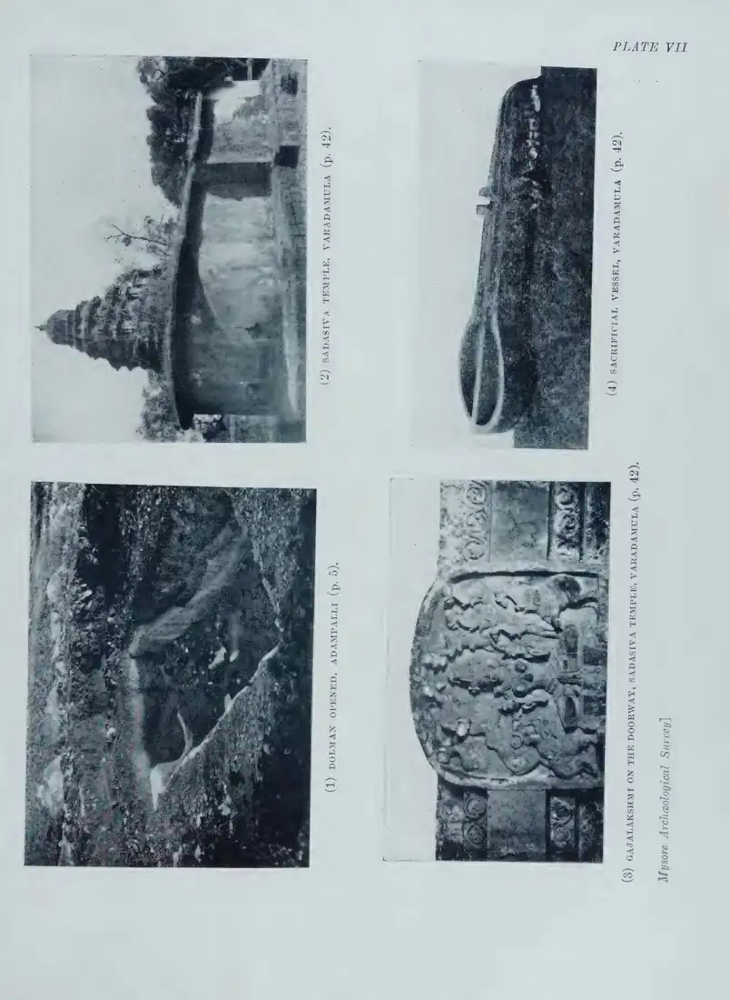
- (2) SADASIVA TEMPLE, VARADAMULA (p. 42)
Cited in the text: p. 5 ↩, p. 42 ↩, p. 42 ↩, p. 42 ↩, p. 78 ↩
Information having been received that a cromlech near Ádampalli was rifled by workmen without the knowledge of the Archæological Department, it was visited during the month of October 1944. The cromlech is only about 50 yards from the road leading from Robertsonpet to Bētamangala, at a distance of six furlongs from the 4th mile-stone. It has a large ring of small boulders, about 43' in diameter on the outer side. The big table stone which has now disappeared was found in a broken condition five months ago. Round about it there was a heap of small stones encircled by a ring. Below the table stone there was a stone cist or chamber (9'×7') made up of large slabs, the inner faces having been whitewashed, and the eastern slab having a hole, about 2' in diameter. The chamber is about 5'–6" deep and has a large slab at the bottom as reported to have been seen by one of the villagers. In spite of the Police the cist was evidently rifled by the Vođdars whose leader was a man from Coimbatore residing at Patwarpalli. From the earth heaped up around were collected pieces of polished blackware and redware as also one piece of iron lance-head. No bones were found. Perhaps they are still there on the bottom slab.
With the help of the coolies the disturbed chamber was reopened, the fallen earth being removed stage by stage a few inches at a time. The chamber was found to have been completely robbed. Further work was stopped.
It is said by Mr. Venkatesa Sastry, Headmaster, Primary School, Champion Reefs, that small gold coins, about half a dozen in number, were collected in the fields but that they were sold to Marwaris at one rupee each by the villagers.
Part II: Conservation Notes on the Ancient Monuments inspected by the Department of Archæology during 1944-45 › Kolar DistrictMulbāgal
Sōmēšvara Temple
(II Class Ancient Monument.)
As it was reported by the Amildar that a large metal image of Naṭarāja was found while digging in the śukanāsi of the Sōmēśvara temple of Sōmēśvarapālya, a suburb of Mulbagal, the place was visited and the temple and the image were studied closely.
The temple is now a poor institution with an income of about Rs. 400 a year. Both for its own sake and for the sake of the beautiful image of Naṭarāja found in it, it deserves to be kept in a state of good repair. The Amildar and the local devotees have been taking much interest and are renovating the temple. After the work is finished, the temple may be put into Class III for conservation. In the course of repairs the following points may be kept in view :—
1. The front yard should be entirely cleared of all big trees, fallen stone pieces, etc., the latter being mounted in an ornamental way.
2. The outer compound wall may be extended to include the kalyāni and other connected structures.
3. The age-old lime coating may be very carefully removed from all parts of the building, especially from the sculptures, and no further whitewashing of stone surfaces may be done.
4. Cement and plaster have been freely used for pointing the blocks of the walls and appear in white patches which look glaringly out of place. They should be scraped off as carefully as possible and made as little visible as possible. Where it is not possible to undo the work done and sculptures and inscriptions do not appear, whitewash may be used for covering up the ugliness.
5. The flooring of the pātālānkaṇa may be made even and invisibly pointed.
6. Inscriptions and sculptures should be kept clear, particularly those on the south wall.
7. The niche for Gaṇapati in the navaraṅga is out of harmony and may therefore be removed.
8. The store room behind Gaṇapati may be tidied up.
9. In the course of digging out the image of Naṭarāja, two of the flames have been knocked out and a portion of the prabha has been damaged. The image should be brought over to Mysore for restoration at the Chāmarājēndra Technical Institute.
10. The image of Kumārasvāmi placed against the compound wall at the back of the temple, is damaged. The fore arms of the god and the neck of the peacock have become broken. The group may therefore be considered for removal to a museum.
Ánjanēya Temple
(Not Classified.)
The Āñjanėya temple is a well-to-do institution in Muzrai ownership and managed by a priestly family whose present head is Arcbak Ramachar. He and his family have been keeping the temple in an excellent condition, clean, fit and tidy. The temple may be put into Class II for conservation.
Vithala Temple
(III Class Ancient Monument.)
The Viṭhala temple is badly kept and needs some repairs. The stucco Raṅganātha image is in danger of collapsing. The vimāna and the gōpura are in need of repairs. The flooring of the mukhamaṇtapa needs resetting and pointing. The compound and the front of the temple need cleaning up. The inscription stone may be carefully preserved in the mukhamaṇtapa.
Part II: Conservation Notes on the Ancient Monuments inspected by the Department of Archæology during 1944-45 › Kolar DistrictAvani
Rāmēšvara Temple
(Pl. III, 1).
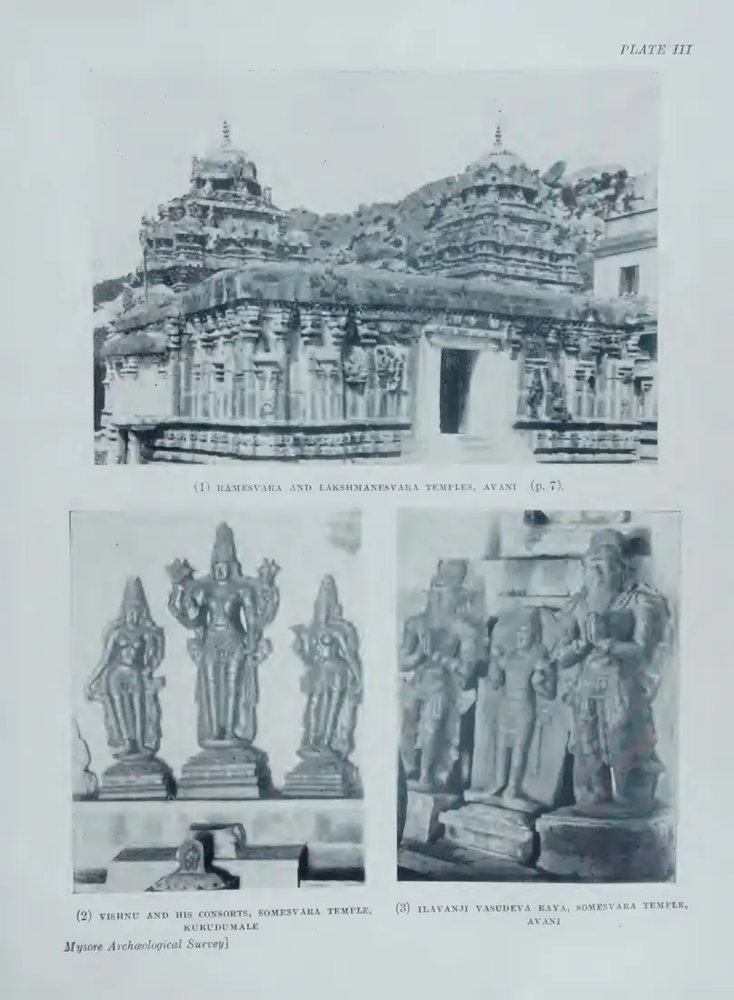
- (1) RAMESVARA AND LAKSHMANESVARA TEMPLES, AVANI (p. 7)
Cited in the text: p. 7 ↩
(III Class Ancient Monument.)
The Rāmēśvara temple is an important local institution with an income of about Rs. 3,500 a year out of which a sum of about Rs. 1,000 is saved every year. The reserve fund now amounts to about Rs. 14,000 so that a part of it may well be utilised for the conservation of the monument. The following points may be recommended:—
1. The approach road to the temple may be improved.
2. The compound wall, particularly in the southwest, may be repaired.
3. The kitchen to the south-east is in a dilapidated condition. It needs to be repaired and put into proper shape.
4. The Angadēśvara, Kāśiviśvēśvara and Pañchalingēśvara shrines need to be repaired and have samprōkshana.
5. The Kāmākshī temple built by the Vijayanagar rulers and bearing the boar figure on its walls, should be reset, the cracks in the walls being cement-grouted and all the whitewash being carefully scraped off.
6. The two kalyānis of the town should be repaired.
7. The steps leading to the hill top, the Vālmiki cave, Ēkānta Rāma temple, Pañcha-Pāṇḍava temple and Dhanushkōṭi are all much damaged. They should be repaired and the last one provided with steps leading to the water without risk of falling.
8. The private houses close to the temple on the east may be acquired and the place kept open and clean.
9. A musāfirkhāna may be constructed for the use of pilgrims and officers close to the Middle School and the neighbouring well.
Part II: Conservation Notes on the Ancient Monuments inspected by the Department of Archæology during 1944-45 › Kolar DistrictKuruđumale
Chennakēšava Temple
(Not Classified.)
It is desirable to protect this monument to prevent the local contractors from robbing the structure of its sculptured stones.
Vināyaka Temple
(III Class Ancient Monument.)
The Vināyaka temple was repaired a few years ago. But its roof is leaky. It may be repaired. A low compound wall connecting the māhādvāra may be put up to prevent undesirable people from using the manṭapa.
Sōmēšvara Temple
(I Class Ancient Monument)
The Sōmēśvara temple happens to be the most important monument at the place. It may be transferred from I Class to II Class in the conservation list. The steps leading to it are badly disturbed. They should be carefully reset. Large numbers of worked stone blocks and pillars are lying about. They may be used, without being broken, in the construction of a rough compound wall around the temple area. The neighbourhood of the temple may be levelled up and kept neat and tidy. Something should be done to get over the ugliness of the newly erected ventilation tower.
Part II: Conservation Notes on the Ancient Monuments inspected by the Department of Archæology during 1944-45 › Kolar DistrictKōlār
Kōlāramma Temple
(I Class Ancient Monument.)
A higher compound wall is badly needed to prevent the people from getting in at will. The gate should be made stronger. Battened wooden doors may be put in. The inner verandah is leaky. The roof may be repaired. The inner courtyard may be paved.
Sōmēšvara Temple
(I Class Ancient Monument.)
The main göpura appears to be badly out of repairs. It should be replastered after examining the inner roofs. The compound is full of Mespot thorns which should be removed and burnt. The watchman on Rs. 6 has resigned and sought better wages. The Kāmākshī shrine may be repaved, especially the śukanāsi. The sculptures should be freed from whitewash.
Makbāra
(II Class Ancient Monument).
The old barred windows have been removed and new R. C. perforated screens have been introduced. The hall is well lit now. The old cloth covers are still used, the new ones being kept for occasions. They may be more freely used. The old bulbs which have burnt out and are useless may be replaced by new ones.
The Masjid is in good condition. The park and cypress trees are well maintained.
The office building needs repairs. Its roof has cracked. All the buildings except the mosque need fresh whitewashing.
The menials draw Rs. 4 each and are unable to maintain themselves. They may be fed in the poor kitchen and given a salary with which they can really manage to live.
Part II: Conservation Notes on the Ancient Monuments inspected by the Department of Archæology during 1944-45 › Kolar DistrictNandi
Bhōganandīšvara Temple
(I Class Ancient Monument).
About three years ago an interesting and very old Umā-Mahēśvara group was found under the pavement in the north part of the temple. The image is small, about 2\frac{1}{2} ' high, and beautiful and belongs probably to the Ganga times. It may well be installed in the Umā-Mahēśvara shrine behind the kalyānamaṇtapa.
The pavement in the śukanāsi of the Aruṇāchalēśvara shrine may be reset and invisibly pointed.
The whitewash on the śukanāsi and other walls of the same shrine may be carefully scraped off.
The courtyard in the north-west may be completely paved.
The Pañchabrahmēśvara temple may be renovated and the tank drained off completely by opening the old outlet.
The plants on the towers may be removed.
The Vaiśya choultry and the Travellers' Bungalow may both be removed and built elsewhere.
Among the bronzes of the Aruṇāchalēśvara shrine, the Sōmāskanda group which appears to belong to the Chōla period may be transferred to Mysore and a copy made in the Chāmarājēndra Technical Institute.
2
Part II: Conservation Notes on the Ancient Monuments inspected by the Department of Archæology during 1944-45 › Kolar DistrictRangasthaļa
Ranganātha Temple
(II Class Ancient Monument).
The Ranganātha temple was repaired about three years ago. But some more work remains to be done :—
1. The plants growing on the māhādvāra and the vinnāna, etc., may be rooted out with treekiller, etc.
2. The roof leaks in many places. It may be repaired.
3. The walls of the pradakshina, etc., allow rain water to drip in. They may be invisibly pointed.
The temple has a sum of about Rs. 10,000 at its credit.
Part II: Conservation Notes on the Ancient Monuments inspected by the Department of Archæology during 1944-45Shimoga District
Bhadrāvati
Lakshminarasimha Temple
(III Class Ancient Monument.)
Some of the recommendations made in the Annual Report of this Department for the year 1937, Pages 53ff., have been attended to. The houses around the monument have been acquired, the ground has been levelled and a compound wall of size stones has been constructed. The temple platform has been reconstructed and the temple has been provided with electricity. The outer walls have been cleared of their chunam costing, so that the details of the architectural mouldings are now revealed.
But there are still several items of work to be taken up. The removal of the cone-shaped ugly śikharas over the cells may be delayed, since the original stone śikhara piece that was lying in the compound and could have given us the model, has now disappeared. A suitable design has therefore to be worked up first before dismantling the present śikharas. The ugly ventilation tower may be removed and substituted by a low tower invisible from the compound and having a glass top and ventilators on four sides protected with expanded metal.
The inside of the temple including its walls, pillars and particularly the perforated screens and other sculptures should be carefully cleaned as has been done at Bēlūr. The images of all the gods which are covered over with a thick coating of muck should also be cleaned.
The little mud platforms in the navaraṅga and all the wooden and bamboo structures inside the temple should be removed and all use of the inside of the temple for any purpose such as storing, etc., other than worship should be strictly forbidden.
The flooring inside the temple may be properly levelled and cement pointed.
All the obtrusive structures in the enclosure may be removed and new ones may be constructed unobtrusively on the north side. The Archak's house may be provided with electric lights.
The broken right index finger of Vēnugōpāla and the broken left hand of his consort and the damaged kirīṭa of Lakshmī in the Lakhshmīnarasimha group may be repaired by a competent sculptor.
The weight of the roof must be reduced, the brick structures being removed and a concrete bed with cement covering being laid.
A permanent peon is needed for the temple.
The roof is leaky and needs repairs. The plants growing on the walls may be removed at once. The leaky electric installation may be repaired. The new front gate may be repaired. A wicket gate may be provided.
Part II: Conservation Notes on the Ancient Monuments inspected by the Department of Archæology during 1944-45 › Shimoga DistrictHorakere
Lakshminarasimha image
No heading in the body: this section starts at its printed page (11).
The image of Lakshmīnarashima in the temporary custody of the Rāmēśvara temple at Horakere is a fine specimen and comparatively free from damage (Pl. IV, 2) While it was unearthed in the backyard of one Chabu Sab at Mandali, half a dozen slight pieces of damage have occurred. The right jaw of the top line is second toe of the god and the right big toe of the goddess are broken. The god's right leg has received cut in two places. Since, however, the damages are only in the case of the upāṅgas, the image may be repaired and worshipped. It is a point for consideration whether the image belongs to Government or the Sringeri Mutt If it belengs to Government it may be removed to the Archæological Museum polished and exhibited.
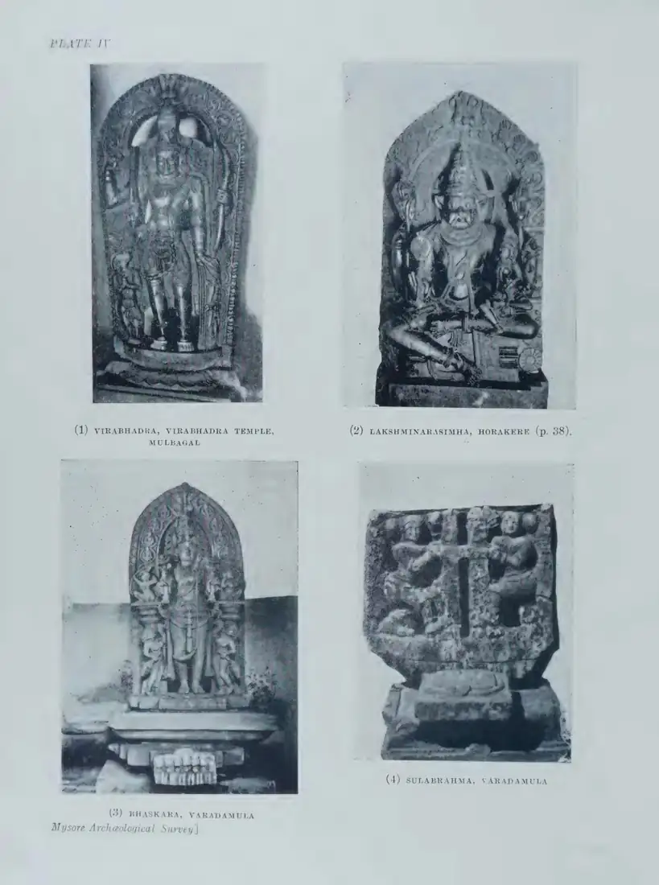
- (1) VIRABHADRA, VIRABHADRA TEMPLE MULBAGAL (2) LAKSHMINARASIMHA, HORAKERE (p. 38)
Cited in the text: p. 11 ↩, p. 39 ↩, p. 76 ↩, p. 78 ↩, p. 79 ↩, p. 80 ↩
The pit at Mandali wherefrom the image was found may be further excavated to see if any more images are still to be unearthed
Part II: Conservation Notes on the Ancient Monuments inspected by the Department of Archæology during 1944-45 › Shimoga DistrictChennagiri
Fort
(III Class Ancient Monument.)
The Fort at Chennagiri is in a good condition with its temple. The north gate may be provided with a door to prevent the public from fouling the place.
Kētēšvara Temple
The recommendations made by the Director of Archæology in the Annual Report of the department for 1942, Page 15, in respect of the conservation of this temple are not yet attended to. The temple is a neat small structure deserving to be preserved. It will not cost much to remove the vegetation growing on the roof. The joints of the wall slabs may be pointed with coloured mortar and the collapsed slabs on the northern side of the temple may be replaced. The roof requires to be made waterproof. The villagers may be encouraged to effect these minor repairs, since the temple is not included in the list of Ancient Monuments.
Nallūr
There appears to be a dispute between the Hindus who want the god Hanumān to be taken in procession and the Muslims who want music to be stopped before the mosque. A solution for the dispute between the two may be found if the compounds of the Āñjanēya temple and the Masjid are made to face east.
Part II: Conservation Notes on the Ancient Monuments inspected by the Department of Archæology during 1944-45 › Shimoga DistrictKalkere
Ballēšvara Temple
(Not Classified.)
If this temple had been in a place other than a jungle it would have been placed in the III Class for conservation. As it is, it is impossible to preserve it. Its stepped pyramid tower and the west half of its outer wall have collapsed, though the front and the inner part are intact. Even the priest has to come from Jannapura which is a mile to the north. If sufficient local contribution is forthcoming, it may be restored. Otherwise the Kūđli Mutt which is in search of an old structure for transfer to Kūđli may be allowed to take it away and build it at Kūđli on the same pattern. The temple is said to be only about 20 miles from Kūđli via Kodligere.
Part II: Conservation Notes on the Ancient Monuments inspected by the Department of Archæology during 1944-45 › Shimoga DistrictHodigere
Shāji's Tomb
(II Class Ancient Monument.)
Hodigere was visited in order to inspect the tomb of Shāji Rāja. It is found that out of the enclosed field in which the tomb is situated, a small part around the tomb was purchased for about Rs. 300 and a compound wall was commenced to be built around it. But the construction, before the wall was half built, was stopped at the orders of the Deputy Commissioner since the construction was bad. The construction may be completed as early as possible and the lane in front also walled off connecting it by a gate with the road to the south. The inscription stone which is at present with the Shanbhogue may be mounted near the south end of the tomh o that it might not be missed again. The tomb itself needs small repairs. The proper thing would be to build a pavilion over it. The Mahrata public could find at least part of the amount and the Government the other part.
Sagar Taluk
Part II: Conservation Notes on the Ancient Monuments inspected by the Department of Archæology during 1944-45 › Shimoga DistrictVaradāmūla
Gōpālakrishṇa shrine
The Göpālakrishna shrine to the south of Varadātīrtha has a fine image of Göpālakrishna. The Mangalore tile roofing of the structure needs repairs and the temple a man-servant.
Part II: Conservation Notes on the Ancient Monuments inspected by the Department of Archæology during 1944-45 › Shimoga DistrictIkkēri
Aghōrēśvara Temple
(I Class Ancient Monument.)
The temple is generally intact and needs only the following minor repairs :—
1. The plaster on the roof is damaged. It may be repaired so as to prevent the leakage of rain water.
2. The outer walls of the inner pradakshina appear to have moved out of plumb by a few inches in the north-east ankaṇa and in the west ankaṇa, allowing even sunlight in the mornings. The Executive Engineer may closely inspect this and report if there is any expected danger of the wall moving further outwards.
3. The flooring of the pradakshina is very uneven. It may be reset and pointed.
4. The west wall of the navaraṅga appears also to have moved out. It may also be examined.
5. The well to the north-east is almost without water. It may be deepened by a few feet and allowed to retain clean water for abhishēka ; or a new well may be provided near the pākaśāla.
6. There is no ashṭabandha for Aghōrēśvara and Pārvatī. This may be supplied and the images properly set.
7. A Mangalore tile shed may be constructed for the wooden car which is a new one made about 20 years ago.
8. A yāgaśāla may be provided in an unobtrusive place, preferably near the pākaśāla.
9. Electric lighting may be provided for the temple. Since the temple is a first class Ancient Monument and one of the best Siva temples in the State, it deserves to be kept in good form.
10. The wirê netting of the doorways of the vimāna tower may be replaced to prevent the bats from entering inside.
11. The north gateway may be provided with wooden or iron doorways.
Hirebhāsgar
In the temple to the south of the place there are several images of which the finest is a Saptamātrika panel which deserves to be preserved in a museum at all costs. The image of Gaṇēśa may be removed to Mađenūr. But the Saptamātrika panel may be sent over to the Archæological Department at Mysore.
Part II: Conservation Notes on the Ancient Monuments inspected by the Department of Archæology during 1944-45 › Shimoga DistrictMađenūr
Íśvara Temple
The most interesting sculptures of the temple are on its back wall. They are all very vigorous and deserve to be removed to a museum.
Part II: Conservation Notes on the Ancient Monuments inspected by the Department of Archæology during 1944-45 › Shimoga DistrictChimale
Pārśvanātha basti
There is a chance of this structure being deserted when the present inhabitants evacuate the place owing to the loss of their rice lands. If they stay, the main image of Pārśvanātha in the garbhagriha may remain in its place. Otherwise, the image may be removed to Mysore or Bangalore, even at the cost of two or three hundred rupees. Among the images kept in the navaraṅga of the temple there is an image of seated Sarasvatī which deserves to be put into third class as a conserved monument.
Part II: Conservation Notes on the Ancient Monuments inspected by the Department of Archæology during 1944-45 › Shimoga DistrictVirabhadrāpura
Íśvara Temple
It is said that after the construction of the Hirebhāsgar reservoir is completed this temple will be in water. The temple is not great enough to be removed bodily to Mysore or Bangalore. But it is too good to be allowed to be submerged. It may be removed to the Taluk town of Hosa-Nagar and rebuilt there, stone for stone, under the supervision of a skilled overseeer who will number the stones and refit them. The cost may not be more than Rs. 4,000 and it is worth incurring it. Otherwise this structure may be presented to the Kūđli Šringēri Matt which is in need of an old temple.
Oddalļi (Varadahalļi)
No heading in the body: this section starts at its printed page (15).
Oddalli (Varadahalli.)
By the side of one of the ponds at the place there is a temple built of laterite blocks enshrining a beautiful image of Mahishāsuramardinī (Pl. IX, 4) belonging to about the Chālukya period. The leaky roof of the temple requires to be repaired. If the verandah can be rebuilt, it would be better. The road to the village requires to be improved.
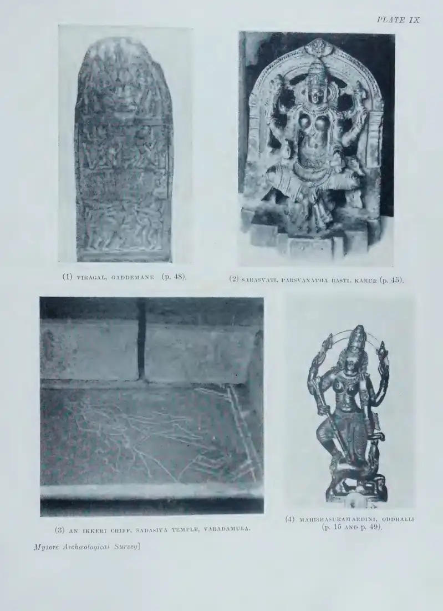
- (1) VIRAGAL, GADDEMANE (p. 48)
In the verandah of the temple there is kept a wooden board (Pl. X, 1) with very fine Portuguese carvings in three panels. The piece is fit to be exhibited in a museum.
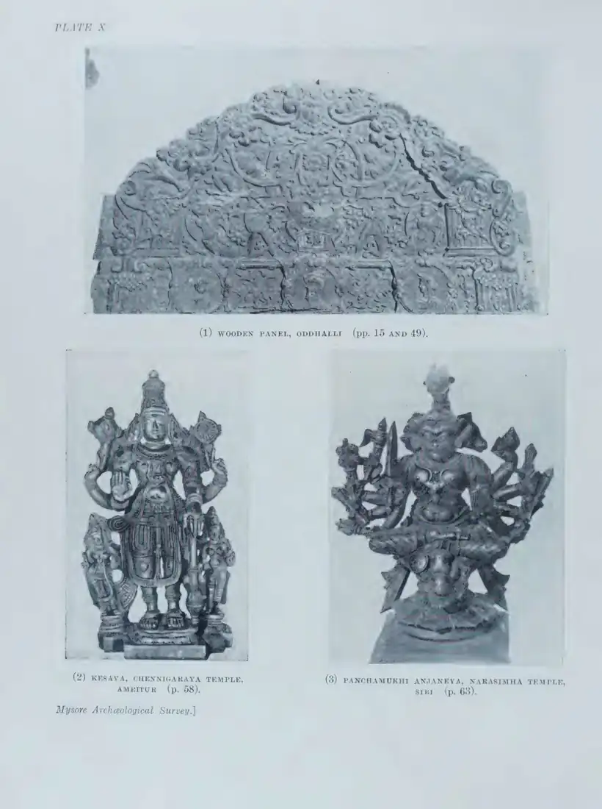
- (1) WOODEN PANEL, ODDHALLI (p. 15 AND 49)
Cited in the text: p. 15 ↩, p. 49 ↩, p. 58 ↩, p. 58 ↩, p. 63 ↩
Part II: Conservation Notes on the Ancient Monuments inspected by the Department of Archæology during 1944-45Chitaldrug District
Ānekoṇđa
Íśvara Temple
(II Class Ancient Monument.)
The Ísvara Temple at Ānekonda has been fully described in the Annual Report of the Department for 1932. The temple has half a dozen beautiful varieties of piliars, two fine doorways and well carved ceilings. But its present condition is bad. The following points are recommended for the conservation of the monument:—
1. A square plot around the basement of the temple may be excavated to the depth of the original basement, the edges rivetted and walled off.
2. The crude masonry work to the south-east of the south cell and the north-east of the north cell may first be experimentally removed and then the whole crude structure and the walls rebuilt with the old materials or with new blocks of stone.
3. The broken beams in the south manṭapa and the mud and masonry walls may be removed and the manṭapa cleared.
4. No storage should be allowed inside the temple. Two rooms, one on either side of the Basavaṇna shrine, may be built for storing, cooking, etc.
5. The encrustation of soot, wax and limewash may be carefully removed from all the sculptured parts.
6. The flooring may be reset and pointed in the passage leading to the temple and the garbhagriha.
7. The Vishnu image whose two arms are broken and the nose damaged may be redressed, cleaned and restored to the north cell.
Part II: Conservation Notes on the Ancient Monuments inspected by the Department of Archæology during 1944-45Bangalore District
Bangalore
Kempe Ganda's Watch Towers
The tower near Hebbāl is intact and in good condition. But a few figures on it are slightly damaged and require to be touched up with plaster. The kalaśa on the gōpura is lost. It may be restored in plaster.
The tower near Ulsūr is also intact and in good repair. It has been recently whitewashed. The top of the hill has been paved with flat bricks ; but the military authorities are in possession of the hill and have put up a barbed wire fencing, thus preventing access to the tower. A gate may be provided for the fencing so as to give access to the public. The public way up from the south may be cleared of plants and repaired.
The tower to the east of the Lalbagh is quite intact and requires only whitewashing. Similarly the tower in Gavipur is also intact requiring only whitewashing. A flight of steps may however be made to give access to it.
Bangalore Fort
For a building which is an Ancient Monument occupying the centre of Bangalore City, the fort is badly kept. The following works may immediately be done :—
1. All plants growing on the faces of the walls and above them may be removed including the tree on the north-west.
2. The place is used as a public latrine particularly the cannon bases or bateri. These should be kept clean. The dungeons should be well cleaned.
3. The parapet on the west is cracked and should be saved from falling.
4. The entire top should be floored with concrete cement.
5. A high flagstaff may be erected on the north gate instead of the small one.
6. The entire place should be thoroughly cleaned.
Venkaṭaramaṇasvāmi Temple
The building is intact and in good repair. But the pillars of the manṭapa have yet to be cleared of whitewash. The vacant niches over the manṭapa may be provided with images by a good sculptor.
Tippu Sultan's Palace
Though the building is a first class Ancient Monument, it is very badly kept. The Middle School and the Y.W.C.A. should be removed to a separate building and the partitions, etc., should be removed.
The woodwork is much damaged. The verandah pillar on the south-east and its overhead arch are damaged by white ants and are in a dangerous condition. They may be repaired.
The south-east corner pillar may be given a filling and painted over.
The walls may be dusted and washed with ordinary soap water and cleaned.
A watchman may be appointed to keep watch over the monument.
Part II: Conservation Notes on the Ancient Monuments inspected by the Department of Archæology during 1944-45 › Bangalore DistrictMāgađi
Ranganātha Temple
(II Class Ancient Monument).
The Ranganātha temple at Māgađi was last inspected by this Department in the year 1934. A description of the temple is contained in the report for the year 1915. Even during 1934 the dilapidated condition of the western tower was noticed and it was proposed that the Public Works Department should inspect it. It is not known if this was done. In September 1943, owing to the heavy rains, the whole tower collapsed, falling to the west and destroying two of the three niches of the parapet. Of the three niches, the one having the figure of Matsyāvatāra is intact. The central one which had the figure of reclining Ranganātha and the right one which had the figure of Kūrmāvatāra have been destroyed. The niches may be restored at little cost.
The ground floor of stone pillars and beams on which the brick tower was raised is intact. It has however to be strengthened before any fresh tower is raised. And the fresh tower has to be so constructed that it will not be very different from the original tower.
The fresh tower is estimated to cost about Rs. 35,000. The funds of the temple amount to about Rs. 3,000 only. It is learnt that several rich merchants in Bangalore
3 are the devotees of this temple. It may be possible to raise contributions from them and supplement the amount thus raised by a suitable grant from Government.
Part II: Conservation Notes on the Ancient Monuments inspected by the Department of Archæology during 1944-45Hassan District
Haļebiđ
Hoysaļēśvara Temple
Proposals were first made in 1929 for the renovation of the temple and conservation work was carried on between 1935 and 1939. A good deal of work costing about Rs. 25,000 (for the whole place) was done. Owing to concentration on the conservation work at Bēlūr, further work at Halēbiđ was postponed and it was proposed to resume the work at Halēbiđ after the commemoration ceremony at Bēlūr.
So far the following pieces of work have been carried out at the Hoysalēšvara temple :—
1. Rebuilding the north bull mantapa.
2. Rebuilding the bent up east central wall.
3. Rebuilding the bent up north-east corner.
4. Pushing back and grouting the crevices of the south buttress niche of the Hoysalēšvara shrine.
5. Resetting and grouting the niches of the sanctums inside.
6. Resetting the steps of the temple and the bull mantapas all round.
7. Removing two of the several stone props of the broken beams.
8. Resetting and cement-pointing the flooring slabs inside.
9. Resetting and cement-pointing the flooring slabs of the outside platform.
10. Removal of the recently added Dēvī shrine from the south-east corner of the hall.
11. Repairs to the perforated screens of the hall and insertion of wire netting.
12. Removal of the mound of the ruined linga shrine in the south-west compound.
13. Resetting the basement platform of the great Gaņēsa image.
14. Levelling the compound on the west into terraces.
15. Clearing the outer wall sculptures of lichens, etc.
Further work to be carried out in respect of the temple are :—
1. Removal of the brick piers just inside the north doorway and restoring the original structure as far as possible with the pieces of dome, etc., lying in the compound.
2. Removal of the stone pillar supports which obstruct the view of the hall.
3. Removal of the unsculptured cracked beams and their replacement by stone beams from the Onte-maradi quarry or by R.C. beams.
5. Clearing the sculptures in the ceilings, beams, walls and doorways of the hall, so that they may look fresh as at Bēlūr.
6. Levelling the compound so as to lead out all rain water.
7. Construction of a cement drain and pavement around the platform to prevent rain water sinking to the foundations.
8. Construction of a yāgaśāla and pākaśāla in the north-east corner of the compound for Āgamik purposes.
9. Sinking a well, if possible, without blasting near the pākaśāla in the south-east corner.
10. Lightening the roof and repairing its cracks.
11. Collecting together the stray sculptures lying about and their installation in the form of a museum inside the compound wall.
12. Formation of a fine flower garden inside the compound and near the north gate.
13. Straightening the pillar in the eastern corner near the south door.
14. The flooring of the south bull manṭapa may be so reset as to allow all rain water to flow away.
15. A battened wooden door may be provided for the Sūrya shrine.
16. The wire protection of the perforated screens should be made bird-tight all round.
17. The restoration of the eaves of the Sūrya shrine may be considered from the stones available in the compound.
18. The lion frieze, etc., which are out of position at the back wall and elsewhere should be restored to proper position.
19. Electric lighting may be given.
20. A large inscription stone is said to be buried near the south compound gate. The spot may be excavated.
21. The two large images may be fixed with ashṭabandhana.
22. A pavilion may be put up for Gaṇēśa.
23. Where the stone is damaged owing to natural causes it may be protected with cement or some plašter.
Basti Halļi
The bastis
Work already done :
1. The yard in front of the temple has been widened by the acquisition of a few houses. More houses have to be acquired and the yard levelled and kept tidy.
2. The front steps have been reset and pointed.
3. The large mukhamanṭapa has been rebuilt from the bottom on a concrete foundation.
4. The Śāntinātha basti has been cement pointed and looks ugly.
5. The double roofed top was reduced in thickness to reduce the weight.
6. The central Bhuvanēśvari has been cleaned of soot and muck.
Work to be done :
1. Some more houses should be acquired and the front yard widened.
2. The road needs to be kept in good condition to allow cars to have easy access.
3. The decayed and broken cornices on the outer wall of the temple may be protected with cement coloured to match the stone.
4. The fallen eaves stone to the west may be rebuilt in R.C.
5. The walls and eaves should be entirely rid of plants and roots of trees. Atlas tree-killer may be used, the dead wood may be removed and scooped out and the fissures grouted with cement.
6. The eastern cracked beam of the navaraṅga may be examined for removal and replacement. The crack appears to be rapidly widening. Immediately one of the stone props lying in the compound of the Hoysalēśvara temple may be used to give temporary support and prevent further sinking.
7. The navaraṅga flooring may be reset and pointed with coloured cement.
8. Electric lighting may be installed.
9. The broken and damaged wooden parts of the śukanāsi front wooden screen may be repaired.
10. The Pārśvanaātha image may be cleaned and the throwing of sandal, etc., on it prevented.
11. The pillars, etc., may be carefully cleaned.
12. The inscriptions and sculptures lying about should be carefully set up in their respective places or near the compound wall.
Ādinātha basti
Work done :
1. The pillars and part of the walls were cleaned.
2. The navaraṅga doorway was provided with a battened wooden door.
Work to be done :
1. The jagalis of the front pavilion and the platform on which the elephants rest should be re-done with concrete using the old stones for all facing, etc., as far as possible.
2. The inscription turret on the east jagali may be set up to the south-west in the navaraṅga.
3. The broken eastern and western beams may be replaced with an R.C. beam or supported by a less ugly prop.
4. The navaraṅga flooring should be re-done with concrete.
5. The main image, prabhāvalī, etc., should be cleaned.
6. The śukanāsi flooring and garbhagrīha flooring to be re-done.
7. The pilaster of the north wall of the navaraṅga should be replaced in position.
Šāntinātha basti
Work done :
1. The pond to its north-east was filled up.
2. The walls inside and outside were cement pointed.
3. The garbhagrīha has been provided with a battened wooden door.
Work to be done :
1. Numerous plants have grown up in the walls and parapets. They should be rooted out at once.
2. The numerous holes in the walls breed lizards, etc. They should be grouted.
3. Large numbers of stone blocks forming the walls and cornices have cracked and settled. The cracks may be filled in and they may be watched for further settling.
4. The cement pointing has been done in broad bands and in greyish white colour which looks ugly. It should be scraped and all pointing should be inconspicuous and where necessary coloured cement should be carefully prepared and used so as to match the neighbouring stones.
5. All the flooring of the shrine needs to be re-done in concrete except where there are slabs.
6. The tree on the top of the mānastambha should be removed and the top made waterproof.
7. The inner wall is particularly ugly with cement pointing bands. They should be scraped off along with whitewash.
8. In the central ceiling of the navaranga, some of the corner stones have cracked. The dome may be rebuilt easily as there are few sculptures.
9. The Tirthankara image in the śukanāsi may be repaired.
10. The garbhagriha image and ceiling may be cleaned.
Kēdārēśvara Temple
The temple is intact. Bats foul in the interior.
1. The perforated screens may be provided with wire-netting.
2. The north-east doorway may be removed and the main door of the navaranga may be provided with battened wooden doors ornamentally carved.
3. Wherever cement pointing has disappeared, repointing may be made inconspicuously.
4. Electric lighting may be provided.
5. The west compound wall may be rebuilt and a gate provided on the west nstead of on the north.
General.
1. A road may be made from the south-west corner of the Hoysalēšvara compound to the Nagarēšvara and corner of Beņneguđđa.
2. The Ēšvara temple may be repaired sufficiently to be out of danger and the door may be repaired.
3. The Virabhadra temple may be cleared of vegetation and made safe. The ground around may be levelled and the roof made rain proof.
4. The Ranganātha temple has been provided with a compound wall. The pillars and walls need cleaning and the floor has to be re-made with concrete.
Part II: Conservation Notes on the Ancient Monuments inspected by the Department of Archæology during 1944-45Mysore District
Nanjangud Taluk
Kaļale
Iṭtige Mālagamma Temple
No heading in the body: this section starts at its printed page (22).
IŹTIGE MĀLAGAMMA SHRINE.
The ceiling of the front ankaṇa of the building has cracked. It may be repaired. It has to be studied for further widening.
Lakshmikānta Temple
1. The roof concrete has lost its tar covering and the gravel used has become loose. In the north east, near the yāgasāla it is badly leaking. The roof should be repaired with cement and road tar.
2. The main vimāna has an opening on the east through which bats enter. It may be closed with a wire-netting doorway.
3. Plenty of plants have grown up on the roof. These may be rooted out and killed with Atlas tree-killer.
4. The damaged plaster work on the vimāna may be touched.
5. The damaged north-west corner of the gōpura may be repaired and the very badly damaged figures touched up. A lightning conductor may be provided.
6. Part of the flooring has been cemented. The rest may also be done similarly. The open part of the quadrangle may be paved.
7. The outer navaraṅga should be cleared of its corner rooms and corresponding safe rooms may be constructed in the corners of the inner navaraṅga.
8. About Rs. 3,000 may be needed for the repairs. A full time servant may be sanctioned for keeping the premises clean.
9. The gaping openings near Āndāl and other shrines may be grouted invisibly.
10. The Ranganātha and other stucco images should be carefully repaired.
11. Near the wall one of the ceiling slabs is cracked. A steel bar may be inserted beneath it to support its weight.
12. All around the temple a road should be made and all water logging stopped.
13. The navarātri manṭapa may be repaired with raised side walls so as to house the vāhanas crowding the hails of the temple.
14. The roof the Krīttikōtsava manṭapa and the brick structure on top are damaged. They need repairs.
15. The vacant sites around the temple may be required for the temple.
Part II: Conservation Notes on the Ancient Monuments inspected by the Department of Archæology during 1944-45 › Mysore DistrictNanjangūđ
Śrī Śrīkanṭhēśvara Temple
The Uppaligara Chatram.
There appears to have been an old building here which has been partly dismantled. On the same spot a new building of brick and mortar with an enlarged area has been half built with the funds subscribed by the community. No doubt the community needs a choultry within easy distance of the temple. The question of their right to build on the old site does not concern the Archæological Department. From the point of view of the temple all accretional buildings in front of the temple which do not belong to it or are necessary for it should be acquired, demolished and the front yard maintained clear and clean. Thus, it is best to compensate the owners by granting some other acceptable site anywhere except in front of the temple, say near the temple store, on the north of the north street or beyond the south street behind the Advaita Sabha or near Rānappa's choultry on the way to the river, etc., and to encourage them to build the choultry there, even using the old materials. A liberal compensation may be recommended.
The South-West Corner Ganēśa.
This image on a pillar in the outer wall of the Śrikanṭhēsvara temple has become famous as a boon grantor, and crowds generally collect there for Ārati and they desire to have a shade above the god.
No pillar can be permitted as the corner will look ugly and the passage of worshippers will be interrupted. A chajja awning of 15' \times about 7\frac{1}{2}' of R.C. may be built by inserting small steel rails into the wall between the brick wall and the beams with the concrete structure made rather light. Otherwise an asbestos sheet awning may be put up. In any case, no damage should be done to the plaster parapet and its figures.
Chamarajanagar Taluk
Part II: Conservation Notes on the Ancient Monuments inspected by the Department of Archæology during 1944-45 › Mysore DistrictHaradanahalļi
DivyaliŹgēśvara Temple
On the application of the local people through the Deputy Commissioner, Mysore District, that the Divyalingēsvara temple should be included in the list of Ancient Monuments, the temple was inspected. It is an old monument built in the Hoysala times and its ceiling paintings are valuable. So, it may be put into the list under Class III. The paintings deserve to be photographed and copied. The temple would need about Rs. 4,000 for repairs. If the local people can collect about Rs. 2,000, a Government grant of Rs. 2,000 may be made and the temple repaired.
1. The cracked beam in the mukhamaṇtapa may be supported, if possible by a flat steel bar or otherwise by a wooden prop.
2. The leaky roof may be repaired with solid tar for the horizontal cracks and plaster grouting in the walls, etc.
3. The sculptures and inscriptions may be cleared of the whitewash.
4. The thorny courtyard may be rid of vegetation and sloped out.
5. The floor may be pointed.
The question of further repairs may be considered when funds are available.
6. The fresco paintings should be copied and published and preserved as far as possible.
Part II: Conservation Notes on the Ancient Monuments inspected by the Department of Archæology during 1944-45 › Mysore DistrictChāmarājanagar
Chāmarājēśvara Temple
Some of the labels of the gods and bhaktas in sālgudi and the terrace parapet have been whitewashed. The names should be restored and lists of them made and sent to the Archæological Department.
Janana Maṇṭapa
The Janana manṭapa is in good condition. But it is given over to a High School. This loan may be ended as soon as possible since the boys are likely to damage the paintings.
Part II: Conservation Notes on the Ancient Monuments inspected by the Department of Archæology during 1944-45 › Mysore District › ChāmarājanagarKrishnarajanagar Taluk
Part II: Conservation Notes on the Ancient Monuments inspected by the Department of Archæology during 1944-45 › Mysore DistrictBhērya
Chennakēśava Temple
Though there is no inscription in the premises of the temple to indicate the date of its construction, the material used and the style and beauty of the building and its sculptures suggest that the temple is definitely of the Hoysala period and ascribable to about 1200 A.D. For conservation purposes it is worthy of being included in the III Class. Since it is at present in a woeful state of ruin, the following initial repairs may be recommended :—
1. The debris surrounding the temple should be cleared and the basement details disclosed.
2. The ornamental outer course of the wall, so far as the slabs are found, should be rebuilt with the original material lying near about and the vacant space between it and the inner course of the wall strongly packed up.
3. The joints between the walls should be grouted with cement and pointed with suitably coloured mortar.
4. The vegetation growing on the wall should be destroyed and the roots of the plants completely eradicated.
5. The roof needs to be made waterproof. The bricks of the tower lying on it may be removed and the surface levelled with proper outlet for water.
6. No parapet is necessary.
7. Two beams of the navaraṅga have cracked. They may be secured by suitable strong iron clamps or replaced entirely from above.
4
8. The slabs of the flooring may be reset to position and level.
9. A strong wooden door for the navaranga may be provided.
10. No windows need be opened in the walls of the navaranga for light. If necessary electric lights may be installed when funds permit.
11. The temple area may be enclosed by a low compound wall when it is convenient.
Part II: Conservation Notes on the Ancient Monuments inspected by the Department of Archæology during 1944-45Tumkur District
Kunigal Taluk
Amritūr— PAGE
Chandramaulēšvara Temple
This temple is much dilapidated particularly in the portion consisting of the garbhagriha, šukanāsi, and the ardhamanṭapa. The wall slabs have become out of plumb in a few places. The ceilings are very leaky while the flooring is anything but satisfactory. It is desirable that the ceilings and the walls should be repaired first to save the building form collapsing.
The surroundings need to be made neat and tidy. The large tree standing close to the temple should be cut down immediately and the ground levelled providing suitable lead out for the water. The brick and mortar parapet above the navaranga is ugly, while it also adds to the weight above. It may therefore be removed.
The temple is a village Muzrai institution. The low emoluments of the Archak are not encouraging.
Chennigarāyā Temple
Amritūr is an ancient Agrahāra town with a few Srīvaishnava families. The members of these families are keen on keeping the monument in a good condition. They are willing to contribute liberaily for the repairs of the monument. The sum thus raised may be supplemented by a suitable grant from Government and early arrangements made to improve the temple. As an example of Hoysala Draviđian structure combining in it the traditions of two schools of architecture, the building deserves to be preserved properly. It is a village Muzrai institution enjoying the grant of an Inam land to the extent of about 5 acres. A sum of about Rs. 600 is reported to be at the credit of the institution. This sum may also be utilised for the conservation of the temple.
The following items of repairs are recommended :—
1. Portions of the navaraṅga are said to be leaky, though the temple is almost intact. The leaky portions may be repaired.
2. The flooring of the navaraṅga which is a little uneven may be levelled at a small cost and the joints of the slabs pointed with suitably coloured mortar.
3. The slabs of the outer walls are out of plumb here and there so that cement grouting and suitably coloured mortar pointing are necessary.
4. The vegetation growing between the slabs in several places has to be removed and the roots of the plants destroyed.
5. The tower of the garbhagrīha appears to be adding heavily to the weight from above. It may be examined and if it can stand without causing danger to the structure it may be repaired and suitably plastered over. If it is heavy, it may be removed completely.
6. The mahādvāra is in immediate need of repairs since the weight of the brick superstructure is crushing the stone beams. The western beam has already developed a vertical slit and is in danger of falling down. Early steps are to be taken to replace it from above.
7. The navaraṅga doorway and the doorway of the mahādvāra may be provided with lockable wooden doors.
Part II: Conservation Notes on the Ancient Monuments inspected by the Department of Archæology during 1944-45 › Tumkur DistrictŠibi
Narasimha Temple
(II Class Ancient Monument.)
The Narasimha temple at Sibi is quite intact and is maintained in very good condition by the authorities. It is a private institution and no government interference is needed. But the paintings here which belong to the last quarter of the 18th century A.D. are very interesting, depicting, as they do, not only the religious but also the secular aspects of life, so that it might be recommended that they deserve to be preserved in the best manner possible. In several places the colours have faded and in some cases they have entirely disappeared, leaving only the outlines. It is very desirable that they should all be photographed first and then the missing portions restored suitably, while generally they should all be retouched carefully under expert guidance. The authorities too are ready to co-operate in this work and are even willing to contribute liberally to provide for the work. It is therefore recommended that the work of retouching and restoring the paintings may be arranged for at the earliest opportunity. But before doing so the paintings should all be copied and photographed as they are.
Sira Taluk
Part II: Conservation Notes on the Ancient Monuments inspected by the Department of Archæology during 1944-45 › Tumkur DistrictSira
Mallik Rihan Darga
(I Class Ancient Monument.)
The Darga was inspected last in the year 1934 and certain recommendations to improve the building and its surroundings were made in the Annual Report of the Department for that year. Of the several items recommended only the cement pointing of the outer walls of the main Darga has been made, while no attention has been paid to the other recommendations. Even the cement pointing is not done satisfactorily since the walls appear ugly with a series of patches. It is desirable that all the pointing should be scraped off and a fresh pointing done in suitably coloured mortar.
In the south-west corner of the outer verandah as also in the south-east one water percolates through the ceiling. The leakages in the roof may be examined and repaired.
The whole building is of stone, including the dome. But the outer face of the dome which contains some ornamental work and perforated windows is whitewashed thoroughly so that the white appearance of the dome is now ugly and absolutely out of harmony with the rest of the building. All whitewashing in the case of the main darga should therefore be stopped, while arrangements should be made to scrape off slowly and carefully the present chunam coating.
The eastern flight of steps requires to be reset and provided with railings as in the case of the flight of steps on the north side. The flights on the south and west may also be similarly treated.
Some of the stone drops which have fallen from the parapet of the main darga are all available with the worshippers. They may be secured from them and replaced.
The stone parapet of the mosque beside the Darga is falling on the east side. The fallen stones are all there and may be replaced.
The surroundings of the Darga require to be kept neat and tidy, all dangerous growth of vegetation being removed at the earliest opportunity.
To the north-east of the Darga the lamp post may be restored and a kerosine lamp provided.
The diddi doorway in the north has been converted into a private residence by the person in charge and several mud and tile houses have been constructed abutting the wall on the west. The diddi may be restored to its original state, the entrance to the darga being made through it once again. The private habitats should be removed. Living quarters for the worshippers may be provided on the other side of the road in the open space to the north-east of the Darga. Since the institution is in enjoyment of a petty endowment (about 6 acres of land) and the worshippers are too poor to build houses of their own, the living quarters are to be provided at Government cost.
The Darga is a first class Ancient monument containing relics going back to the days of the Mughal Emperor Aurangzeb. There are four brothers in charge of the institution by turns. Only for the worshipper who would be in charge of the institution a room may be provided in the northwestern corner of the Darga enclosures. The gaddige-mane may be caused to be built in the form of a low-roofed structure so that it may not obstruct the view of the Darga. The doorway for the gaddige may be provided from the Darga side. All the four brothers may together be made responsible for the upkeep of the darga in a neat condition, separate allowances being paid to them for the purpose. The new mud and tiled building which is being built in the enclosure may be knocked down immediately. And the tamarind trees growing in the immediate vicinity of the darga may be cut down early.
Jumma Masjid
The recommendations made by the Department in 1934 have not yet been carried out, particularly with regard to the acquisition of the houses on the north side of the building. These houses mar the view of the building from the north side and it is very desirable that they should be acquired and demolished early, a compound wall being constructed with just a low-roofed small room for the man in charge.
The surroundings may be made neat and tidy.
The Big Jumma Masjid
(II Class Ancient Monument.)
The building is kept neat by the authorities. But just behind it there is a large asvattha tree which happens to be dangerous for the safety of the building in course of time. Since the tree is not being worshipped and there are no nāga stones installed at its foot, the tree may be cut down and rooted out. Similarly the asvattha plant growing from the joints at the back of the building may also be removed completely.
Part II: Conservation Notes on the Ancient Monuments inspected by the Department of Archæology during 1944-45 › Tumkur DistrictHuliyār
Mallēšvara Temple
(Not classified).
The Malléšvara temple at Huliyār is about 800 years old, containing several good images and well carved ceilings. It deserves to be restored and preserved as an ancient monument under Class III for conservation purposes. At present it is a minor Múzrai institution with an endowment of just one acre of dry land and a very meagre yield. If possible a regular monthly salary for the archak may be arranged to be paid and a reasonable grant given for the pañitara and other expenses of the institution. The following recommendations may be made in regard to the conservation of the monument:—
1. The basement cornices which have become hidden by debris may be opened to view to the original ground level with a proper lead out for the rain water.
2. The vegetation growing between the slabs of the walls and on the tower may be removed and the roots completely eradicated.
3. The roof of the temple, particularly in the navaraṅga portion, is very leaky. The leaky portions may be repaired or, if possible, the entire roof may be paved with cement concrete with proper lead out for rain water.
4. The images in the navaraṅga are all coated with age-old soot and wax. They may be cleaned thoroughly and coated with a preservative solution.
5. Strong and lockable battened wooden doors may be provided for the navaraṅga doorway.
6. The verandah in front of the temple is a recent addition and ugly. It may be removed entirely.
7. The ground around the temple may be levelled up to its original level and the area enclosed with a compound wall provided on the east with a small gateway.
8. The flooring slabs inside the temple may be reset and pointed with suitably coloured mortar.
Ranganātha Temple
The Ranganātha temple is generally intact. But its roof is leaky in several places. Vegetation is growing here and there right between the slabs of the walls. The plants must be cut down and their roots destroyed. The surroundings of the temple may be improved and the ground levelled. If possible a compound wall with a gateway on the east may be caused to be constructed. It is desirable that arrangements should be made for regular worship in the temple and the archak assigned the duties of taking proper care of the institution. The image of Ranganātha in the garbhagrīha of the temple is a good one dating from about 1170 A.D.
Part II: Conservation Notes on the Ancient Monuments inspected by the Department of Archæology during 1944-45Kadur District
Kadur Taluk
Keresante
Virabhadra Temple
Much vegetation has grown over the building. It has to be removed and the roots eradicated. The building may be preserved as it is and saved from further ruin, by effecting some repairs to the walls which are now out of plumb and the roof which is very leaky. The Saṭa group of sculptures buried in the earth may be dug out and preserved in the porch of the building. The surroundings may be cleared and the ground levelled up.
Janārdana Temple
The Janārdana temple is in a woeful state of ruin and it is impossible to conserve it properly without heavy expenditure. But in the interest of the beauty of the garbhagrīha some initial repairs may be caused to be effected. It is understood that the temple was in worship about 20 years ago and that the image was pulled down by treasure-seekers when the worship had to be discontinued. Since the temple is in enjoyment of inam lands, the image may be repaired, if possible, and reinstalled and worship restored.
Šambhulingēšvara Temple
This temple is noted for its good carvings of pillars, doorways and ceilings. It is unfortunately decaying. With some cost it may be put into good order and preserved since many of the wall slabs and pillars are standing intact. The roof may be made waterproof and the vegetation growing on the monument cleared. The surroundings may be improved. The navaraṅga may be provided with a battened wooden door. The temple is worthy of being included in the list of Ancient Monuments under Class III. The Patel may be assigned the work of taking care of it.
General.
The ancient site of Keresante is extensive. There are many stray images, etc., lying on the site uncared for. It is desirable that they should all be preserved properly in one place or removed to a museum.
Part III: Study of Ancient Monuments and Sites
Kolar District
Mulbāgal
Sōmēšvara Temple
Architectural History; Images and Pillars; Porch and Mahādvāra; Metallic Naṭarāja; Other sculptures
The temple of Sōmēšvara at Mulbāgal has been briefly noticed in the Annual Report of this Department for 1930, pages 17 to 18. The Architectural History. temple consists of a garbhagrīha, a closed šukanāsi of two ankaṇas, an open šukanāsi and a navaraṅga with four Draviđian type pillars in its central square.
The garbhagrīha and the closed šukanāsi belong, in all probability, to the period of Iļavañji Vāsudēvarāya (c. 1230 A.D.). On a part of the cornice of the šukanāsi now included in the dark store room to the south, there is a Tamil-Grantha inscription which appears to belong to this period. The navaraṅga, however, is definitely of about the middle Vijayanagar period. Its pillars resemble those of the Paravāsudēva temple at Guṇđlupeṭ but are more finely carved.
The linga inside the garbhagrīha is a medium-sized natural one of black stone. Inside the navaraṅga and on the south side there are a set of the Sapta-mātrikā figures, with their vehicles; while on the north there is a cell for housing the utsava-mūrtis of Šiva, Pārvatī and standing Gaṇēśa.
The pillars of the navaraṅga (Pl. II, 1) are made up of sixteen-sided and deeply cut and fluted shafts, the connecting cubical mouldings bearing in their corners serpent heads or Yakshas as in the Sōmēšvara temple at Kuruđumale, and on each face there is a finely carved group. From the south-east some of these groups are as follows :—
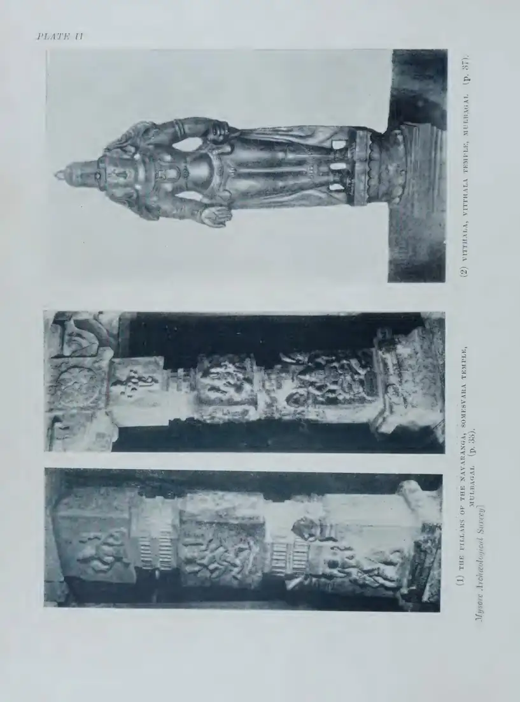
- (2) VITTHALA, VITTHALA TEMPLE, MULBAGAL (p. 37)
South-east pillar: —Mārkaṇdēšvara, cow milking on linga. king saluting linga, Virabhadra, Lingōdbhavamūrti, Tāṇdavēšvara, Indra, Garuđavāhana, Yōganārāyaṇa, Sadāśiva, Umāmahēšvara, seated devotee in costume of the Vijayanagar period.
South-west pillar :— Ugra-Narasimha, Lakshmīnarasimha, four-handed Mahālakshmī with abbaya, chakra, śankha and kaṭihasta, Gajēndra-mōksha in two panels, Kapāla-Bhairava.
North-west pillar :— Gaṇēśa, Umāsahita-Harihara, seated Dhanvantari, acrobatic monkeys, Rāma and Hanumān, Dharaṇīvarāha, Navanītanrītta, Vāli-Sugrīva, Linga, padma, circling acrobats, Kālinga-mardana, Vaikuṇṭha Nārāyaṇa, Sapta-tāla-chchēdana.
North-east pillar :— Yōgānarasimha, padma, Sūrya, Varadarāja, Bhakta seated, Virabhadra dancing, Virabhadra playing on đamaru.
5
In front of the navaranga doorway which has Gajalakshmi on the lintel stands a porch of one ankaṇa with ornate pillars as in the navaranga and a fully ornamented Nandi in it which is of late,
Porch and Mahadvara. Vijayanagar period workmanship.
In front of the porch there is a large pātālānkaṇa of plain octagonal pillars as at Mēlkōṭe and Malūr.
To the east of the porch there is the old Mahādvāra with ornate square-planned Vijayanagar type pillars bearing relievo sculptures and supported by elephants. The figure of Sūrya on the east face of the front right pillar is finely carved.
Outside this doorway is a smaller one with a compound wall enclosing the Kalyāṇi to the south, a dīpastambha and a stone manṭapa with a large bull facing the main god.
The outer view of the main building is interesting for its sharply curved eaves bearing Gaṇēśa, Kumāra and other figures in panels surmounted by a row of sca-lions.
The most interesting object of the temple is a beautiful image of dancing Śiva as Andhakāsura-samhāri (Pl. I, 1 and 2). It is about 3' 7" in
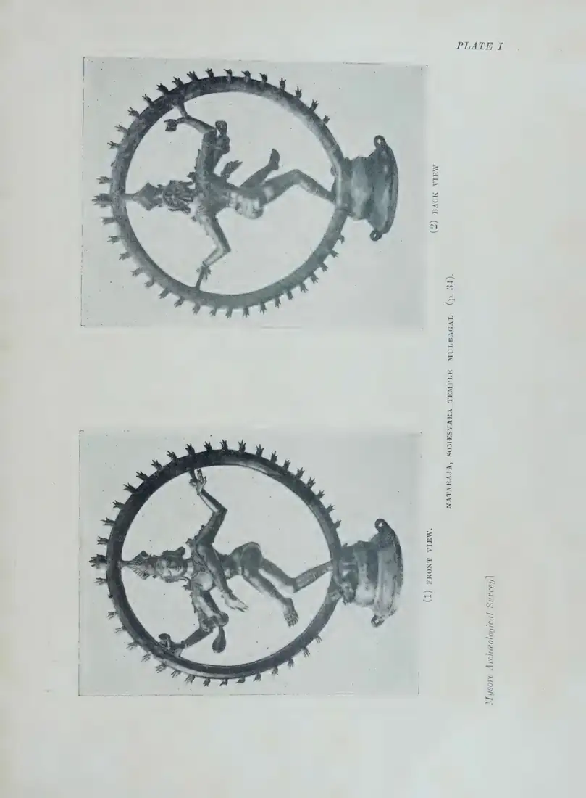
- (2) BACK VIEW (1) FRONT VIEW NATARAJA, SOMESVARA TEMPLE MULBAGAL (p. 34)
Metallic Nataraja. height including the base and is surrounded by a circle of fire. The image proper is 2' 8" in height and represents
Śiva surrounded by a halo from which three pronged flames are darting. Śiva treads on Andhakāsura and is in the attitude of dancing with one leg lifted up. The image is perfectly well proportioned and athletically well built with broad chest, small waist and muscular and well-developed hips, thighs and calves, wearing moderate and not overloaded ornamentation. The god wears makara-kuṇḍala in the right ear lobe and a palmyra cylinder in the left one, thus indicating the amśas of Vishṇu and Pārvatī. On the head of the god is the jatāmakuṭa with darting up peacock feathers, the crescent, the cobra and a jewel on which is clearly visible the engraved symbol 'Om' in Tamil characters. On the forehead appears the third eye, while the hands are disposed thus: svargahasta with a hooded cobra on the brace, ḍamaruga, fire and gajahasta or lamba hasta. He wears an archaic smile on the face. The demon on whom he is treading is looking up in supplication. The image appears to be at least as old as the 13th century A.D. The style is Chōla since the figure is lithe and muscular. It is one of the most valuable pieces of metallic sculptures yet discovered in the State.
To the north-west of the main temple there is the old shrine of the god's consort whose image of black stone appears to belong to the
Other Sculptures. Vijayanagar period.
At the back of the Sōmēśvara temple and against the compound wall is placed a large stone image of Kumārasvāmi who is represented as riding on a peacock. The group is about 6' high from the ground and is very fine. The god has twelve hands and six faces.
Šankara Tirtha
About a mile due east of Mulbāgal and by the side of the road leading towards Naṅgali there are two tanks one of which has a number of brindāvana tombs and dilapidated temples nearby, with four or five inscriptions in the neighbourhood. One of the inscriptions to the west of the navaraṅga doorway of the Vidyāśankara temple is in Kannađa characters (Mb. No. 11) and records that King Bukka of Vijayanagar made a gift of a village to the temple of Vidyāśankara, the guru of Kriyāśakti who was the Rājaguru about the year 1389 A.D.
Anjanēya Temple
Main image; Original structure and additions
The most important temple for the public at Mulbāgal is the Ānĵanēya temple which appears to have been first constructed during the early Vijayanagar days. The image of Hanumān is a relievo, about 10' high, in the striking or vira pose, facing west, with chakra to right and śankha to left carved on the same slab. It was evidently set up originally to protect the eastern gate (mūđala-bāgilu—Mulabāgal) of the plateau of Mysore from the southern enemies and might also have been connected with the old eastern fort gate of the place.
Main Image. The original structure appears to have consisted of the garbbagriha, the śukanāsi, and the navaraṅga of plain pillars, raised on a basement ornamented with sculptures. The mukhamaṇṭapa is said to have been added by Rāja Tōdar Mall during his pilgrimage to the south. Votive images of himself (with Mughul turban) and his wife are found against the northern wall.
Original structure and Additions. To the south of the mukhamaṇṭapa there is a temple enshrining a Kōdaṇđa-Rāma group. This temple has a tower above it. Worship is offered to Rāma in this temple and then to Hanumān. The group consists of Kōdaṇđa-Rāma, Sītā and Lakshmaṇa.
In the enclosure there are also shrines for Kēśava, Gōpāla and Krīshṇa. To the north of the mukhamaṇṭapa of the main temple there are cells for Narasimha, and a small figure of Ānĵanēya, and to their west there is a hall converted into Kalyāṇamaṇṭapa, the walls being painted in oil colours recently in the Indian style by Mr. Maṇđikal Raṅga Rāju, a painter in Mulbāgal.
The western extension of the mukhamaṇṭapa is said to have been constructed by Krīshṇadēva Rāya whose relievo is shown on one of the pillars. This relievo is in the devotional pose.
A tall stone garuḍagamba stands just in front of the mukhamanṭapa. To the southwest of this pillar stands a medium-sized temple of Śrīnivāsa with a garbhagrīha, a sukanāsi and navaraṅga and a mukhamanṭapa facing east. The god is of the same size and shape as the one at Tirupati and is of Vijayanagar workmanship.
Corresponding to the Śrīnivāsa temple on the other side of the compound stands a similar temple of Gōvindarāja or Ranganātha showing Vishnu reposing on the seven-hooded cobra attended by Śrī and Bhū. The image is colossal in size and is fine and of Vijayanagar workmanship.
Part III: Study of Ancient Monuments and Sites › Kolar District › MulbāgalViṭthala Temple
History and General description; Pillar sculptures
In the centre of the old town stands the Viṭthala temple, constructed by the Vijayanagar governors in the middle of the 16th century.
History and general description. It consists of a garbhagrīha, a śukanāsi, a navaraṅga and a mukhamanṭapa with a prākāra and a gōpura which are massively constructed with huge well dressed granite blocks some of which measure 1\frac{1}{2}' \times 2\frac{1}{4}' \times 1' .
The navaraṅga has four finely carved Draviđian style pillars with sixteen-sided shafts connecting three cubical mouldings on each face of which is a carved group. These sculptures are as follows :—
South-east pillar :— Jaya, Gōpis begging for clothes, Krīshṇa on a tree, Vāmana and Bali, Trivikrama, Lakshmīnarasimha, Vēṇugōpāla
Pillar Sculptures. Amaranārāyaṇa, Narasimha fighting Hiraṇya, Ugranarasimha, Yōgānarasimha.
South-west pillar :— Sūryanārāyaṇa, Lakshmī-Janārdana, Varāha fighting Hiraṇya, Veñkaṭēśa, Kālingamardana, Vēṇugōpāla, child Krīshṇa on all fours, Trivikrama, Krīshṇa slaying the elephant, Krīshṇa slaying Baka, Krīshṇa slaying Kamsa.
North-west pillar :— Krīshṇa eating butter, Krīshṇa dancing holding ear-rings, Kālinga-mardana, Krīshṇa slaying Kālinga in the shape of a makara, Kālinga-mardana, Krīshṇa on all fours, Garuḍa, seated Janārdana, Gōvardhana lifted, Krīshṇa slaying elephant, Śakaṭāsura slain, Krīshṇa slaying Bakāsura.
North-east pillar .— Vijaya, Krīshṇa on all fours, Lakshmī-Narasimha, Krīshṇa slaying elephant, Lakshmī-Janārdana, Krīshṇa slaying Bakāsura, Hanumān, Navanītaṇritta, Kālingamardana. Veñkaṭēśa, Vēṇugōpāla with four arms, seated Nārāyaṇa.
The brackets and beams are also finely ornamented. Among these are found : three swans circling like acrobats, four makaras circling, a dog admiring Krīshṇa while looting butter, monkeys seated, etc.
The śukanāsi doorway has stucco Jaya and Vijaya on either side and Ranganātha on the lintel.
The main image (which is supported by a goddess on each side) represents child Viṭṭhala (Pl. II, 2) with his chubby body all naked except for his ornaments and head-dress. He holds a śankha in his left hand and his right hand is in dāna.
Main Image
The utsava group is kept in the navaraṅga.
Part III: Study of Ancient Monuments and Sites › Kolar DistrictNandi
Bhōganandiśvara Temple
The bronzes of the Aruṇāchalēśvara shrine were brought out and examined. Three of them are fine and old:—
Metallic sculptures
(a) A Sōmāskanda group (15" high) showing Śiva and Pārvatī seated in sukhāsana with Kumāra standing between them. The group is well proportioned and fine. It belongs probably to the Chōla period.
(b) Chandraśēkhara (18") slim and fine.
(c) Chandraśēkhara (2') of about the late Vijayanagar period.
Sādali
Sādali which is a village in the Śiḍlaghaṭta taluk is situated at a distance of about 18 miles to the south-east of Bāgepalli. Some of the temples at the place are described in the Annual Report of the department for the year 1911, pp. 41-43. A general view of the Īśvara temple and the details of one of its walls are illustrated in pl. V, 1 and 2 of this report.
Part III: Study of Ancient Monuments and SitesChitaldrug District
Anaji
Kadamba inscription; Fortified hill
No heading in the body: this section starts at its printed page (37).
Ānaji.
Ānaji is a village 12 miles east of Dāvaṇagere on the Jagaļūr road. In the field of Nāgarakaṭte Kuruvattappa, a mile to the south of
Kadamba inscription. the place stands the well-known inscription No. Dāvangere 161 of C. 450 A.D. in which is mentioned a battle between Krīshṇavarma Kadamba and Naṇakkasa Pallava.
Close to the village is a small hill with the relics of the old fort wall of mud which defended it. At almost its top stands a manṭapa
Fortified hill. reconstructed in Pālļegār times with the old pillars of the Yādava times with sixteen fluted shafts having octogonal bellshaped mouldings and wheel moulding over neck. The back ankaṇa is converted into a number of small shrines in one of which is a seated Yōgā-Narasimha of soap stone rather plainly worked and holding in the back hands śankha and chakra.
From the hill a fine view is obtained of the famous Uchchangi Durga, the capital of the Chālukyas and Pāṇdyas. It is a cone-shaped hill, with its north side steep. In the fort on top can be seen a large fort-like citadel and a temple.
View of Uchchangi Durga
On the top of the hill there are said to be a field about eight acres wide, the ruins of the palace of the Pāllegārs, two or three hoṇdas, several powder magazines and the temple of Uchchangiamma, the patron goddess of the Pāllegārs and a number of other temples including about 40 images. The priests are Lingāyats and about 20 families live on the hill. Two festivals are held every year, at Ugādi and at Mahānavami.
Part III: Study of Ancient Monuments and SitesShimoga District
Shimoga
Fort gate—Hanumanta Temple
Hoysaļa Pieces
No heading in the body: this section starts at its printed page (38).
The Hanumanta temple was originally a part of the East gate of the Shimoga Fort. It has recently been extended with the addition of a Kōdaṇḍa Rāma shrine to its north built by one Mr. Ramiah Setty.
The only thing archæologically important about the temple is that the navaraṇga and garbhagrīha doorways and the four navaraṇga pillars are all beautiful Hoysalā pieces brought from some old Jaina temple. The garbhagrīha doorway and the navaraṇa lathe turned pillars are typically fine pieces. But the navaraṇga doorway is the finest of all. Each jamb has five standing figures at the bottom. Above them there are two creeper scrolls, one with animals having varied faces and the other with Yaksha musicians and dancers in the convolutions. The central panel of the lintel has a mutilated Jaina image seated in yōgāsana under mukkođe and supported by a male attender on each side. The panel is beautiful. There is a projecting cornice above on the front centre of which also is a seated Jaina image.
Most probably the old materials were used in the Ikkeri times for the Hanumān temple cailed the Kōte Āṇjanēya temple.
Part III: Study of Ancient Monuments and Sites › Shimoga DistrictHorakere
Lakshmīnarasimha image
Horakere is a village situated at a distance of about 3 miles from the travellers' bungalow at Shimoga.
In about July 1944, one Chabu Sab was getting a saw pit excavated in the backyard of his house at Mandli, a small village about a mile from Shimoga on the Tirthahalli road. He came upon a soap stone image of Lakshmīnarasimha, about 3\frac{1}{2} ft. high, while digging. Since the village belonged to the Sringeri Jahagir, the image was removed for temporary custody to the Rāmēśvara temple at Horakere.
The image is rather small but fine and is comparatively free from damage (Pl. IV, 2). The god is seated in sukhāsana and has a pleasing expression holding chakra, padma, gadā and śankha, the last one passing round the waist of Lakshmī who is seated on the god's left thigh. The image is neatly ornamented and on the prabhāvali in the convolutions of a serpentine tōraṇa emanating from a fine simhalalāṭa are the ten avatāras of Vishṇu: Matsya or fish, Kūrma or tortoise, Varāha, half-human Narasimha, half-human Vāmana, Paraśurāma, Śrī Rāma, Balarāma, Buddha and Kalki on horse back.
The image appears to have lacked final finishing in the shape of polishing and so may never have been installed and worshipped.
Rāmēšvara Temple
Old Pillars
No heading in the body: this section starts at its printed page (39).
The Rāmēśvara temple is a small structure built not more than a few generations ago as seen by the parrots in the ceiling. But its four navaraṅga pillars have been brought from some Jain Basadi built by the rulers of the Gaṅga dynasty in about 1040 A.D. as seen from the inscription on one of the pillars. The temple is beautifully situated with its back to the Tungā river. It is said that 18 years ago the Śringēri Svāmi rebuilt the temple with its face changed from the east to the west and installing the present Rāmēśvara linga.
Nallūr— PAGE
Hindu Temple; Masjid
This is a village about 6 miles north of Chennagiri with about 500 houses out of which about 170 belong to the Muslims and the rest to the Uppārs and Viraśaivas. To the east of the village is a small tank called Doddakere. On its west bank is a small country tiled building with mud walls containing Kēśava, Nagarēśvara, Subrahmaṇya, Gaṇapati, Hanumān, Durgā, etc. The image of Kēśava is of Hoysaṭa workmanship and is the main image.
To the west of the compound of the building is a large enclosure to the west of which is a mud walled Masjid, about 50 or 100 years old. There is nothing archaeologically or architecturally remarkable about this building. The claim of the local
Masjid.
Vīrānjanēya
No heading in the body: this section starts at its printed page (40).
Khāji that the building is of the days of Malik Kafur is not supported by any evidence.
To the north of the Masjid runs a road and to its north is a temple of Hanumān facing south with the Mosque directly in front of it. It contains a Virāñjanēya which belonged evidently to the east Fort gate though the structure enshrining it is a tiled one and of comparatively recent times. The Āñjanēya image is of Vijayanagar times.
To its west is a small mud walled tiled shrine containing a small Kēśava image of Hoysala workmanship with the 10 avatāras of Vishṇu carved on the prabhāvalī.
Part III: Study of Ancient Monuments and Sites › Shimoga DistrictKalkere
About 11 miles to the south of Chennagiri at the foot of the Āsandi range of hills and in a horse-shoe shaped valley there is the bechirak village of Kalkere, the name being derived from a now dried up stone tank. It has three temples standing in various stages of decay and called the Ballēśvara, the Kallēśvara and Hanumantarāya temples. Of these the Ballēśvara temple is the largest and the Kallēśvara temple the oldest as seen from an inscription of Ballāla II in the south-east corner of the navaraṅga.
Kallēšvara Temple
General description; Viragals
This is a small temple of soap stone facing west, with a small closed mukhamaṇṭapa, a navaraṅga doorway with perforated jambs, a small navaraṅga (about 13 ft. square) with four plainish octagonal pillars and a small, now empty, garbha-grīha evidently housing a small linga of old.
On the south-east of the navaraṅga is placed a three panelled viragal with the figure of a Śaiva hero who died in combat with a horseman.
Viragals. The viragal bears no inscription.
A Māsti Guđi has the image of a short husband and his tall wife with raised hand. Closeby is another group of sculptures showing two bowmen of whom one is fighting a tiger.
Hanumān Temple
The Hanumantarāya temple has a large (6 ft. high) Virāñjanēya relievo with the head of Akshayakumāra at his feet, a small Hanumān at his back with the hands akimbo and two other Hanumān figures in two other different attitudes at the lower left and right hand corners.
Ballēšvara Temple
History and general description; Mahishāsuramardinī; Navaranga
(Pl. VI)
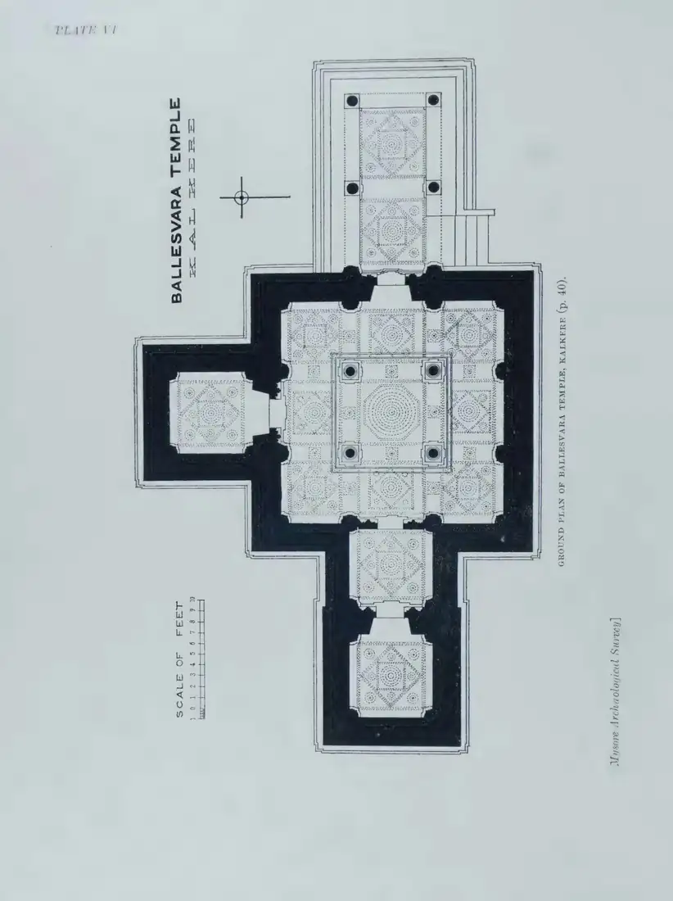
- GROUND PLAN OF BALLESVARA TEMPLE, KALKERE (p. 40)
Cited in the text: p. 41 ↩
The Ballēšvara temple called also the Bēlēšvara temple was constructed in 1221 A.D. according to the inscription in its mukhamaṅtapa.
History and general description
It is the largest temple in the neighbourhood and has a western and a northern cell, a western šukanāsi, a navaranga with four fine lathe turned bell-shaped pillars and a beautiful high domed ribbed central ceiling and a four pillared manṭapa with its proper bull absent and its pillars cylinder-shaped. Around the manṭapa is a stone railing partly disappeared. In the navaranga are kept a small image of Bhairava and a much larger and fairer one of Mahishāsuramardinī in the Hoysaļa style.
Except for the slightly damaged nose the image of Mahishāsuramardinī is a fine sculpture showing the goddess well ornamented and engaged in a vigorous fight with the demon. The arrow piercing the buffalo, the Rākshasa's moustaches, etc., are
Mahishasuramardini.
realistically carved.
On the chandraśila in the navaranga there is a fine recumbent bull probably removed here from the navaranga. The navaranga doorway
Navaranga.
has a Gajalakshmī lintel. The navaranga ceiling has the Dikpālas with their vāhanas and armies. The north cell is now vacant.
Part III: Study of Ancient Monuments and Sites › Shimoga DistrictVarādāmūla
Tank; Image of Gāyatri
This is a place about 6 miles south of Sāgar. Here is a large tank called Varadā-tīrtha from which the river Varadā takes its rise.
Tank.
The tank is about 30 yards square and is built all round with laterite blocks.
The chief deity of the place is Gāyatrī Dēvī installed in a laterite temple covered over with lime masonry and a rain proof Mangalore tile
Image of Gayatri.
roof above. The building has nothing ancient about it except two yāļi faces of trap stone supporting the steps.
But the image is unique. It shows the deity standing on Hamsavāhana with the four hands of the goddess thus disposed: akshamāla, padma, abhaya, Sītāphala fruit. The prabhāvaļi and the image are of the same stone and the hamsa is on the pedestal. The image is clearly of the Keļadi period. The original Chālukya image is said to have been broken and is stated to be in the Lakshmī-tīrtha which is just in front of the temple. In its place the new image is said to have been prepared and installed under the patronage of the Keļadi Nāyakas.
The image is shown with coventionalised sari , breast band and conical kirīṭa.
6
Sadāśiva shrine
History and General description; Pillars and Doorways; Image of Gajalakshmī; Sacrificial vessel and Gaṇapati
Around the Lakshmī-tīrtha, to its south and west are a number of smaller Śiva temples, evidently votive, one of which contains an image of Vīrabhadra. But the most interesting building in the area is the Sadāśiva temple (Pl. VII, 2) which appears to have been constructed by the Ikkēri Chiefs, perhaps Sadāśiva Nāyaka out of the old materials of the Chālukya period.
The building has a garbhagriha which is round backed with masonry vimāna, a śukanāsi with a fine Chālukyan doorway, and a mukhamaṇtapa with four pillars, on the steps leading to which is an outline carving of an Ikkēri Nāyaka (Sadāśiva Nāyaka), wearing turban, uttarīya, long coat, kammarband and necklace and with his hands joined over his head in reverence. There is a one line Kannaḍa inscription above his head.
The pillars and doorway are highly ornamented and fine. The former are bell-shaped with varied rope ornamentation below the bells and garland and other hangings on the bells and with floral devices above.
Pillars and Doorways. The śukanāsi doorway has two bands of variedly headed gryphons and the lintel bears a fine panel of Gajalakshmī (Pl. VII, 3) which
Image of Gaja-Lakshmi. may be regarded as the most beautiful among such sculptures known in the Mysore State. Lakshmī is seated in padmāsana with five rearing elephants on each side, each pouring water on her from a jug-like vessel held in the trunk. The goddess has only two hañds and holds a padma in each. Her kirīṭa is very ornate and reminds us of the kirīṭas at Ajanta. The image appears to hail from Chālukya Vikrama's times or earlier.
Near the Lakshmī-tīrtha lies a stone vessel, 6 ft. long, which has two compartments each with the double lead out. It is evidently the sacrificial vessel used at the sacrifice performed during the Nāyak days 200 years ago. (Pl. VII, 4.)
Sacrificial vessel and Ganapati
To the north of the Lakshmī-tīrtha is a fine Chālukya Gaṇapati image and in the north-east is an inscription of the 8th year of Chālukya Vikrama.
The roof over the manṭapa is of stone, each slab being finely fitted to the next one with a groove.
Gōpālakrisṇa shrine
To the south of the Varadâ-tīrtha is a small shrine containing a fine image of Göpālakrishṇa, carved in one stone, with cows on the jambs, Garuḍa on the pedestal, a tiara kirīṭa and scroll work resembling Nāgabandha on the tōraṇa and a consort on each jamb. The Garuđa facing this shrine is also beautiful and of the same style with a padma on the pedestal and a tiara kirīṭa and fine scroll work on the tōraṇa. The work looks like Chālukya. But it may possibly be a successful imitation by the Keļadi sculptors who were famous Guđikāras.
A Gaṇapati temple near the road has in each corner a trap stone block finely polished.
The Varadâ tîrtha is said to have at its bottom about 24 smaller laterite built ponds each with a name. The wasteweir has an old worn slab of Chālukya times.
Part III: Study of Ancient Monuments and Sites › Shimoga DistrictKāgarsu
This is a small village on the right bank of the Šarāvati near the ferry on the road to Bhatkal. Here stands a ruined and deserted temple of Virabhadra built of laterite blocks and wood work without any architectural character. The image is said to have been removed to Sāgar for installation in a temple at that place.
The Virabhadra image of Kāgarsu has now been removed to Tālūr Hiremaṭha near the first mile stone to the south of Sāgar. It is of
Image of Virabhadra
Hirebhāskar
Hirebhāskar is a small village which is about 2 miles from the Mađenūr dam and will be the first to be submerged when the waters are impounded by the dam in June 1946. Hence the dam has been called the Hirebhāskar dam.
To the south of the village on a high ground, now so entirely covered over with thick jungle that even the pathway is covered and can be followed with difficulty, there stand the ruins of a laterite built temple facing east and now without even a roof, as the latter was burnt down in a forest fire 10 years ago. In the garbhagriha of the temple there is a medium sized trap stone linga on a pānipīṭha. In the small navaraṅga are now found four images: (1) A trap stone bull, facing the linga, of Chālukya workmanship though in no way extraordinary; (2) Mahishāsu-ramardinī of about the Chōļa or Chālukya times, much worn on the surface by water action and not beautiful now; (3) Gaṇeśa (Vidyā-Gaṇapti—3 ft. high) fairly good, holding tusk piece, battle axe, padma, and bowl full of apūpa (Pl. VIII, 2); (4) Saptamātrikā panel (Pl. VIII, 1)—the finest piece of all—4 feet high and 15 ft. long and of Chālukya workmanship, with the figures finely carved along with the vāhanas below in this order:—
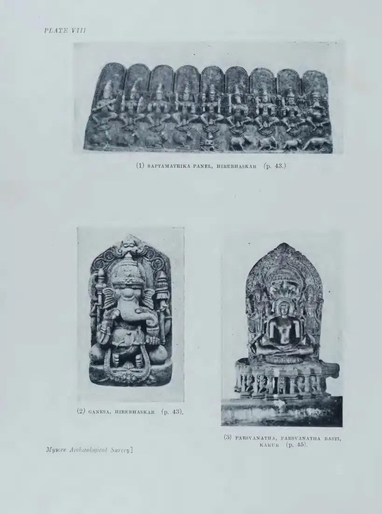
- (1) SAPTAMATRIKA PANEL, HIREBHASKAR (p. 43)
(1) Vīṇādhāri Vīrabhadra with bull.
(2) Brāhmī with hamsa.
(3) Māhēśvarī with bull.
(4) Kaumārī with peacock.
(5) Vaishṇavī with Garuḍa.
(6) Vārāhī with buffalo.
(7) Indrāṇī with elephant.
(8) Chāmuṇḍā with jackal.
(9) Gaṇēśa with rat.
Part III: Study of Ancient Monuments and Sites › Shimoga DistrictMađenūr
Íšvara temple
Images; Viragals
This temple is said to have existed in the village for many years. The present structure however is new. It has a linga faced by a Nandi, the latter having been brought from elsewhere. But the most interesting sculptures are behind the temple on its back wall. In the central niche is a small standing Mahishāsuramardinī of undoubted Chālukya workmanship. Though small, it is quite good.
Above it is mounted a Saptamātrika group of Chālukya times with a Kannaḍa one-line inscription above. On either side is mounted a finely carved vīragal of five panels with a Kannaḍa inscription on the bands. The sculptures show heroes on foot fighting warriors in the bottom panels. The sculptures are very vigorous.
Viragal.
Part III: Study of Ancient Monuments and Sites › Shimoga DistrictChimali
This is a village near Karūr on the Bhatkal road. It is reached by a ferry boat across the river. There are two Mangalore tiled temples in the village, one of which has a Gaṇēśa of ordinary workmanship and the other a good Mahishāsuramardinī of Chālukya work about 2½ ft. high. The latter is in the standing posture and is treading with one foot on the buffalo. From the back of the buffalo is springing up the demon who is being speared by the goddess.
Image of Mahishāsuramardinī
Part III: Study of Ancient Monuments and Sites › Shimoga DistrictKarūr
There is a small Mangalore tiled temple in this village enshrining an image of Mādhava, about 2½ ft. high (gadā, chakra, Śankha, padma), probably of the Ikkēri period.
Image of Mādhava
Pāršvanātha Basti
General Description; Main image; Other images
To the south of Karūr by the road-side is a compound containing three Jaina shrines which will not be submerged by the Hirebhāskar
General description. reservoir but will lose part of their lands. The largest of them faces east. It is a laterite structure with a Mangalore tiled gable roof. It has a garbhagrīha, a navaraṅga and a four-pillared open mukhamaṇṭapa. This was constructed by the late Mr. Manjappa Setti about 40 years ago. The work of the navaraṅga is very good for modern times. There are four pillars made in imitation of Chālukya pillars with the cubical, the 16-fluted, the pot-shape, etc., mouldings. Above there is a corbelled Bhuvanēśvari of wood carved with the eight Dikpālas and other features.
In the garbhagrīha is a seated group of Pārśvanātha, (pl. VIII, 3) one of the most beautiful in the State. It is of Chālukya or Śāntara workmanship and is about six feet high. The god is seated in
Main image. padmāsana, is beautifully featured and bears a light smile on his face. He is about 3 ft. high. He is seated on a simhapītha over which is a padma. On either side of him is a chāmara bearer. There is a seven-hooded cobra above and over it a mukkođe. The prabhāvali is finely carved with two bands of arched creepers, having hamsas and Yakshas playing on mṛidangas in the convolutions.
The garbhagrīha doorway is guarded by the images of Dhārāmudra Yaksha (somewhat worn) and Padmāvatī Yakshiṇī (padma, pāśa,
Other images. aṇkuśa and phala) both of which show Śāntara or Chālukya workmanship.
In the navaraṅga are also kept the following images: A standing Padmāvatī in tribhaṅga with cobra over head and holding: padma, chakra, paraśu, phala. A seated Sarasvati of stone (pl. IX, 2) a Yaksha of metal with two hands joined in aṇjali and the two back hands holding up a chakra.
Ādinātha Basti
To the right of the main shrine facing north is another smaller shrine with a Chālukya style image not of Ādinātha but of Pārśvanātha.
Pāršvanātha image
Part III: Study of Ancient Monuments and Sites › Shimoga DistrictAvinahaļļi
Durgā and Virabhadra; Other images
This is an important village about 7 miles from Sāgar wherefrom the road to Bhatkal branches off from the road to Nagar.
It has a Durgā shrine of Mangalore tiles with two images of Durgā, both of them being old pieces of Śāntara times but of poor quality.
Durga & Virabhadra. There is also a Virabhadra temple with a Virabhadra image of about 50 years. About one furlong to the west, just by the side of the Bhatkal road stand the ruins of temples with lingas, Basavas, figures of Virabhadra, Bhairava, Bhadrakālī, etc., lying about. One of these was collected for the Archæological Museum.
Further to the west by the road-side is a Gaṇapati temple now overgrown with
Other images. jungle. The image of Gaṇēśa lies near the doorway.
To further south stands a temple of Chikka Virabhadra showing workmanship of the Ikkēri or even later period. No pūja is offered.
To further west along the roadside is a Mangalore tiled temple of a small Virāñjanēya treading on Akshayakumāra. This probably marks the western limit of the old village which was deserted about 50 years ago.
Corresponding to it on the south of the road and at some distance stands a similar Mangalore tiled one-aīkaṇa temple of Byāṭarāya with the image about four feet high, in relief, holding arrow, chakra, śankha, and bow of poor Pālļegār workmanship. In front is a fine pot stone Garuđa kneeling with joined hands. The pose is interesting. It is also of Pālļegār days.
Ancient Āvinahaļļi
About a mile to further west is the old Āvinahalļi of Ikkēri days, a large town with a fort, many ruined temples, wells, etc., all covered over with thick jungle.
Part III: Study of Ancient Monuments and Sites › Shimoga DistrictVīrabhadrāpura
Íšvara Temple
Chālukya style of the Ikkāri school; General description of temple; Outer view; Navaraṅga doorway; Navaraṅga; Sukanāsi and garbhagrīha
The village of Virabhadrāpura, about 7 miles south of Āvinahalļi on the road to Nagar and just to the south of the Haridrāvatī bridge, will be partly submerged by the Hirebhāskar reservoir. Here is a small Ísvara temple of granite stone belonging to the Ikkēri school of architectural style, serving as one more instance to show that the Chālukya style of architecture continued in the territories of the Keļadi Nāyakas as it did during the Vijayanagar period and even now does among the sandalwood and ivory carvers of Sagar and Sorab.
Chalukya style of the Ikkeri School.
The temple is a small one facing east about 30 feet long and 15 feet broad with a garbhágriha, śukanāsi, and a navaraṅga but with no mukhamaṅtapa or pradakshiṇā.
General description of temple.
The structure is raised on a platform about 3ft. high with three cornices. The walls are plain except for the rough right angled pilasters which break the monotony and a low relievo elephant on the south and an elephant and a tortoise on the north.
Outer view.
The eaves are sloping and straight with the corners protected with cobra-headed stone corners. There is no parapet. The vimāna is of granite and has a projection over the śukanāsi to the east in front of which is a kīrtimukha within which is a seated lion with its tail lifted up. The tower has no Dravidian type storeys but is ornamented with several rows of dentil cornices, some having the dentils above and some below. The top cornice has a Nandi recumbent in each corner with a Śaiva figure on each of the faces of the śikhara. The śikhara is indented square in shape with a lion face on each of its four sides. There is no metal kalaśa on top.
The navaraṅga doorway is reached by a flight of four stone steps each of which is flanked by a large trunk like scroll with an elephant
Navaranga doorway.
inset on the outer face. The front pilasters have brackets of lions rearing on trumpeting elephants as in all Dravidian temples. Muslim influence is betrayed by the navaraṅga doorway which is a Mihrab arch with a parrot in each corner.
The navaraṅga which is without piliars has on its ceiling a padma with the eight Dikpālas and floral ornamentation in low relief. On
Navaranga.
the inner walls of the navaraṅga are the following relievos from the south-east :—
(1) Bull-headed, human-bodied standing Nandi beating the mrīdaṅga.
(2) Shaṅmukha on a peacock.
(3) Vidyāgaṇapati with tusk, aṅkuśa,pāśa and apūpa bowl.
(4) and (5) Śaiva Dvārapālas.
(6) Mahishāsuramardinī standing and treading on the buffaio and wearing breast band.
(7) Bhairava with moustaches and blood-licking dog.
(8) Bhṛingi holding Ěkanāda tambūra in right hand, and dancing on three legs.
The śukanāsi has a small bull and the garbhagrīha a small linga on a pīṭha about
Sukanasi and garbhagrīha
2 feet high.
In the front yard is a stone Bali-pīṭha of the size and look of a household brīndāvana with a broken small bull to its front.
Relievos of Nāyaks
No heading in the body: this section starts at its printed page (48).
On the navaranga floor are the relievos of three Nāyakas wearing Moghul style turbans, armlets, and bracelets, moustaches and short beards, uttarīyas , long coats, kummerbands with dagger, etc., kachche dhoties , and anklets. But no names are carved.
Part III: Study of Ancient Monuments and Sites › Shimoga DistrictGaddemane
Inscription of Šilāditya
No heading in the body: this section starts at its printed page (48).
About 4\frac{1}{2} miles south of Sagar to the east of the Nagar road by two furlongs and about a furlong to the west of the village of Gaddemane
Inscription of Siladitya on a high land planted with young teak plants stands, facing east, a greenish trap stone slab about 5\frac{1}{2} feet high (Pl. IX, 1), with a vīragal in three panels and an early Kannaḍa inscription of four lines (2 feet and 9 inches) already published by Rice as the Hosur inscription (Sagar No. 64) and again by Dr. Shama Sastry in the Annual Report for 1926 as the Gaddemane inscription of Šilāditya. Since the inscription is of Šilāditya's days (about 700 A.D.) it is highly interesting.
The lowest panel shows the hero Satyānka (accompanied by one of his men) fighting, with rectangular shield in left hand and a sword in the right, wearing shorts, kummerband with dagger and long hair in a knot on his head, his enemies being armed with bows and arrows. Satyānka is pierced in the chest by a long arrow.
In the second panel he is being carried off to heaven by two heavenly nymphs with slim bodies.
In the top panel he is seated on a stone stool (in heaven) attended by two lady chāmara bearers. He is seated with folded legs one of which is raised up and supports the right arm. No godly figure appears above.
This Šilāditya has been identified as Śrī Harsha by Dr. Shama Sastry.
Part III: Study of Ancient Monuments and Sites › Shimoga DistrictSāgar
Close to the taluk office just to its south stands a large enclosure of laterite blocks in the middle of which stands a small trap stone built
Šiva Temple
Part III: Study of Ancient Monuments and Sites › Shimoga DistrictOddaļļi (Varadahaļļi)
Mahishāsuramardinī; Portuguese carving
No heading in the body: this section starts at its printed page (49).
Oddhalli.
(Varadahalli).
Oddhalli is a small village of about six houses inside a horse-shoe-shaped valley about half a mile south of Yajgalemane and a mile south-west of Kalmane. A stream takes its rise here from the hill side and flows through two laterite built ponds and areca-nut gardens. By the side of one of the ponds near the Bhatta's house stands a laterite block temple with a Mangalore tiled gable in the garbhagrīha of which stands a small but beautiful hard black stone image of Mahishāsuramardinī ( 2\frac{1}{2} ') of beautiful early Chālukya workmanship (Pl. IX, 4). The four-handed goddess who holds prayōga chakra, and śankha in two fingers against a narrow probhāvali stands treading on the buffalo and spearing it. She wears a beautiful kirīṭa of jewels, has no breast band, has drapery in folds and there is no lion. She has a small prabha behind her head and wears makarakundala, anklets, bracelets and armlets. The tōraṇa is bare and has no sculptures.
In the temple verandah was kept a wooden board (Pl. X, 1) looking like a mantle piece with very fine Portugese carvings. There are three panels at the bottom showing the heads of the king of Portugal (bearded in centre), his queen (left) and the crown prince (right). Above is a group of nymphs and cupids in whose midst is a radiant headed Mary. Above is a floral arch ornamented with winged gryphons, demon heads and a human head (God) in the centre top. This wooden board is now brought over to the Archæological museum at Mysore.
Part III: Study of Ancient Monuments and SitesBangalore District
Bangalore
Kempegauđa's Watch towers
Hebbāl
Ulsoor; Lal-bagh; Gavipur
On the way to Hebbal, to the west of the Palace compound on a commanding height is situated one of Kempe Gowda's Watch Towers, the north one of the four. On a basement about 4' high rise four granite pillars, 6 feet high, over which is a tower 10 feet high of brick and mortar in the Dravidian style. On the
7 floor of the basement is a polished granite slab about 3\frac{1}{2}' \times 2' on which is an English inscription, in block letters :—
(1) THIS IS ONE OF THE FOUR
(2) WATCH TOWERS SAID TO HAVE
(3) BEEN BUILT BY THE FAMOUS
(4) KEMPE GOWDA OF MAGADI
(5) 1521—1569
(6) AND
(7) MARKS THE LIMITS TO WHICH
(8) IT WAS PREDICTED THAT THE TOWN
(9) OF BANGALORE WOULD EXTEND
On the tower, to the east, is Śiva seated as Gangādhara, to the south, Ardhanā-riśvara, to the west Vēnugōpāla, and to the north Lakshmī on lotus. In each corner is a recumbent Basava. The śikhara is round and domed and the tower appears to be of solid brick.
To the north-west of the tower by about 60 feet stands the trigonometrical survey mark. Just to its north-east stood formerly an old guard house of size stones which collapsed a few years ago.
Ulsoor.
To the east of the Ulsoor tank on a rocky height stands the eastern tower of Kempe Gowda, with a base about 2 feet high and the rest of the tower as usual up to twenty feet high. Each pillar is square with octagonal shafts and the figure on each side of the tower is Śiva in sukhāsana. The tablet reads exactly as at Hebbāl.
Lal-Bagh.
To the east of the Lālbagh on a rock stands the south-east tower and it is different from the other three in shape. Very probably it is a tower built in later days. It has no basement and its lower storey is raised with four roughly chiselled pillars. The tablet worded exactly like the others is embedded in the wall on the east. At the back of this wall is a size stone structure with the steps leading to the first floor. This storey is raised on brick walls with an arched tower on each side. Above is a plain round dome with no Hindu figures. The influence of Muslim architecture is seen clearly and the tower may belong to the 18th century. Perhaps it was built in place of an earlier one.
One of the manṭapas near the umbrella at Gavipur closely resembles the Lal-bagh manṭapa. They are both unlike the other three manṭapas of Kempe Gowda.
Gavipur.
Close to Gavipur to the south west of the Kempāmbudhi tank on the top of a rocky eminence stands the fourth tower of Kempe Gowda which is similar to the one at Hebbāl. The pillars are more ornate, having 16 sided shafts connecting the cubical mouldings. There is a padma on the open mantapa ceiling. The fine tower has figures like those in the Ulsoor tower. This tower has been provided with a dome electric light in place of the kalaśa.
Part III: Study of Ancient Monuments and SitesHassan District
Halebiđ
Stray sculptures in Hoysalēšvara temple compound; Stray images in Bastihaļļi; Near Nagarēšvara temple mound
STRAY SCULPTURES IN HOYSALĚŠVARA TEMPLE COMPOUND.
Near Gaņēša : Tāņdavēšvara group— 2\frac{1}{2} feet.
Southwest compound : Part of sculptured wall.
Under tree to east : Four-handed large image. Saptamātřikā broken.
Inside temple : Do another piece.
Near east compound wall : Ornamented corner stone.
Near north gate : Two large female musicians, one with tāļa and the other with mřidaņga.
One part of Dikpāla group. Six groups of musicians.
Mahishāsuramardinī, etc.
Wall piece.
STRAY IMAGES IN BASTIHALĚI
One Yaksha and two Yakshiņīs near the old pond of the Bastis. Gaņapati and other sculptures near the gateway. Also a god in sukhāsana in Basti compound.
Jina group.—South wall.
Kāļiņgamardana—North wall.
NEAR NAGARĚŠVARA TEMPLE MOUND
1. Šiva as Gajāsuramardana.
2. Vishnu on Garuđa.
3. Indra on elephant.
4. Nārāyaņa.
5. and 6. In the verandah of Kariyaņna's temple: Sarasvatī dancing and skeleton Kālī dancing.
7. In the children's park :, Gaṇēsa, Lakshmīnārāyaṇa, half a dozen fine turrets, etc.
8. In front of Virabhadra shrine : Gaṇapati, etc.
9. Near Bus Circle : Gaṇēsa, Tāṇḍavēśvara, etc.
Part III: Study of Ancient Monuments and SitesMysore District
Kaļale— PAGE
Iļīgie Mālagamma shrine; The Rāyābhishēka Manṭapa
About a hundred yards to the east of the Lakshmīkānta temple stands a small building in the inner apartment of which is a small mound or platform containing the ashes of a lady of the Dalvoy family who immolated herself with her husband. The doorway carved of sandalwood has a large panel containing a relievo group of the husband and wife who stand in embrace kissing affectionately. It is a unique group fit to be preserved.
The Rāyābhishēka manṭapa is an old structure entirely renewed commemorating the coronation room of the Dalvoy family. It contains portraits of the Dalvoys of the 18th century.
The Rayabhisheka Mantapa.
Bhērya
A place of Antiquity
No heading in the body: this section starts at its printed page (52).
The village of Bhērya which is situated at a distance of about 2 miles to the north north-west of Hosagrahār, a Railway station on the Mysore-Arsīkere Railway line, appears to have been an ancient agrahāra town existing from the Hoysala times as evidenced by the Hoysala temples of Chennakēśava and Ēśvara. During the time of the Mysore King Dēvarāja (C. 1666) the place was renamed Dāvarājapura after the King ard grants were made to the Brāhman inhabitants of the place.
Chennakēšava Temple
General description; The Navaraṅga; Navaraṅga ceilings; Sukanāsi; Main cell and Image
The temple of Chennakēśava which is built of potstone stands on a platform, now covered over by debris and faces east. The plans of the grabhagrīha and navaraṅga are both square with offsets.
General Description.
The outer walls are raised on a basement consisting of five cornices of which the lower three have dentil mouldings. The fourth is square and mostly plain except for a frieze of figure sculptures in the north and north-east. The walls are relieved by right-angled pilasters and turret-bearing pillars and niches. The turrets are mostly Draviđian. Inside the niches on the navaranga outer walls there are unworked mouldings evidently meant for being carved with figure sculptures. But inside the niches of the garbhagriha outer walls the following figures are found:—
South :— Bhairava, Gõvardhana-dhāri, Dancing Gañeśa.
West :— Vīrāñjanēya, worn out figure of Šrīnivāsa with the left lower hand appearing to be on kaṭi ; Garuđa.
North :— Kālingamardana, Vēnugōpāla
Indistinct ( ? Yamaļārjuna episode).
The frieze of sculptures on a basement cornice on the north and north-east of the navaranga outer wall is mostly covered over by debris. But in the north-east is seen a row of warriors and the figure of a king or chief seated on throne—perhaps the builder of the temple.
The eaves, parapet and tower of the temple have all collapsed completely.
The navaranga doorway is typically Hoysaļa in character and is supported by figures of Vaishṇava Dvārapālas carved at the bottom of the jambs which consist of a series of vertical mouldings on either side, viz. , scroll, pilaster, scroll and medallion. The lintel stone is well carved with pendant buds, a Lakshmī-Narasimha group and an eaves-shaped cornice above with a row of small hanging lotus buds.
Against the interior walls of the navaranga are found cruciform pilasters while the pillars in the central square are bell-shaped.
The navaranga ceilings are all worked gracefully in the following order, proceeding from the east clockwise :—
1. Oblong and divided into nine small panels each carrying a lotus medallion in relievo.
2. Square with an inset deep circle worked with the representation of a beautiful lotus with petals and pendant bud.
3. Similar to 1 above ; but the medallion in one of the panels is inside a Šrīchakra.
4. Similar to No. 2.
5. Similar to No. 1.
6. Similar to No. 2.
7. Similar to No. 2.
8. Similar to No. 2.
9. Central ceiling is worked with a beautiful deep dome rising in three concentric circles raised on an octagon. The front face of the octagon contains the representation of the Ashtadikpālakas in their respective positions and riding their respective vehicles. The circle above the octagon has its front face worked into a series of turrets with rearing lions in between them. Above the lions the back slab of the ceiling contains rafter-like designs between which appear conches. In the centre of the ceiling there is a large graceful lotus pendant.
The šukanāsi doorway is supported by Vaishṇava Dvārapālas.. At the extreme sides of the jambs are perforated screens, while on the jambs appear vertical mouldings representing pilaster, scroll and medallion designs. The lintel is similar to that of the navaraṅga doorway; but has a Lakshmī-nārāyaṇa group. The šukanāsi ceiling is beautifully worked with the following concentric cornices: octagon, square and square with inset circle containing a lotus flower and pendant.
The garbhagrīha doorway is also supported by Vaishṇava Dvārapālas similar to the navaraṅga and šukanāsi doorways and has a Lakshmī-Narasimha group on the lintel. The garbhagrīha ceiling is like that of the šukanāsi. In the middle of the garbhagrīha on a Garuđa pedestal stands the image of Chennakēšava, about 5 feet high, in a graceful samabhanga, holding padma, šankha, gadā and chakra. The image is exuberantly carved with minute details of ornamentation. The tōraṇa has four rows of ornamentation consisting of floral and scroll work with a kīrtimukha above. The ten avatāras of Vishṇu appear on the prabhāvali.
Part III: Study of Ancient Monuments and SitesMandya District
Sātanūr
Old relics
No heading in the body: this section starts at its printed page (54).
About 2½ miles to the north north-east of Manđya the village of Sātanūr is situated. It contains a few architecturally unimportant temples belonging to the 17th and 18th centuries and several vīragals of the Nāyak period commemorating the death of heroes in defence of the cattle and women of the place. One of the larger vīragals contains four panels instead of the usual three. The first from the bottom represents the fight, the one above it represents the hero as being borne in a vimāna, the third represents him like the mythical Garuđa with wings, while the last represents Kailāsa where the hero is shown as worshipping the linga.
About a mile and half to the east of Sātanūr is a hillock on whose summit is built a Narasimha temple facing east. This temple is a granite structure of about the 18th century A. D. very plainly built and calling for no special remark. The main image in the garbhagṛiha is a Kambha Narasimha, with the head of a lion represented in relief on a cubicai pillar.
Narasimha Dēvara Guđđa
Gudda.
To the left of the stone pillar in front of the temple is a bṛindāvana the western slab of which bears a Kannaḍa inscription of about the 18th century.
The ceiling of the porch of the temple is raised on three sets of corner stones with a padma in the centre.
The temple is a popular institution where an important festival is celebrated on the last Saturday in the month of Śrāvaṇa every year. The festival is attended by a large gathering of devotees from distant parts.
To the north of the steps in front of the stone pillar is enshrined in a niche a small image of Bhairava in front of whom is placed a square pedestal the top of which bears the representation of a pair of feet coiled round by a three-hooded cobra around which are shown figures of sacrificed ram, buffalo and human beings.
To the east of the above there is an one-ankana cell in which is enshrined a relievo figure of Vīrāṇjanēya. In front of this cell is found on a rock boulder the inscription No. 72 Mandya taluk E.C. Volume III.
The steps leading to the hillock contain rudely incised figures of devotees with some names carved in the late 19th century characters.
Part III: Study of Ancient Monuments and SitesTumkur District
Sira
Malik Rīhan Darga
History and General description
Verandah; Second storey; Dome; Tomb
No heading in the body: this section starts at its printed page (55).
This Darga is the best monument in the town of Sira and one of the Indo-Saracenic buildings in the State. It was built as the tomb of Malik Rahan, the Bijapur General who conquered Rangappa Nāyaka, the Pāllegār of the Fort of Sira and got him beheaded.
History and General
Description.
The building is a small one compared to those in Bijapur and Bidar; but it is a fine one which deserves to be well kept.
On a basement of about 4\frac{1}{2} feet high runs a verandah with five pointed arches on each side, on each jamb of each of which is a fine padma in high relief. Above the arches is a frieze of pipul leaves and further up there is a row of Hindu brackets with kalaśa like drops. These support a row of eaves above which is a fine parapet of trefoil mouldings.
Verandah. Behind the parapet and above the verandah there is a terrace behind which is the second storey supporting the dome. The ornamentation of the second storey is similar to the first except that in each corner of the parapet stands a fine stone minaret with octagonal shaft carved.
Second storey. The central dome which rises on a padma is about 12 feet in diameter and is surmounted by a metal kalaśa with a crescent on top. The dome is bulbose and is said to be of stone.
From the verandah on each side a stone doorway opens to the room in which the tomb stands. But on the arched lintel are painted designs. Above the inner room all round is a series of arches said to be of potstone and above these rises the dome. The minarets are fine works of art. The ceilings of the verandah have also padmas in high relief.
Part III: Study of Ancient Monuments and Sites › Tumkur DistrictAmrītūr
Situation and Antiquity
No heading in the body: this section starts at its printed page (56).
Amritūr which is situated at a distance of about 7 miles to the south-west of Kuñigal appears to have been an ancient agrahāra Situation and Antiquity. town.
From the inscriptions at the place it is learnt that the old names of the place were Vira-Narasimhapura and Ātakūr. The old site of the town is reported to extend to the south of the Āsvara temple called locally the Chandramaulēśvara temple near the tank. It is said that old wells are occasionally discovered in the fields.
Chandramaulēšvara Temple
General description; Outer view; Porch; Pillars; Navaranga and Ardhamaṇtapa
The Chandramaulēśvara temple which is situated to the west of the tank is a granite structure of about the sixteenth century. The General description. temple consists of a garbhagrīha enshrining an udbhavalīnga, an open śukanāsi with an ardha-maṇṭapa in front divided into three compartments and a navaraṅga with a three-ankaṇa porch in front. A few yards to the east of the temple stands a monolithic pillar about 45 feet in height.
The outer walls of the temple which are built of stone, so far as the garbhagrīha is concerned, and of brick and mortar in the case of the rest of the structure, are plain.
Outer view.
The pillars of the porch have a cubical base with hooded moulding at the top corners and a shaft which has an eight-sided band and a sixteen-fluted cylinder secured in the middle by a smaller eight-sided band. Above the shaft of each pillar there are a wheel moulding and a square abacus in the case of the two middle pillars. The two extreme pillars have no abacus, but their capitals have the tongue design, while those of the two middle pillars are plain.
Porch pillars.
The doorway of the navaranga is flanked by two Śaiva dvārapālas. The four central pillars of the navaranga are similar to those of the porch in design and execution. The central ceiling is raised on two sets of corner stones with a padma low pendant in the centre. The three doorways leading to the ardhamantapa appear to be a recent addition to the original structure. Inside the ardhamantapa are found the stone images of the following deities :
Chennakēśava with consorts ; Ganēśa ; Vīrāñjanēya relievo ;
Nandi and Pārvatī. In the niche are placed the metallic figures of Chandramaulēśa and Pārvatī and a trident. The ceiling of the śukanāsi and garbhagrīha are both raised on two sets of corner stones.
The stone images mentioned above are all rudely worked and show traces of the degenerated workmanship of the Nāyak period with disproportionate limbs and inelegant facial features though the prabhāvali of the image of Pārvatī is carved with a graceful scroll design.
Chennigarāya Temple
General description; Outer walls; Eaves; Parapet and tower; Porch; Navaraṅga; Main image
About a 100 yards to the south-west of the Ēśvara temple and towards the west of the village of Amritūr the temple of Chennigarāya is
General description.
situated facing east. It is a complete structure which appears to have been constructed during the sixteenth century A.D. and consists of a garbhagrīha, a closed śukanāsi, a navaranga with a three-aṅkaṇa porch in front and a mahādvārā with a dilapidated brick dwarfish tower above.
The outer walls of the temple are raised on a basement consisting of two plain cornices of which the bottom one is octagonal while the upper one is square. The slabs of the outer walls are plain and are placed edge-wise one upon another. The south-west and north-east corners of the outer walls have plain right-angled pilasters,
Outer walls.
8 surmounted by capitals ornamented with plantain bud hangings as in the Hoysala-Dravidian structures of the 15th and 16th centuries. On the southern outer wall of the garbhagriha there are found relievo images of the following: (1) Raiganātha attended by chāmara-bearing lady attendants, (2) a squatting lion-faced and human-bodied figure of Narasimha in front of a pillar, (3) a dancing drummer with another dancing figure who is garlanded by a snake, and (4) a tortoise. On the west wall of the garbhagriha is the relievo figure of an elephant, while the north wall is bare excepting only for the sōmasūtra.
The eaves are straight-sided and are provided at intervals with unworked chaitya mouldings. The brick parapet is characterless while the brick tower above is greatly dilapidated and fit only to be pulled down unless its appearance can be trimmed by restoring the fallen portions and plastering over with suitably coloured mortar.
Eaves, parapet and tower. The two extreme pillars of the porch have square bases and tapering octagonal shafts. The two inner pillars are both ornamented ones and consist of boldly carved mouldings as follows: The base is cubical and on the east face there are lion-faced and human-bodied figures, squatting. On the south face of the southern pillar is the figure of a dancing lady and on the north face of the northern pillar is a peacock. The top corners of the base of each pillar have hooded mouldings. The shafts are sixteen-fluted and have eight-sided bands, each side of the band being carved with flowers. Above each shaft occurs the wheel moulding which in turn is surmounted by a square abacus.
Porch. The navaraṅga doorway is flanked by seated two-handed figures holding lotuses. The four central pillars of the navaraṅga are fashioned like the middle ornamental pillars of the porch. On the north face of the base of the south-east pillar is represented a relievo figure of Bālakṛishṇa while the south face of the base of the north-west pillar has the figure of a peacock. The middle ceiling of the navaraṅga is raised on two sets of corner stones with a lotus pendant in the middle. The śukanāsi doorway is plain and its flat ceiling bears a flower in relief inside a square.
Navaranga. The garbhagriha ceiling is like that of the navaraṅga. Inside the garbhagriha stands the main image of Kēśava on a Garuḍa pedestal. (Pl. X, 2). The god has no prabhāvali and wears a tumbler-shaped kirīṭa met with in the sculptures of the Vijayanaga r period. In the four hands of the god are held the following attributes. padma, śankha, chakra and gadā, while on either side of the god are smaller figures of his consorts. Against the west wall of the garbhagriha is placed a small image of Vishṇu in the form of Padmanābha holding in his four hands chakra, padma, śankha, and gadā. In
Main image. (Pl. X, 2). The god has no prabhāvali and wears a tumbler-shaped kirīṭa met with in the sculptures of the Vijayanaga r period. In the four hands of the god are held the following attributes. padma, śankha, chakra and gadā, while on either side of the god are smaller figures of his consorts. Against the west wall of the garbhagriha is placed a small image of Vishṇu in the form of Padmanābha holding in his four hands chakra, padma, śankha, and gadā. In front of the Garuđa pedestal are placed the images of Nammāļvār and another Šrī-vaishṇava saint.
Part III: Study of Ancient Monuments and Sites › Tumkur DistrictSībi
Situation and Antiquity
No heading in the body: this section starts at its printed page (59).
Sibi is situated at a distance of about 16 miles to the north of Tunkūr. From inscription No. Sira 95 which is a copper plate grant of Situation and antiquity. Harihararāya, son of Bukka of Vijayanagar, and is dated in 1403 A.D., it is learnt that the name of the place was originally Sibūr and that it was converted into an agrahāra town and named Harihararāyapura by the minister Erugappadēva. At the time this grant was made the temple of Narasimha does not appear to have been existing since the grant refers to a temple of Āśvara called Chandramaulī in the name of whom about 80 gifts are stated to have been endowed to the Brāhmans of the place.
Narasimha Temple
Architectural History
General description; Painting; Navaraṅga and Main cell; Side Cells; Prākāra parapet; Metallic Panchamukhi Ānjanēya; Mahādvāra
No heading in the body: this section starts at its printed page (59).
Though the Narasimha temple does not contain at present any inscription from which its date could be ascertained, yet we can broadly group the several structures including the main temple under several periods by a study of the pillars and other architectural peculiarities. The main garbagrīha and its śukanāsi and navaraṅga with the mahādvāra in front form the original group. The cells on either side of the garbhagrīha form another group, while the mukhamanṭapa forms the third group and the prākāra cells the fourth.
The pillars of the navaraṅga and the mahādvāra are similar in character and consist of two cubical mouldings in between which appears a sixteen-fluted shaft having three eight-sided bands. Above the shaft are the wheel and disc mouldings surmounted by a capital bearing the tongue design on the four faces.
The pillars of the side cells are Draviđian consisting of the cubical and eight-sided mouldings. They are dwarfish and tapering.
The pillars of the mukhamanṭapa consist of a cubical base and a sixteen-fluted long shaft divided into two compartments by an eight-sided band, while at each of the four corners at the top of the shaft is found kalaśa-like vase ornamentation.
The pillars of the prākāra cells are characterless, plain and square.
The parapet niches in the prākāra of the temple are built of brick and mortar and resemble in workmanship the parapet niches at the Šrikanthēśvara temple at Nañjangūđ. Since we know that the prākāra cells with their parapets and niches at Nañjangūđ were constructed during the time of Krīshṇarāja Wađiyar III, we may assign the same date to the prākāra cells and parapet niches here. The workmanship of the stucco figures is also similar. Just as at Nañjangūd we find the representations of several forms of Gaṇapatis, etc., so we find here several forms of Narasimha, Rāma, Āñjanēya, etc.
The date of the third group of buildings, namely, the mukhamanṭapa, may be taken tentatively to be the latter part of the 18th and early 19th century as indicated by the drapery and the head-dress as also the physical characteristics of the figures painted on the ceilings of the mukhamanṭapa and the mahādvāra and the occurrence of the portrait paintings of Hyder, Tipu and Nallappa.
The date of the second group of buildings consisting of the side cells on either side of the main temple, may perhaps be the 17th century since the images in the cells and the pillars in their front verandah resemble those of the Nāyak period in style of workmanship.
Lastly, the date of the main structure consisting of the garbhagriha, śukanāsi and navaraṅga and of the mahādvāra may very probably be the 16th century since traces of the Vijayanagar period workmanship are met with in these structures, though the paintings on the ceiling of the mahādvāra are definitely later in date as mentioned above.
The outer walls of the temple are quite plain. The brick and mortar tower above the garbhagriha rises in two square tiers and is surmounted by an āmalaka whose outer face is carved with lotus-like petals. The tiers are decorated with turret-bearing niches and tōraṇa-bearing pilasters in the lower compartment and with the images of Narasimha, Āñjanēya, Vishvaksēna, etc., in the upper compartment. The Āmalaka bears the figures of human heads interspersed with those of squatting lion-faced and human-bodied figures. This tower as also the tower above the mahādvāra may be ascribed to the period of the original structure.
The beams and ceilings of the mukhamanṭapa contain interesting mural paintings of the daśāvatāras of Vishṇu and Śiva lilas as also the Mahābhārata and Rāmāyaṇa episodes. These paintings are from the east clockwise as follows :—
1. East ceiling. —The group of paintings in this ceiling may be considered as running in two groups, each group being disposed in two squares—an inner and an outer one. The inner square again may be divided into two panels, of which the lower one has a Mahēśvara group flanked by Gaṇapati on the left and the great ṛishis on the right. Śiva has two consorts here, Umā sitting on the left lap of the god, and Gaṅgā sitting to his right. The latter consort is four-handed with the attributes disposed thus : abhaya, paraśu, mṛiga and around consort. In the panel above we find in the centre Chandraśēkhara with Shaṇinukha and the goddess on the right. To the extreme left is Tumburu singing to the accompaniment of his instrument while to the right is bearded Nārada ṇin a similar attitude. The panels on either side of this group consist of Vaṭamūla-Dakshiṇāmūrti to the right and the Trivikrama form of Vishṇu to the left bearing Śaiva lāñchanas.
The outer square of paintings consists of smaller panels each of which illustrates a līla of Śiva. Among these appear the Śarabhāvatāra, Mahādēva, Sundarakalyāṇamūrti, Umāmahēśvaramūrti, Śiva teaching, Gaṇapati, Andhakāsuramardanamūrti, Yōgāsanamūrti, Gajāsuramardanamūrti, etc.
2. South-east ceiling. —Here are seven friezes of paintings illustrating the array of the contending armies in the Mahābhārata war on either side of a pillar bearing the head of Ghatōtkacha. The chaturaṅga is shown distinctly in friezes while in the second frieze from the east is depicted the Ķita episode with Arjuna standing in the middle of the chariot with folded hands listening to the sayings of Lord Krīshṇa.
3. South ceiling. —The panels of paintings in this ceiling may be arranged in two squares. The inner square has the representation of Krīshṇa with a consort on each lap seated amidst his Gōpis, while below him is a brīndāvana with figures of devotees among whom Garuḍa can be easily identified. In the outer square panels are represented his various līlās among which may be seen the Śambarāsura episode depicted in about 5 panels, Bhasmāsuravadha, the slaying of Kimmīra, the Narakāsura-samhāra, etc. Some of the panels have labels of identification in Kannaḍa.
4. South-west ceiling. —Here also we find the several Krīshṇa līlās depicted in a series of panels. Among the līlās are the slaying of Dhēnuka, Haya, Śakaṭa, Gajāsura and Chāṇūra, the fright of the washerman, salvation of Kubjā, Kālingamardana, Rukminī-kalyāṇa, Gōpīvastrāpaharaṇa, Ķōvardhanōddharaṇa and the Rāsakrīḍā.
5. West ceiling. —In the centre is seated Lakshmī-Nṛisimha with Brahma to his right and ĵśvara to his left. The surrounding panels depict the story of god Narasimha wooing Cheñchulakshmī and marrying her. The panels are all interesting and deserve to be copied and illustrated.
6. North-west ceiling. —This ceiling has a series of double sets of paintings representing several episodes from the Rāmāyaṇa. Some of the episodes are depicted with a wonderful touch of skill, as, for instance, the story of the marriage of Rāma and his brothers, Hanumān crossing the ocean, the death of Vāli and the lament of his monkey lady, the Sugrīva sakhya, Vāli and Sugrīva fighting, the Saptatālachchhēdana, Hanumān's search for Sītā, Sītā in Aśōka-vana, Hanumān killing the guardian deity of the city of Lankā, etc.
7. North ceiling. —Rāmāyaṇa scenes are continued, particularly those dealing with the war. Among the scenes may be mentioned the slaying of Indrajit, Kunbhakarṇa, Hairāvaṇa, Rāvaṇa making sacrifice, Āṇjanēya killing a trunked Yāli, Āṇjanēya bringing the Sanjīvana mountain, etc. In the centre is a Paṭtābhirāma group.
8. North-east ceiling. —Here are seven friezes of which the third depicts the fight between Rāma and Rāvaṇa. The first from the east illustrates a yāga performed by Rāma and the second from the west represents Sītā being borne in a palanquin to meet her victorious husband and the coronation of Vibhīshaṇa.
9. Central ceiling. —In the centre is the representation of the Viśvarūpa of the god Vishṇu. The god is four-handed holding abhaya, chakra, śankha, and dāna and standing in samabhaṅga to a colossal height with canine teeth. In the navel portion of his body are represented seven concentric circles with a scorpion above which is said to represent this world of ours. To the right and left of the god are the Dēvas among whom the figures of Nārada on the right and Tumburu on the left can be seen. At the various ascending stages of the human body commencing from the legs are found men, serpents, Rākshasas, Rishis and Dēvas. The surrounding panels have the representation of various incarnations of Vishṇu, like Vaṭapatraśāyi, Gajēndramōksha, Matsya, Kūrma, Varāha, Man-lion, Vāmana, Paraśurāma, Kōdaṇdarāma, Balarāma, Kṛishṇa, Hayagrīva, Śrīnivāsa Mōhinī, Gajēndramōksha, Samudramathana, etc.
The beams also contain interesting episodes like the Tripuradahana, Girijā-kalyāṇa, Kirātārjunīya, etc.
Above the navaraṅga doorway is the painting of the god Raṅganātha.
The navaraṅga ceiling is raised on two sets of corner stones with the representation of padma in the centre. The śukanāsi doorway is Navaranga and main cell. supported by dvārapālas. Inside the garbhagriha the god is worshipped in the form of linga which is on a low pedestal and seems to be natural. Inside the navaraṅga are placed rude images of the Śrīvaishṇava saints. The navaraṅga has a doorway on the north.
In the side cells to the south of the main temple are the images of (1) Bhūdēvī said to represent Cheñchulakshmī, having four hands with
Side cells.
abhaya, padma, padma and dāna; (2) Lakshmi-Narasimha, (3) Kāliṅga-mardana and Srīnivāsa; (4) Vēṇugōpāla.
In the northern cells are the images of Lakshmī called locally Lōkāmbā (a four-handed figure); (2) Bṛindāvana with Kṛishṇa on fours; and (3) a Kōdaṇda-Rāma group.
In the parapet niches of these side cells are the images of Lakshmī, Gaṇapati, Śarasvatī, Vṛishabhamūrti, two-headed Gaṇapati, Nātya Gaṇapati, Pañchamukhi-Gaṇapati, Dakshiṇāmūrti, goddess with the body of a lion and a human bust, obscene figures, figures of devotees both male and female, four-handed Gaṇapati, Bhairava, Sūryanārāyaṇa, Narasimha with Cheñchulakshmī, five-headed and ten-handed terrible form of Narasimha rearing on a lion, a ten-headed and twenty-handed Narasimha with human bust and lion body and legs (the heads are those of a lion, horse, boar, monkey, etc.), Kṛishṇa and the Gōpīs, Rāsakrīḍa, Śāradā, Bālakrīshṇa, Vēnugōpāla and Vaṭapatraśāyi with Brahma issuing out of his lotus navel.
In the niches of the prākāra parapet are found the stucco images of the Ashṭadikpālakas in their respective places and in between them are found the images of several forms of Narasimha, the daśāvatāras of Vishṇu, Tāṇḍavēśvara, Abhayanarasimha, Yatīśvara, Umāmahēśvara, Śrīnivāsa, Kāliṅga-mardana, Krīshṇa among the Gōpīs stealing their saris , Kāmadhēnu, Āñjanēya as a musician, Āantaśayana-mūrti, Garuḍavāhana, Viṭhōba, Paṭṭābhirāma, Pañchamukhi-Āñjanēya with the heads of a monkey, lion, another monkey, boar and the bull, a Chaturmukha-Brahma, a saint, Śañkara-Nārāyaṇa, the five Pāṇḍavas seated in state, devotees, Gajēndramōksha, Dakshiṇāmūrti, Pañchamukhi-Śiva, male and female devotees, Ēkapāda-mūrti Shaṇmukha, Ardhanārīśvara, Kirātārjunamūrti, two-headed Śarabha-mūrti, Vaishṇavī, Mārkaṇdēya-Varaprasāda-mūrti, Gaṇapati playing on the lute, the planets commencing from Brīhaspati, Gajāsuramardana, Kaṇṇappa, Chaṇḍikēśvara, Vishakaṇṭha, Ēkapāda, the three gods Vishṇu, Śiva and Brahma, Umāmahēśvara Yōgāsanamūrti.
In the temple there is a small metallic image of a Pañchamukhi Āñjanēya seated on a fallen demon Akshayakumāra (Pl. X, 3). The five heads are those of Āñjanēya, lion, human, and monkey on the four sides with the head of a bridled horse above. The god is ten-handed holding sword, trident, vajra, pāśa, ankuśa, fruit, gadā and severed head. On the foreheads of the god there are phālākshas. The image is about 8" high.
In the prākāra cells are found the images of Krīshṇa on Vaṭapatra, Śrīnivāsa, Yōgānarasimha and Raṅganātha.
The mahādvāra ceilings contain the following representations : (1) The story of the god Narasimha falling in love with Cheñchulakshmī and marrying her eventually ; (2) Mountain Gōvardhana with the denizens of the forest covering its rocks, like the peacocks, lizards, elephants, monkeys, serpents, tigers, boars, birds and the rishis with Vēnugōpāla playing on his flute. Surrounding this central representation are found other paintings like the hunting scene, the shepherd scene, cattle grazing, the Gōpīs chatting, etc. On the ceiling on the right are various obscene paintings, while on the ceiling of the jagali to the left there are some more obscene paintings.
On the south-west ceiling of the mahādvāra are found the paintings of some rulers who cannot unfortunately be identified definitely. But among them there are the figures of Tipu and some of his contemporaries. On the beams of the central ankaṇa of the mahādvāra is represented a marching army with cannons, foot soldiers, etc. and in a palanquin in the south-east corner of the ceiling is seen a ruler being carried. It is very probably Tipu.
Part III: Study of Ancient Monuments and Sites › Tumkur DistrictSira
The Big Jumma Masjid
Next to the Mallik Rahan Darga this is the most important Mohammadan monument in Sira. It consists of a large five-aisled hall in two compartments, each ailsed compartment having a seven-foiled arch. The pillars are oblong and massive. On either side, i.e. , at the south-west and north-west, there are two minarets rising above the eaves to a height of about 20 feet. In the middle there are two small minarets, each about 4 feet high. The parapet consists of a row of arch-like panels. In the centre of the building there are three domes of which the middle one is larger than the other two and is supported on either side by small minarets. The domes and the large minarets are all surmounted by kalaśas. The Mihrab Jumma in the centre is of black basalt (Turuvekere kallu) and its doorway is worked like a five-foiled arch with the floral and leaf-like ornamentation at the outer edge of the doorway. Further up is another arch worked with scrill ornamentation on the front face. The arch is shown as issuing out of capitals ornamented with pendent drops as in the Vijayanagar school of architecture. Below these capitals there are two small arched niches, one on either side, in the interior of which are smaller polished revolving pillars. The shafts of these pillars are eight-sided and they rise from a vase-like base. From the ceiling in front of the Mihrab is suspended a long stone chain with half a dozen links terminating in a jingle. In the open yard in front is a fountain and to the north is a deep well with a rock-cut bottom from which water is conveyed from a lift to the fountain. In the enclosure are found several tombs of which the group in the south-east corner consists of three tombs constructed for two brothers and their sister. The names of these are Shekh Farid, Shekh Kabir and Shehar Banu, who are said to have built the Masjid in 1108 Hijri. There is a large compound wall all round the Masjid whose parapets are provided with a series of arch-like panels of larger or smaller minarets, while the entrance is worked like the mahādvāra of a Hindu temple with a black stone doorway to the east. Above this are found a parapet of the usual design and several minarets arranged symmetrically.
Part III: Study of Ancient Monuments and Sites › Tumkur DistrictHuliyār
Huliyār is in the Chikkanāyakanahalī taluk of the Tumkūr District, and is situated at a distance of about 30 miles from Bānāvar, a railway station near Arsikere. The place appears to have been an ancient agrahāra town with a Vishnu temple, a Śiva temple, a Jain Basti and a tank. Possibly there
Antiquity and old temples
were more than two Ísvara temples since in the inscriptions at the place reference is made to Bhīmēśvara, Mūlasthānēśvāra and Mallikārjunēśvara. The Bhīmēśvara temple is mentioned in an inscription of C. 1200 A.D. The Mūlasthānēśvara temple is mentioned in an inscription of 1177 A.D. Both these institutions are mentioned along with Vighnēśvara temple in an inscription of the time of Krīshṇadēvarāya (1538 A.D.) which is found to the right of the navaranga doorway of the present Ísvara temple called locally Mallēśvara temple. It is very likely that the names Bhīmēśvara and Mūlasthānēśvara refer to one temple which came to be known as Mallēśvara or Mallikārjuna temple by the time of Krīshṇadēvarāya. Be that as it may, there is no doubt that the original structure of the Mallēśvara temple belongs to the late Chālukya period judging from the style of workmanship with regard to the pilasters of the outer walls, the rhomboidal rosace ornamentation appearing on the slabs and the stepped pyramidal tower above the garbhagrīha. Of the two Hoysaļa inscriptions mentioning this temple, one is now lying in the premises of the Ranganātha temple and the other near the tanķ.
Mallēšvara Temple
General description; Outer walls; Eaves and Tower; Navaraṅga
This temple consists of a garbhagrīha, a closed šukanāsi and a navaranga with a recently added six añkaṇa porch in front (Pl. XI). Of
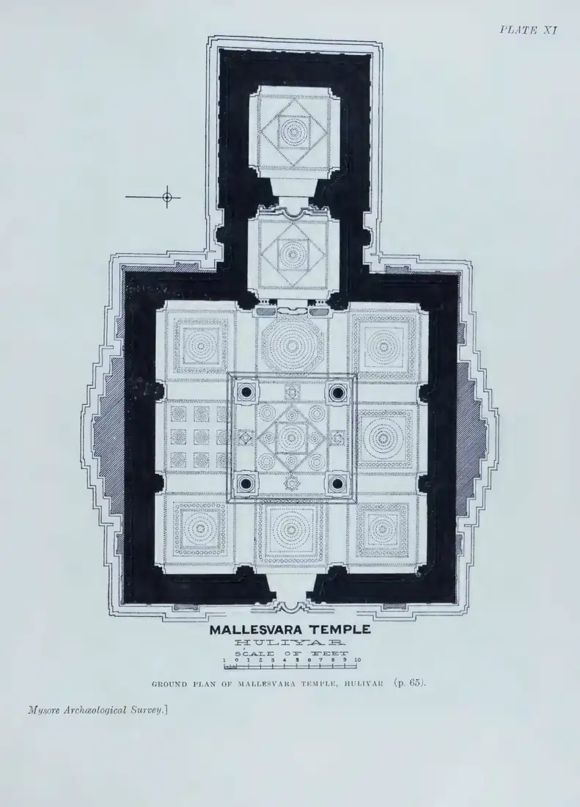
- GROUND PLAN OF MALLESVARA TEMPLE, HULIYAR (p. 65)
Cited in the text: p. 65 ↩
General description. the two stone courses of the navaranga outer walls the outer course appears to have at some time collapsed or become dilapidated and to have been replaced by the existing brick and mortar course. But the inner course of the walls is of stone.
The outer walls of all the compartments of the temple are raised on a basement laid on a floating foundation. The basement, as seen on
Outer walls. the northern side of the temple, consists of three cornices of which the bottom two have unworked latin cross and other mouldings, while the third from the bottom is square and provided with dentil drops at intervals. The outer walls of the garbhagrīha and šukanāsi (perhaps this was the case of the navaranga outer walls also) are relieved at intervals by plain right-angled pilasters with square mouldings in the middle and inverted square vase mouldings above. Between the pilasters here and there appear the medallion and the four-petalled rhomboidal flowers.
The eaves are straight and the pyramidal tower rises in a series of steps
Eaves and tower. ornamented with dentil mouldings.
The plan of the garbhagrīha is square, while that of the navaranga is cruciform.
The navaranga doorway is of the usual Chālukya pattern, though it is all plain excepting only for the pilasters on either side which are indented and are surmounted by
Navaraṅga ceilings
Sukanāsi and Garbhagrīha; Images in the Navaranga
9 indented wheel and other mouldings. Above the lintel is an eaves-shaped cornice which is also indented and divided into three compartments. The front face of this cornice is ornamented with beaded hangings, while above there are smaller and larger dentil mouldings. The pediment is plain. The four central pillars of the navaranga are of the bell-shaped and lathe-turned variety rising on cubical bases and being surmounted by the wheel moulding and a square abacus. The central beams are carved on their undersurface, with lotus medallions inset either in a square or Śrīchakra.
All the ceilings of the navaranga are richly ornamented with flowers worked in different pleasing designs and bold outlines of details with Navaranga ceilings. regard to the petals, the drops and the corners.
1. East ceiling. —The eastern ceiling consists of a large multipetalled lotus with three circular petals and a gracefully hanging low pendent corn in the middle whose outer face is covered by unopened lotus petals. This lotus flower is surrounded by a circular frieze of medallions consisting of smaller circular medallions and four-petalled flowers alternating, while this latter frieze is itself surrounded by another circular frieze of smaller lotus drops each of which is fringed by petals. The whole group is inset in a square the corners of which are carved with the representation of a four-petalled half lotus. This square block is further surrounded by larger lotus petals with smaller ones in between them.
2. South-east ceiling. —In the middle there is a large lotus flower with three concentric circular rows of open petals and the central low pendant covered over by carvings of unopened petals. This flower is inset in a square as No. 1, as its corners have representations of half rhomboidal flowers. The square is surrounded by six successive square friezes of ornamentation thus: (1) Circular medallions and roses alternating; (2) Roses placed in a row the interspaces being filled in by half roses; (3) Low pendent drops bordered by petals; (4) Medallions and rhomboidal flowers alternating; (5) Half petals with buds on stalk in between them; (6) Larger petals with buds and stalks alternating.
3. South ceiling. —This ceiling is divided into nine panels each of which has the representation of a circular medallion.
4. South-west ceiling. —The central pendant has the representation of a swan on the undersurface and lotus petals on the sides. The pendant is bordered by three circles of open petals. The group is inset in a square with ornamentation as in Nos. 1 and 2 in the corners. Around are six successive square friezes with ornamentation thus: (1) Circular medallions and lotus petals alternating; (2) Creeper scroll; (3) Lotus drops; (4) Four petalled lotuses; (5) Half petals with buds on stalk in between them; (6) Larger petals with buds on stalk in between them.
5. West ceiling. —Large-sized padma with pendant in the centre and three rows of large sized petals around with buds on stalk in between them. The padma is inset in an octagon which is surrounded by an octagonal frieze of lotus pendent drops. The whole group is further inset in a square frieze of square, circular and four-petalled flowers. The corners are ornamented with kirtimukhas. The group is bordered by lotus petals with buds on stalks.
6. North-west ceiling. —Similar to No. 2, but the carvings are more deep and effective.
7. North ceiling. —Circular flower with a pendant in the middle with two outer circles of floral ornamentation. The group is inset in a large square bordered by a frieze of lotus petals with stalks in between them.
8. North-east ceiling. —Circular padma with three concentric circular rows of petals and central drop. The flower is inset in a square which is bordered by a square frieze of small lotus drops and another square frieze with buds and stalks.
9. Central ceiling is raised on two sets of corner stones whose undersurfaces are carved with medallions inset in squares. The centre of the ceiling has a large sized padma with three concentric rows of petals and low pendent drop.
The pilasters against the inner walls of the navaraṅga are all indented and either cruciformed or bell-shaped in design. The śukanāsi doorway is supported by well worked dvārapāla images. The lintel of the doorway has a Gajalakshmī group. Around the doorway is a stone screen.
The śukanāsi ceiling is raised on two sets of corner stones with a low pendent padma in the centre. The garbhagrīha doorway is similar to that of the śukanāsi having indented pilasters on either side and an eaves-shaped cornice above. The lintel is carved with a Gajalakshmī group.
Sukanasi and garbhagrīha.
The garbhagrīha ceiling is also raised on two sets of corner stones. The linga inside the garbhagrīha is rounded at the top and rises to a height of about 2\frac{1}{2} feet including the pānipīṭha. The latter consists of three cornices of which the bottom and the third are square while the middle one is disc-like though square in form. All the cornices have small dentil mouldings at the corners.
Inside the navaraṅga are set up against the wall well carved images of the following deities: (1) Vishṇu in the form of Janārdana with rosary, chakra, sankha and gadā (Pl. XII, 1). The prabhāvali is absent but the style is unmistakable, though the image is slender and rather tall unlike the usual Hoysaḥa sculptures. Probably the characteristics are late Chālukya, the ornamentation however being exuberant and elegant; (2) Umāmahēśvara; (3) Sūryanārāyaṇa with prabhāvali. The god stands on a pedestal of seven horses with Aruṇa driving them. The posture is sauna-bhaṅga. The god is two-handed only holding padmas in the hands. The prabhāvali is decorated with a kirtimukha and scroll work. (4) Sarasvatī with rosary, paśa, ankuśa and pustaka. The goddess is seated in padmāsana and well decked with ornaments, gracefully disposed on her body (Pl. XII, 2). The face is full and beautiful. The posture is dignified. The kirīṭa is ornamented with delicate details. The prabhāvali is of the same stone and carved with creeper scroll on either side and kirtimukha. (5) Saptamātrika panel placed on a long pedestal. The images are small sized, about 10" in height, and set up in this order: Māhēśvari with bull below; Vaishṇavī with Garuḍa below; Vīṇādhāri Vīrabhadra with bull below; Brāhmī with hamsa below; Kaumārī with peacock below; Indrāṇī with elephant below; Vārāhī with buffalo below; Chāmuṇdā with mongoose below; and Gaṇēśa with mouse below. Vārāhī and Chāmuṇdā have hanging breasts while the others have full breasts. (6) Gāṇēśa, a well worked image with the following attributes: tusk, ankuśa, pāśa and apūpa to which he is helping himself. (7) In the centre of the navaraṅga is placed a bull of medium size which is beautifully carved and decorated with the usual ornamentation consisting of necklaces, chains and jingles.
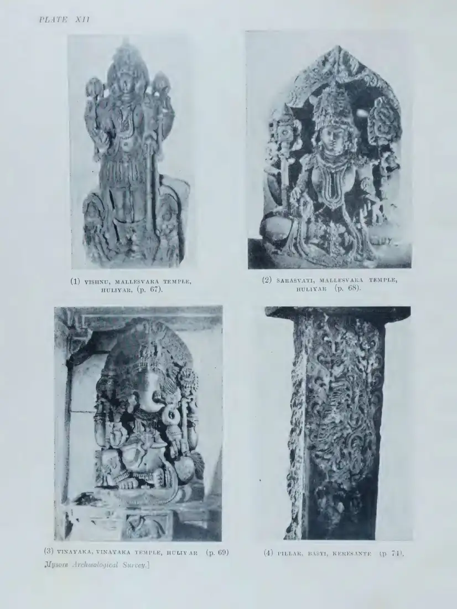
- (1) VISHNU, MALLESVARA TEMPLE HULIYAR (p. 67)
Ranganātha Temple
Late structure; Main image
This temple is about a 100 yards to the south-west of the Āśvara temple. It is an insignificant structure of the late Vijayanagar period. Late structure. with brick and mortar outer walls and Dravidian stone pillars in the navaraṅga. These pillars have three cubical mouldings with two sixteen-fluted mouldings in between them. The temple contains a garbhagrīha, a śukanāsi, and a navaraṅga.
The inner walls and pilasters of the garbhagrīha and śukanāsi as also the garbhagrīha doorway are of the Hoysalā period. The main image which is called Raṅganātha but is Anantapadmanābha is also of Hoysalā workmanship and its existence to the southwest of the Āśvara temple shows that it belonged to the same date. Hence C. 1170 A.D. may be assigned to this temple also. The image reclines gracefully on the seven-hooded Ananta with his right hand below the head, the left being stretched on the body. Behind the god are the images of his consorts, while on the prābhavali are carved the avatāras of Vishṇu.
Vināyaka Temple
General description
This temple is immediately to the south of the Āśvara temple. It consists of a garbhagrīha, an open śukanāsi and a navaraṅga. Only the garbhagrīha and śukanāsi may be said to belong to the original structure. The navaraṅga with its characterless pillars is recent, though the central part of it is of Hoysalā times. Very probably there was originally an open porch here.
The outer course of the walls of the garbhagriha is built of size stones. But the inner walls contain original slabs existing intact. The garbhagriha doorway has a perforated screen on either side. The garbhagriha ceiling is raised on two sets of corner stones with a padma in the centre.
Inside the garbhagriha the image of Vināyaka including its prabhāvali and its pedestal is about 10 feet high and is typically Hoysala in character (Pl.XII,3). The pedestal has the figure of a mouse.
Main image
The god is four-handed holding the broken tusk, ankuśa, pāsa and apūpa, to the last of which he is helping himself. The kirīṭa and other ornaments are worked with a wealth of detail. The prabhāvali has the kīrtimukha and scroll ornamentatión.
Vīrabhadra Temple
This temple stands a little further to the east of the Vighnēsvara temple and faces north. It is an insignificant modern structure enshrining a rude Nāyak period Vīrabhadra image whose face is touched up in the ugliest way possible. The temple is archæologically unimportant.
Old Jain Basti
It is very probable that there was a Jain basti in this village during the Chālukya period as can be judged by the top panel of a worn out inscription stone in front of the Durgā temple with Nēminātha sitting under mukkode and by the simhapīṭha kept in the śukanāsi of the temple. The inscription is published as No. 98, Chikkanāyakanahalī Taluk, Tumkur District (E. C. Vol. XVI).
Part III: Study of Ancient Monuments and Sites › Tumkur DistrictKeresante
The village of Keresante is situated at a distance of about five miles east-south-east of Dēvanūr, a railway station next to Bānāvar. The place was an ancient agrahāra town (Pl. XIV, 1) belonging originally to the days of Vishnuvardhana Hoysala who is known from the inscriptions to have constructed the large tank of the village and in whose time most of the ruined temples existing now were perhaps built (Pl. XV, 1). The temples are sparsely distributed among the ruins of the old town. Judging from the considerable area of the site and the disposal of the buildings, the old agrahāra must have been a very important centre not only for religion but also for other purposes like commerce, etc.
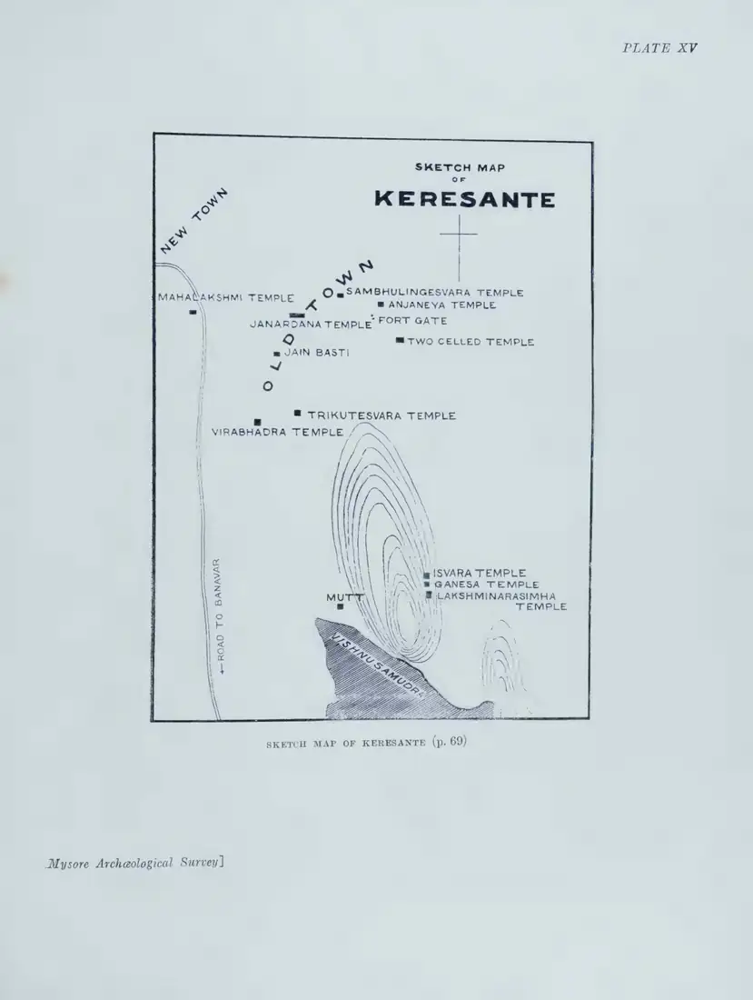
- SKETCH MAP OF KERESANTE (p. 69)
Cited in the text: p. 69 ↩
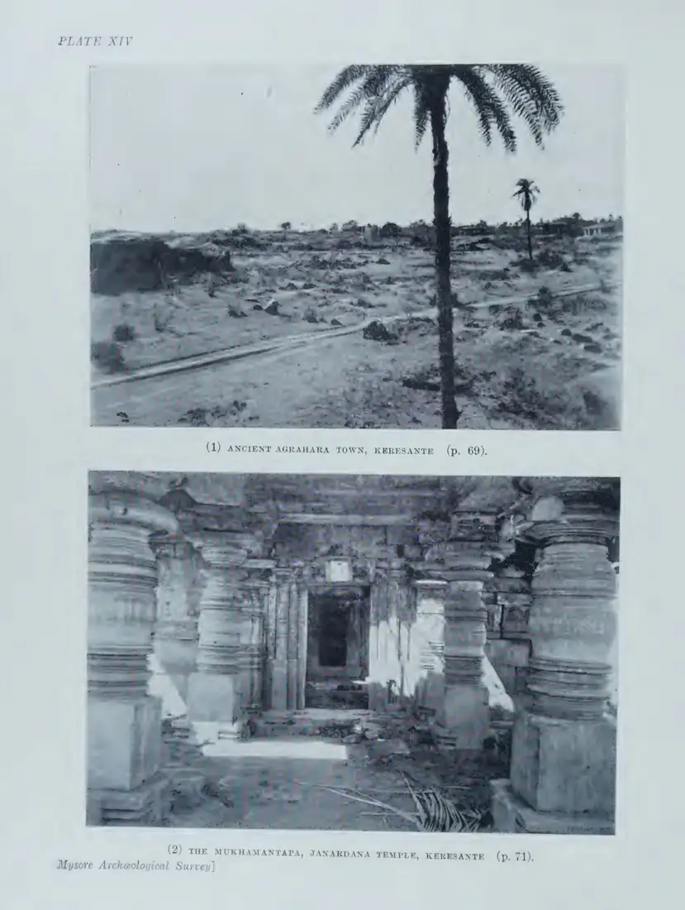
- (1) ANCIENT AGRAHARA TOWN, KERESANTE (p. 69)
Vīrabhadra Temple
The Vīrabhadra temple is situated at the north-west end of a hillock in the vicinity of the tank. It is in utter ruins with the outer
Late Chālukya structure
General description
course of walls having completely collapsed and the roof slabs being quite out of plumb. The flooring too has become dislodged. The structure is a low roofed one, consisting of characteristics of the late Chālukya monuments particularly with regard to the pillars, proto-types of which are met with in the late Chālukya temples in the Shikārpur taluk of the Shimoga District.
The temple, as it stands, consists of a garbhagṛiha, a closed śukanāsi and a navaraṅga. The four central pillars of the navaraṅga are short
General description. and have two cubical mouldings in between which appears a sixteen-fluted moulding secured by an eight-sided band in the middle. The central ceiling is raised on two sets of corner stones, the under-surfaces of the corner stones being ornamented by reliefo medallions. In the centre of the ceiling is a large lotus with a low drop in the middle.
The śukanāsi doorway is supported by Śaiva dvārapālas and perforated screens on the jambs, the lintei has a Gajalakshmī group in the centre with lions standing on either side of a turret on both the sides.
The image of Virabhadra in the garbhagṛiha is about 5 feet high including the prabhāvali. It is typically Hoysala in character wearing the usual ornaments and holding broken (sword), arrow, bow and buckler. The image has become mutilated.
A little distance to the north of the temple stands a Nāyak period monolithic pillar tapering and eight-sided.
Trikūṭēšvara Temple
General description; Sukanāsi and Navaranga; Porch
About 50 yards to the east of the Virabhadra temple is situated the Trikūtēśvara temple facing south. It is a low-roofed structure consisting
General description. of 3 cells, of which the western one has a closed śukanāsi while the others have open śukanāsis.
The western śukanāsi doorway is supported by Śaiva dvārapālas and has a Gajalakshmī lintel. There is a common navaraṅga having
Sukanasi and navaranga. in its central aikana four pillars as in the Virabhadra temple. The central ceiling of the navaraṅga is raised on two sets of corner stones. The navaraṅga doorway to the south is supported by Śaiva dvārapālas above whom are found indented bell-shaped pilasters. The lintel bears a low reliefo eaves-shaped cornice bearing five turrets of the curvilinear type.
In front of the navaraṅga there is a porch with two carved elephants in front.
Porch. The porch pillars are similar to the navaraṅga ones with cubical sixteen-fluted and eight-sided mouldings on the shafts and the wheel moulding and abacus above. The ceiling is raised on two sets of corner stones, the undersurfaces of the first set being carved with the representation of kīrtimukhas and those of the second set with that of high reliefo medallions. In the centre of the ceiling there is a small lotus flower, with a low pendant in the middle. The flower is inset in a square decorated with a frieze of small lotus drops.
The outer walls of the temple are plain and constructed of soap stone slabs placed on edges. The walls are raised on a basement consisting-
Outer view of Temple
A little to the front of the porch is buried in the earth a Sala group.
Janārdana Temple
History; General description; Outer walls; Eaves and tower; Main image; Navaranga and Mukhamanṭapa; Front maṇṭapa
The Jānārdana temple stands about 200 yards to the north of the Trikūtēśvara temple. It is a heterogeneous structure consisting of compartments constructed in different periods. The garbhagrīha and the closed śukanāsi form the original structure of about the 12th century. The navaranga forms the second group, the mukhamanṭapa the third group (Pl. XIV, 2) and the front porch the fourth group.
The plan of the garbhagrīha is cruciform. The basement consists of four cornices of which the middle two have the dentil, oblong and latin cross mouldings which are left uncarved. The outer walls are relieved by right-angled pilasters, but cruciform pilasters appear on the outer walls of the śukanāsi.
In the middle of the south outer wall is a turteted niche inside which is carved a relievo image of a two-handed Yōgānarasimha holding chakra and śankha. The turteted niche in the middle of the west wall has unworked mouldings, while that of the north wall has the figure of Kēśava. The eaves of the garbhagrīha have a slight curve and their upper corners are ornamented with dentil mouldings. Above the eaves there is a cornice which is also cruciform in plan and ornamented with dentil projections above. Probably there was a stepped pyramid above the garbhagrīha but ail the courses are now missing. At present there is a highly dilapidated thick course of later bricks in place of the original pyramidal tower.
The image inside has been pulled out by treasure seekers and thrown against the inside south wall of the śukanāsi and covered up by its own pedestal so that it was impossible to obtain a photograph of it. It appears to be a really good figure holding in its four hands padma, chakra, śankha, and gadā. The prabhāvali has a creeper scroll carving. But the Daśāvatāras are absent.
Main image.
The navaraṅga is perhaps a structure of the 14th century. Its outer walls reveal that originally there was a small mantapa in front of the śukanāsi which was pulled down during the 14th century, and the large present navaraṅga was constructed in its place. The slabs of the outer walls of the navaraṅga are placed on edges and there is a band running in the middle of the wall. The eaves of the navaraṅga are straight and do not correspond to the eaves of the garbhagrīha. The pilasters inside the navaraṅga are cruciform, while the central four pillars are thick and bell-shaped and lathe-turned. The ceilings are all dome-like and a little deep, being raised on two sets of corner stones and carved with small lotus pendants in the centre. The mukhamantapa which consists of granite pillars and ceiling slabs is known from the inscription on one of the walls to have been constructed in 1521 A.D. at the instance of one Rāmaṇṇa, son of Chandrappa of the place with the permission of the mahājanas, śeṭtis, etc. The outer walls of the mukhamantapa are gone.
The front mantapa must have been constructed at some later period, though its materials are older than those of the garbhagrīha itself.
Front mantapa. From an inscription on the south-west pillar which records a grant to the Ādinātha and Pārśvanātha bastis of Keresante, it can be presumed that the whole of this mantapa formed with its pillars, pilasters and ceilings, the navaraṅga of an important Jain basti at the place. The pilasters are indented and cruciform, while the central four pillars are of the bell-shaped, lathe-turned variety. The central ceiling is carved with a good figure in a circular panel.
Šambhulingēśvara Temple
General description; Porch; Porch ceiling; Navaranga doorway; Hall and ceilings of Navaranga; Sukanasis and Cells
(Pl. XIII)
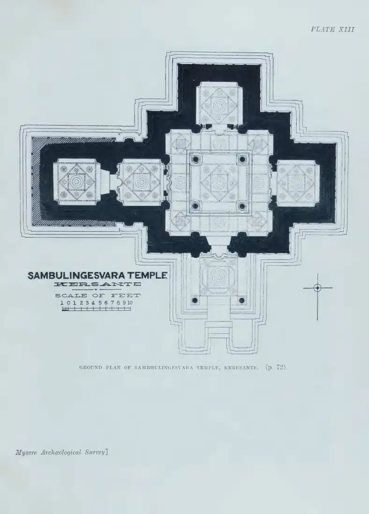
- GROUND PLAN OF SAMBHULINGESVARA TEMPLE, KERESANTE (p. 72)
Cited in the text: p. 72 ↩
This temple is situated at a distance of about 50 feet to the east north-east of the Jain temple. It is a three-celled structure like the Trikūtēśvara temple mentioned above without, however, any tower above the cells. It faces south like the Trikūtēśvara temple. But it is built on a high basement consisting of four plain cornices with plain outer walls relieved by right-angled pilasters and circular medallions here and there. The slabs are placed lengthwise on edges. The eaves are a little sloping with upward dentil mouldings at the corners.
The temple is approached by a flight of steps and appears to have been flanked originally by an elephant on either side as can be seen from the projecting platforms on either side of the steps. The porch has stone benches on either side edged by plain railings. The pillars of the porch are of the bell-shaped lathe-turned variety.
The ceiling of the porch is deep and consists of the following concentric courses: square, octagon, another square and circular. The beams
Porch ceiling.
are carved with graceful beaded hangings and scroll work above which appears a frieze whose front face is carved with double chaityas, that is to say, on the top of one chaitya another chaitya is inverted so that the tops touch each other. The first square course of the ceiling has in the centre the representation of a chaitya. Both on the front face and undersurface and on either side of the chaitya panel, there are carved successively a frieze of hanging buds, another of beaded hangings and another of creeper scroll at the top. The octagonal course is even more gracefully carved on the front face with pendent drops and hangings. The corner stones have in the centre well worked kīrtimukha panels and on their undersurface pendent medallions. The side stones have leafy ornamentation. The undersurface of the third square course has been carved with kīrtimukhas having flowing fangs in the middle and pendent drops on either side. The centre of the front face of this course has unworked panels with dentil mouldings on either side and a row of pendent buds with another of beaded hangings superimposing them. The central slab of the ceiling has a pendent bud in the middle and lotus petals and horse-shoe-shaped chaityas in the three concentric circles around.
The navaranga doorway is typically Hoysala in character. The pilasters on either side of the doorway are of the indented bell-shaped
Navaranga doorway.
variety. Šaiva dvārapālas support the doorway on either side. The pediment has padma pendants on either side.
Above the lintel is an eaves-shaped cornice carved with successive rows of buds, beaded hangings and upward dentils.
In the centre of the navaranga the four pillars are of the bell-shaped variety.
Hall and ceilings of navaranga.
The front face of the architraves of the central square is carved with beaded hangings and scroll ornamentation. The central ceiling is raised on two sets of corner stones with a small lotus pendant in the middle. The ceilings are all a little deep having floral representations with small drops in the middle. The southern ceiling of the navaranga is boldly carved with chaitya friezes.
All the śukanāsi doorways show traces of good work. The doorway of the western śukanāsi is supported by Šaiva dvārapālas. The
Sukanasis and cells.
lintel is supported by a row of turrets. The pediment is not carved. The ceiling is raised on two sets of corner stones with a padma pendant in the middle. The garbhagriha is vacant; but it must have enshrined a linga originally as gathered from the inscription at the temple. The doorway of the northern cell is supported by Vaishnava dvārapālas. The jambs have perforated screens and highly indented pilasters. The lintel has a deeply carved group of Gōpāla Krīshṇa standing amidst herds of cattle, etc. The god was
10 originally four-handed, the front two playing on the flute and the back ones holding discus and conch. It is very likely that the main image in this cell was Vēnugōpāla. The image is missing now ; only its Garuđa pedestal remains. The doorway of the eastern cell is rather plain. The lintel stone bears a kalaśa. This doorway is wider than the other two doorways.
Part III: Study of Ancient Monuments and Sites › Tumkur DistrictRuined Structures
Jain Basti; Temples of Gaṇēśa; Anjanēya and Lakshmi-Narasimha
To the south of the Janārdana temple is a ruined Jain Basti of small dimensions (Pl. XVI). Some of the pillars show very good Jain Basti . workmanship (Pl. XII, 4).
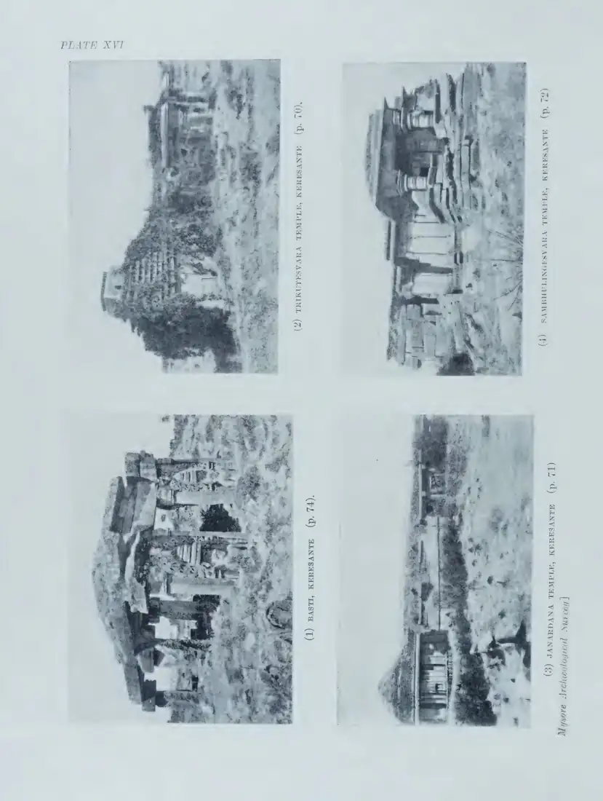
- (2) TRIKUTESVARA TEMPLE, KERESANTE (p. 70)
Cited in the text: p. 74 ↩
On the east of the old town site there are the ruins of the old gateway having a small Gaṇēśa shrine. A few yards to the north-east of Temples of Ganesa, Anjaneya and Lakshmi-Narasimha . this gateway there is a mud and rubble structure containing a medium-sized Āñjanēya. A few yards to the south-east of the Āñjanēya temple are the ruins of another stone-built temple which faced east and originally consisted of two cells, the main western cell enshrining a linga and the northern one a form of Vishṇu. The common navaraṅga has cruciform pilasters against the walls and the bell-shaped lathe-turned pillars in the centre. The temple is beyond repairs. The date of the temple might be C. 1300 A.D. In front of the temple there is an inscription.
About two furlongs to the south of the old town and at the foot of the eastern face of the hill stands a group of three temples dedicated to Lakshmi-Narasimha facing north, Gaṇapati facing east and (?) Ēśvara facing east.
The Lakshmi-Narasimha temple consists of a garbhagrīha, a closed śukanāsi, a navaraṅga and a porch. The outer walls are raised on a basement consisting of two plain cornices and are relieved by thin right-angled pilasters. The plan of the garbhagrīha and navaraṅga is square. The leaves are straight. The tower above the garbhagrīha is a stepped pyramid overgrown with rank vegetation. The porch pillars have cylindrical shafts. The pilasters are indented and bell-shaped. The navaraṅga pillars are of the bell-shaped type. The jambs of the śukanāsi doorway are carved with kalaśa designs. The navaraṅga central ceiling and the porch ceiling are raised each on two sets of corner stones. The main image of Lakshmi-Narasimha has become headless and mutilated and has been kept in the porch. In front of the temple there is a Garuđagamba. To its front is lying on the ground the pādapītha of the god with two feet in the centre encircled by a lotus and having padma, chakra, śankha and gadā in the corners.
The Gaṇēśa shrine is mono-celled. The image is massive and about 5 feet high and shows good workmanship, though mutilated.
Immediately to the north of the garbhagriha of the temple there is an oblong shrine with its image missing. It is not possible to say to which deity this temple was constructed. The basement consists of two cornices. There are a series of right-angled pilasters on the outer walls. The doorway is well carved with vertical bands of the creeper, the medallion, the pilaster and the scroll ornamentation. The lintel is carved with figures of turrets which are curvilinear in outline and have rhomboidal four-petalled flowers in between them.
Part IV: Numismatics
Treasure Trove Coins
1. In November 1944 the Deputy Commissioner, Chitaldrug, forwarded a copy of a letter received by him from the Superintendent of Police, Chitaldrug, stating that a large number of gold coins were discovered in a pot by one Basappa of Attigere and that 87 of them were collected by the Police Officers. This collection was obtained by this Department for study at the headquarters. All the coins belong to a single type and are small thin gold Vīrarāyi fanams identified elsewhere as the issues of Ballāla II, the Hoysala king (cp. M.A.R. 1929, pp. 25-27 and Pl. IX, 9, 10 and 11 ; cp. also Elliot's Coins of Southern India, Pl. IV, Nos. 189, 190, 191, 192 and 193). Necessary action will be taken under the Mysore Treasure Trove Regulation to acquire the coins for the departmental museum.
PRIVATE COLLECTION.
Mr. Tatachar of Chintāmaṇi sent 39 coins for study and return. Of these, five are gold coins, nine silver and the rest copper. Mr. H. M. Munimure Gauḍa, Patel of Hosadurga, Kankanhalli taluk, sent one gold fanam and one coin of copper for study. All the coins belong to well-known types published in standard books on Numismatics.
Private Coins
Gold Coins
2. Vīrarāyi fanam—similar to 1 mentioned above.
3. Half Varāha issued by Harīhara, Vijayanagar king.
Obverse : Lakshmī-Nārāyaṇa seated.
Reverse : Three-line Nāgari legend reading :
Śrī Pra tā pa Ha ri ha ra
4. Haṇa issued by•(?) Kaṇthīrava Narasarāja.
Obverse : Indistinct.
Reverse : Indistinct.
5. Similar to No. 4.
6. Small coin ; metal, highly debased.
Obverse : Standing deity (? Kāli or Vīrabhadra).
Reverse : Tamil legend reading ' Vi . . . ' Probably issued in the 17th century.
7. Fanam issued by Hyder of Mysore.
Obverse : In ring of dots and bordering circle, the initial 'Hai' in Persian.
Reverse : Date legend in Persian.
Silver Coins
Potin Coins; Lead Coins
8. Coin of Augustus (cp. No. 1, page 35 Roman, Indo-Portuguese and Ceylon Coins by Edgar Thurston).
Obverse : Laureate head of Augustus to right with Greek legend around :
. . . AGUSTUS DIVI F. PATER PATRIAE.
Reverse : Caius and Lucius Caesar standing, each holding a spear. Bucklers resting on ground. Greek legend AVGVSTI below and PRINCIVVENT to left.
9. Coin of Tiberius (cp. No. 8, ibid ).
Obverse : Laureate head of Tiberius to right. Greek legend around :
TI, CAESAR DIVI AVG F. AUGVSTS.
Reverse : Vesta seated to right with spear in the right hand and branch in the left. Greek legend on either side : PONTIF. MAXIM.
10. Coin issued by the East India Company during the time of Charles II (1660-85 A. D.)
Obverse : Two linked C'S.
Reverse : Standing deity (Vishnu).
Cp. Pl. XXX, 19, Catalogue of the Coins in the Indian Museum, Vol. I; and No. 55, page 47, Hints for Coin Collectors, Coins of Southern India, R.H.C. Tuffnell.
11. French coin struck in Pondicherry. Early 18th century (cp. No. 45, page 36, ibid ). Hints for Coin Collectors by R.H.C. Tuffnell.
Obverse : Several Fleur-de-lis.
Reverse : Design with dots and lines.
12. Quarter rupee of the Mughal emperor Alamgir II, struck by the East India Company (cp. Catalogue of Coins in the Punjab Museum, Lahore, Vol. II, No. 2742).
Obverse : In dotted circle date 1172 and Persian legend.
Reverse : Persian legend. Edge obliquely milled.
13. Local silver coin of Tellichery mint, struck by the Company in the early 19th century (cp. Hints for Coin Collectors by R.H.C. Tuffnell, p. 49, No. 58.)
Obverse : T 99. Name of mint town in Persian.
Reverse : Persian legend.
14. A very common type of coin issued in Aurangabad in the name of Bahadur Shah, Emperor of Delhi (1837-1857) by Nizam Nazir-ad-daulat. Reported to have been coined in Satara. Persian legend on obverse and reverse (cp. No. 23, Pl. II, p. 11, Coin Collecting in Deccan by R. P. Jackson).
15. Coin of Krishnarāja Wadiyar III (cp. Pl. IV, 10, Mysore Coins by Edgar Thurston).
Obverse : Bālakrīshṇa.
Reverse : Legend reading Krishnarāja Wadiyar in Persian.
16. Uncertain silver coin with designs formed by dots and lines on both the sides.
POTIN COINS.
17. Coin of Śrī Pulumāvi (cp. E. J. Rapson's Indian coins, Pl. V, No. 91).
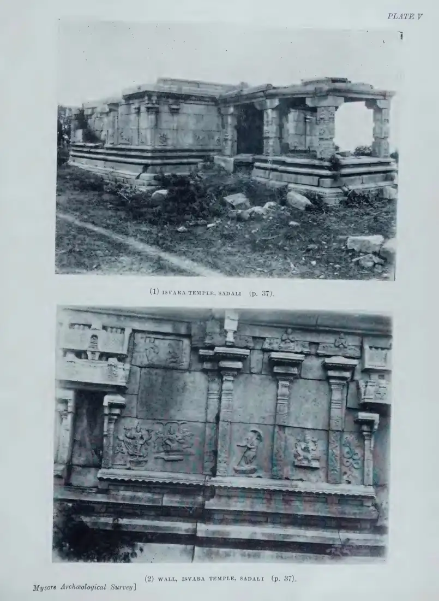
- (1) ISVARA TEMPLE, SADALI (p. 37)
Cited in the text: p. 78 ↩
Obverse : Elephant, standing to right with the trunk upraised. Legend above reading Pu lu mā vi sa.
Reverse : Ujjain symbol, with pellet in each orb.
18. Coin of Hāku śrī (?) – Appears to be a new type.
Obverse : Elephant, standing to right with trunk upraised. Legend above reading: Sa ta Ha ku.
Reverse : Ujjain symbol, with pellet in each orb.
LEAD COINS.
19. Name of Sātavāhana king not known—(Cp. No. 197, Pl. VII, E. J. Rapson's Indian Coins).
Obverse : Elephant standing to right with the trunk hanging down. No legend.
Reverse : Ujjain symbol consisting of a number of orbs, with pellets in each.
20. Uncertain Sātavāhana coin.
Obverse : Elephant standing to left, with the trunk hanging down. No legend.
Reverse : Ujjain Symbol. No cross bar or pellets.
21. Similar to above, but small. The reverse has a number of plain circles.
22. Similar to above.
23. Obverse : Elephant (?) with upraised tail and standing to left. The trunk is not distinct.
Reverse : Ujjain symbol consisting of a number of circles.
24. Uncertain.
Obverse : Lion (?) facing front. There appears to be a single letter 'ga' or 'ta' in the left field.
Reverse : Ujjain symbol.
25. Coin of Śrī Sātakarni (?)
Obverse : Horse to left. Nāga symbol (?) above and Sun in the right field.
Reverse : Indistinct. (?) tree in railing. Legend reading (?) Si ri Sa da ka
Copper Coins
26. Chera coin (cp. No. 13, Pl. XXIV, M.A.R. 1940).
Obverse : Strung bow to left and lamp stand to right, with a tusker elephant in between. Above the elephant there appears to be another lamp.
Reverse : In linear circle, between two lamps is the section view of a basin placed on a stand. In it are two swords crossed points downwards.
27. Similar to above, but the elephant is absent on the obverse. In its place, there is a vertical row of dots. The reverse is effaced.
28. Coin of Rāja Rāja, Chōla king.
Obverse : Standing figure and dots.
Reverse : Seated figure and name Rāja Rāja in Nāgari (cp. No. 166, Pl. IV, E.C.S.I.)
29. Similar to above.
30. Coin of Parākrama Bāhu of Ceylon 1153-86 A.D. (cp. No. 1, Pl. XXXI, 1, Catalogue of the Coins in the Indian Museum, V. A. Smith)
Obverse : Standing figure, right hand holding flower or symbol and raised, left hand a flower.
Reverse : Seated figure with left arm raised and Nāgari legend reading—
Śrī
Pa rā kra ma bāhu
31. Coin of Vijaya Bāhu of Ceylon—1186-87 A.D. (cp. No. 3, ibid ).
Obverse : Similar to No. 28 above.
Reverse : Similar to No. 28 above with the legend reading—
Śrī
Vi ja ya Bā hu
32. Coin of Queen Lilāvati of Ceylon—1197-1200 A.D. (cp. No. 4, ibid )
Obverse : Similar to No. 28.
Reverse : Similar to No. 28. Nāgari legend reading—
Śrī | Lilā
Rāja | vatī 33. Coin of Sāhasa Malla of Ceylon—1200-2 A.D. (cp. No. 6, ibid ).
Obverse : Similar to 28.
Reverse : Similar to 28. Legend reading—
Śrī mat Sā ha sa ma lla
34. Coin of Bhuvanaika Bāhu of Ceylon—1296 A.D. (cp. No. 8, ibid ).
Obverse : Similar to 28.
Reverse : Similar to 28. Legend reading—
Śrī
Bhu va nai ka bā hu
35. Coin of Muhammad II, Sultan of Delhi (cp. Catalogue of the Coins in the Indian Museum, Calcutta, Vol. II, Plate IV, No. 233).
36. Similar to above.
37. Coin of Harihara II, Vijayanagar king (cp. M.A.R. 1932, Pl. XXI, 13.)
Obverse : Bull to right with crescent above.
Reverse : Nāgari legend reading Pratāpa Harihara with a solar mark in the middle.
38. Coin of Dēvarāya, Vijayanagar king (cp. ibid. , Pl. XXI.)
Obverse : Bull to left.
Reverse : Nāgari legend reading—
[tā pa De] va
Rā ya
39. Coin of Pudukota State (About 1729 A.D.)
Obverse : Figure of seated Lakshmī on lotus.
Reverse : Kannaḍa legend reading.
Vi ja ya
40. Paisa of Hyder (cp. Henderson's Coins of Hyder Ali and Tipu Sultan, Pl. I, 17).
Obverse : Initial of Hyder and dots.
Reverse : In circle of dots Arabic numeral repeated.
The other coins in the collection are being studied. They appear to represent types hitherto unknown.
Part V: Historical Records
Kūdļi Sringēri Matt
Kūđli is a place of pilgrimage situated at a distance of about nine miles to the north-east of Shimoga and at the confluence of the Tuṅgā and the Bhadrā. The Smārta matt at Kūđli is a descendant of the main matt at Śringēri and has among its disciples the Smārta Brahmans of northern Karnatak. Buchanan writes of this Matt as follows :—
“1801, April 4. Kudli —Kudli or Joining is an agraharam or village given in Enam to the Brahmans and is situated between the Tunga and Bhadra rivers at their junction, whence the place derives its name. It was plundered and burnt, as I have already mentioned by a party of the Marattah army who put all the Śūdra inhabitants to the sword, although the place is quite defenceless; nor did the people attempt to make any resistance. After this the Brahmans went to complain to the Bhow, who gave each of them one rupee as in duty (dharma) bound.
“I found that the guru or swamy was at Hara-punya-hally employed in begging as it is called. He had with him all his principal disciples; so that the Brahmans who remained at Kudli were not men of great intelligence, but they gave me a copy in the Marattah character, of the Śankara Achāriya cheritra or an account of the life and actions of that very celebrated personage. It is esteemed a book of great authority and has been delivered to the Bengal Government.
“These ruffians did not even spare Kudali swamy who is the guru of all the Marattah Brahmans of the Smārta sect and who is by them considered as an actual incarnation of the deity. His matam or college was plundered and burnt; but this cost the Peshaw dear. The enraged swamy held out threats of instant excommunication, and was only pacified by a present of 4,00,000 rupees. Tipoo had the satisfaction of taking one half of this sum which was the assessment levied from him on account of the Nuzzur that Lord Cornwallis exacted.
“The swamy is said to have been of great use in the famine and to have employed the utmost of his influence in collecting money to support the starving wretches. He daily fed 3000 Brahmans and other religious mendicants; for, according to the Hindu doctrine, it is the charity which is bestowed on religious men that chiefly procures favour in the eyes of the gods. In his distribution the swamy is said to have expended six lacs of rupees or 60441 l. 13s. 4d. most of which was collected in the Marattah states.” (Buchanan’s Mysore, Canara and Malabar; Vol. II, pp. 411–412.)
The Kūđli Matt appears to have been in a very flourishing condition during the time of the Peshvas in the 18th and 19th centuries. At the same time there also
11 appears to have been some disparity between this matt and the one at Śringēri as can be seen from the several letters and sannads in the possession of these matts. The Kūđli matt is further said to have been adjudged by the court A-dalat as a responsible institution in the dispensation of the religious morale of all the disciples, while the matt at Śringēri concerned itself mainly with worship in the Śārada temple at Śringēri. But the various lithic and other records show that the Matt at Śringēri which appears to be the earlier of the two matts was established during the Vijaya-nagar period and has continued in an unbroken line of succession of gurus up to now; so that the claim of the Kūđli matt that it is itself the main one while the matt at Śringēri is its branch is open to serious question, though it may have in its possession certain records and copper plates in support of their claim.
Letters and Sannads from the Pāllegārs of Sante Bennūr
No heading in the body: this section starts at its printed page (82-85).
At Śringēri there are records on the other hand to show that the branch matt at Kūđli was established by one Ammāji svāmi and that after the demise of this svāmi the villages and lands belonging to it had for a time been transferred to the possession of the Śringēri matt. From Inscription No. 81, Shimoga, it is learnt that Ammāji svāmi, the founder of the Kūđli matt, was a contemporary of Hiri Venkaṭappa Nāyaka of Keļadi who ruled between 1582 and 1629 A.D. The real name of Ammāji svāmi was Narasimha Bhārati whose dates are mentioned as between Śaka 1468 and 1508 in the annals of the matt.
At the request of the Kūđli Śringēri Matt some of the important records in its possession are noticed here. For other records of the Matt noticed elsewhere, please see Ep. Car., Vol. VII.
Letters and Sannads from the Palleyagars of Sante Bennur.
1. This letter is written on hand-made paper. At the right hand top corner there is the ink impression of a seal with the Nāgari legend 'Sarajā Hanumappa Nāyakaru' engraved on an eight-petalled lotus. At the end there is the ink impression of a smaller circular seal with the Nāgari legend 'Śrī Rāma' engraved on it.
The letter is addressed by the Chief to the pontif Vidyāraṇya Svāmi of Śringēri and records the grant of five villages belonging to Harakeri hobli of Gājanūr in Āragada Vēnṭaya. It is stated that these villages formerly belonged to one Tirumala Dikshita of Shimoga and that he had granted them to the Svāmi in consequence of his having engaged in discussion with the svāmi.
The genealogy of the Sante Bennūr chief is given as follows: "Hanumappa Nāyaka, son of Immađi Sitā-Rāmappa Nāyaka, belonging to Puvalānvaya of the Vālmīki götra, a devotee of god Hanumān, worshipper of the lotus feet of Rāmachandra of Sante Bennūr." It is not known how the seal of Sarajā Hanumappa has come to be stamped in this letter, though it might be said that the donor of the grant is Hanumappa Nāyaka I. Further according to other sources the genealogy of the Sante Bennūr chiefs is as follows:—
Kengappa Nāyaka.
Hire Hanumappa Nāyaka.
Immađi Hanumappa Nāyaka.
Nichcha-madavaṇiga Hanumappa Nāyaka.
Sarajā Hanumappa Nāyaka
Sītārāmappa Nāyaka
In Inscription No. 21, Tarikere taluk, the following genealogy is found :—
Immađi Hanumappa Nāyaka.
Nichcha-madavaṇiga Hanumappa Nāyaka.
Sarajā Hanumappa Nāyaka (1655 A.D.)
In Inscription Tarikere No. 22 the following genealogy is found :—
Immađi Hanumappa Nāyaka.
Nichcha-madavaṇiga Hanumappa Nāyaka.
Sarajā Hanumappa Nāyaka (1681 A.D.)
The pontif of Kuđli has been mentioned thus. “Śrī Vidyāraṇya svāmi, disciple of Śringēri Narasimha bhārati Svāmi” with the usual attributes Paramahāmsa parivrājakāchārya , etc.
The date of the letter is Śaka 1480 Kālayukti śam. Kārtika śu. 15 parva puṇyakāla, corresponding to 27th October 1558 A.D.
2. The second record is written on hand-made paper which is greyish in colour and bears the impression of gilded lotus buds on the surface. As on the first record there is a seal, reading Sarajā Hanumappa Nāyaka, in the form of an eight-petalled lotus flower at the right hand top corner.
This sannad restores to perpetuity the grant previously made by the ancestors of the chief, of the village Seṭṭihalli belonging to Yeđatore in the Hołehonnūr-sīme of Basavāpaṭṇa-Nāđ in Āragada Venṭeya to meet the expenditure of feeding the Brahmans during the Chāturmāsya Sankalpa.
The titles of both the Svāmi and the chief appearing in this record are the same as those appearing in the previous record.
The date of the record is Šaka 1569, Sarvadhāri Sam. Āshāđha śu. 15. Šaka 1570 is Sarvadhāri and the date as given would correspond to Saturday 24th June 1648 A.D.
3. The third sannad is on ordinary hand-made paper and does not bear any seal whether at the beginning or at the end. The grant mentioned in the record is in favour of Šrī Vidyāraṇya Bhārati, the disciple of Narasimha Bhārati. The donor is Sarajā Hanumappa Nāyaka and the village granted was Gandūr of Šivane-sthaļa belonging to Ajjampur in the hobli of Basavāpatṇa-sīme. The grant was made on the auspicious occasion of Utthāna-dvādaśi for the merit of the parents of the donor at the sacred place of Kūđli at the confluence of the Tungā and Bhadrā rivers. The record contains the word 'Šrī Rāma' at the end.
There appears to be a dispute between the Šringēri and Kūđli mathas regarding the village of Gandūr which is mentioned in the record as having been granted. In a record at the matha of Šringēri it is mentioned that Hanumappa Nāyaka granted the village to the Šringēri matha in 1720 A.D. (cp. M.A.R. 1916, pp. 69-70) and that formerly this village had been given to Šrī Vidyāraṇya svāmi. This latter record confirms the grant mentioned in the record of Kūđli.
The date of the grant is Šaka 1579 Pārthiva sam. Kārtika śu. 12. But Šaka 1567 is Pārthiva which corresponds to 1645 A.D. If the Šaka year 1579 is correct the date would be 1657 A.D. The record does not mention any other details of date like the week day, the constellation, etc., to help us in determining the exact date.
4. The fourth letter at Kūđli which is written on hand-made paper refers to the same village Dandūr. At its left hand top corner it contains the words 'Sachhidānanda Bhārati' and at the right hand top corner the words 'Vidyāraṇya Bhārati' and 'Šankara Bhārati' the latter written below the former. At the end occurs the ink impression of a seal with the word 'Šrī Rāmā.'
The letter is written by Sitārāmappa Nāyaka of Sante Bennūr to Mari-vīranna and states that the village Dandūru of the Yere-nāđu-sīme, which had formerly been given to the Kūđli Šringēri-matt and which, after the demise of the svāmi, had come to the possession of the Šringēri-matt, thus causing a contention between the two matts, is re-granted to the Kūđli Šringēri-matt. The addressee is asked to get the record written in the kađita of the Sēnabōva and afterwards to return it to the matt.
Sitārāmappa Nāyaka, the donor, is the last of the Pāllēgārs of Sante Bennūr. The date of the record is, Dundubhi sam. Āśvīja śu. 14. Šaka 1664 is Dundubhi and the details correspond to Saturday, 3rd October 1742 A.D.
5. The fifth sannad is written on greyish paper bearing gilded impressions of a tree here and there. At the right hand top corner there is a seal in the shape of an eight-petalled lotus flower with the legend 'Šrī Sarajā Hanumappa Nāyakaru' in Dēvanāgari characters. At the end appears the signature 'Šrī Rāma'.
Letters and Sannads from the Pāllegārs of Chitaldrug
No heading in the body: this section starts at its printed page (85-86).
The sannad records the grant of land by Sarajā Hanumappa Nāyaka to Vidyāraṇya Bhārati, disciple of Śringēri Śrī Narasimha Bhārati. The details of the grant are next recorded. It is mentioned that Jāvaļi, a village belonging to Hole-Honnūr sīme in Basavāpaṭṇa hobli of Gange-manđali-nāđ was granted to the maṭha at the sacred confluence of the Tungā and Bhadrā rivers on the occasion of lunar eclipse for the merit of the ancestors of the donor. In addition to the above a plot of land of the value of 12 varahas in the village Bhārati Pāli to the east of the garden of the god Vīra Sōmēśvara east of the village Agrahāra Bennavalļi, which had formerly been granted by the ancestors of the donor and in respect of which the 'paṭte' was missing, was now restored to perpetuity.
The date of the record is mentioned thus : Śaka 1579 Hevilambi sam. Kār. śu. 15. It corresponds to Wednesday 11th November 1657 A.D. But on that day there was no lunar eclipse. There was an eclipse on Mār. śu. 15, corresponding to Thursday, 10th December 1657 A.D.
6. The sixth sannad is written on hand-made paper. At the right hand top corner there is the ink impression of the seal mentioned above and at the end occurs the signature 'Śrī Rāma'.
This record also resembles the above-mentioned record in the details concerning the donor and the donee. The village granted was Hangarahālu in the boundary of Hāranahalļi-sīme belonging to Āragada ventheya. It is mentioned that in commemoration of the extension of the donor's territory as far as Rāmachandrapura belonging to the kingdom of Bidarūr. The grant was made to meet the expenditure in connection with the performance of the mahānavami festival at the Kūdļi Śringēri and the Śringēri maṭhas and that the grant was made over to the Kūdļi Śringēri maṭha built by the donor's ancestors at the sacred confluence of the Tungā and Bhadra rivers.
The date of the grant is mentioned as Śaka 1580 Vilambi sam. Asv. śu. 15 corresponding to Friday, 18th October 1658 A.D.
It is interesting to note that the donor's territory had extended as far as Rāmachandrapura belonging to the kingdom of Bidarūr in about 1658 A.D.
Letters and Sannads from the Pallegars of Chitaldrug.
1. The first sannad is written on hand-made paper. At the left-hand margin there is the ink impression of a seal (of the size of a rupee) with the Kannađa legend reading 'Śrīmatu Kāmagēti Bharamaṇṇa Nāyakara Madakeri Nāyakaru.' At the end there is the ink impression of a small seal (of the size of a pie) with the Kannađa legend 'śubham astu'.
The record begins with the álōkas Harērlilā, Namastunga, etc. The date is then mentioned followed by the several attributes of the svāmi Śri Šankara Bhārati, disciple of Śrī Narasimha Bhārati. The genealogy of the donor is as follows : " Medakeri Nāyaka, son of Bharamaṇṇa Nāyaka and grandson of Kāmagēti Kastūri Medakari Nāyaka, the Śrīman Mahānāyakāchārya of Vālmīki gōtra ".
The village granted was Mārabagate belonging to Bāgūr sīme which formerly had been given to the matt during the time of Chikkaṇna Nāyaka, who is called the present donor's paternal elder uncle. (probably a mistake for the younger grand father).
The date of the record, namely, Śaka 1651, Saumya sam. Jyēshṭha śu. 5, corresponds, to Thursday, 22nd May 1729 A.D.
2. The second sannad is also written on paper similar to that of the above record. And the titles of the donor and donee are also the same. The village granted was Hanumanahalli within the boundary of Jājūr hobli in the Durgada sīme.
The date of the grant is Śaka 1611 Śukia sam. Māgha śu. 7, corresponding to Tuesday 7th January 1690 A.D.
Baramaṇna Nāyaka was ruling from 1689 to 1719 A.D. Both the villages granted according to the above mentioned records are not in the possession of the maṭha at present. It is not known when the grants were resumed. It seems likely that they were resumed at the time the province of Chitaldrug was conquered by Hyder Ali of Mysore.
3. The third record is a letter addressed by Daulat Khan, an officer in charge of Chitaldurg. The paper used is machine-made and bears the water mark of a lion with upraised tail and of three letters reading G.P.C. The letter is addressed to Sankara Bhārati, disciple of Narasimha Bhārati, and enquires after the health of the svāmi, etc. The date mentioned in the record, namely, Šōbhakrit sam. Bhādrapada śu. 8 corresponds to 8th September 1783 A.D. when Tipu had come to power. At the end of the record there is the ink impression of a small round seal having Persian characters.
Letter from the Pāllegār of Bahari
This letter is written on hand-made greyish paper and bears at the end the ink impression of a seal bearing three lines of a Persian legend. The size of the seal is larger than a rupee.
The titles of the svāmi are as in other records. The addressee is Śankara Bhārati, disciple of Narasimha Bhārati. The author is Pāma Nāyaka, son of Bahari-Siḍnāyaka who is called Śrīman-mahā-Nāyakāchārya and Nāyaka śirōmaṇi.
The letter refers to the tour of the svāmi from Bahari on Kārtika śu. 12 through Kānakurti, Voṇṭukūr, etc., towards Gadvāl and enquires after his health with a request that reply might be sent through a messenger named Visvanātha Bhaṭṭa. Since the Dēśay's of Kānakurti, Voṇṭukūr, etc., are mentioned, it appears probable that the Pāllegār of Bahari was related to the Peshwas, and that Bahari is the same as Bahiri Vāde belonging to Gadhinglaj taluk of the province of Kolhāpur. ( Cp. Imp. Gaz. of India, Vol. XII, p. 120 ).
The date of the letter is probably the latter part of 18th century A.D. For the coins of the Bahari Dynasty, please see Elliot's Coins of Southern India.
Gift deed of the Pāllegār of Gadag
This deed is written on machine-made paper containing water marks and lines. At the end there is the ink impression of a Marāthi seal, larger than the size of a pie.
At the beginning god Gaṇēśa is invoked and the ślōka 'namastunga....' etc. occurs. The svāmi Śankara Bhārati is mentioned along with his usual titles as in the foregoing records.
The donor is Bāhador Śivapayya, son of Venkāya and grandson of Sirāya, the nāda-gauḍa of Bādānū kalakere sīme, the Sardēsāyi of Sindanūr-sīme and the Dēsāyi of Gadagura Badakunda sīme. He is said to belong to Kāśyapa gōtra and Bōdhāyana-sūtra of the Yajurvēda. The purpose of the grant was to increase the prosperity of the donor's province. The gift was of a land measuring five arm-lengths in the village Kurtukōṭe belonging to Gadag sīme.
The date of the gift is Śaka 1682 Vikrama sam. Māgha śu. 2 corresponding to Wednesday, 11th February 1761 A.D.
Sannad of Bāgadīkōte Nādagauḍa
This sannad is written on hand-made rough paper. On the reverse of the sannad and just above the imprecatory verses appears at the left-hand margin the ink impression of a seal bearing the Kannaḍa legend 'Śrī Chāmuṇdēśvarī'. At the end there is the impression of a six-sided seal with characters which are illegible.
The svāmi Śankara Bhārati who is the donee is referred to as usual with his titles, etc., as in the foregoing records. The donor is named Venkappa Nāyaka, son of Immaḍi Būdi Nā || and grandson of Achu Nā ||, the Naranāḍa Chaudari of Bāgaḍikōṭe Province in the sīme of Yarabagi. The titles of this chief were : Srīman Mahānāyakāchārya, Nāyaka-Śirōmaṇi, Gaḍiyanka-Bhīma, etc.
The gift of a village was made to the svāmi on the occasion of Chāturmāsya when the svāmi had come to Bāgaḍikōṭe. The village granted was Tore Haḍali which is stated to have been formerly endowed and in respect of which the dāna-paṭṭe had been lost.
The date of the record is Śaka 1682 Vikrama sam. Nija Śrāvaṇa śu. 10, Wednesday, corresponding to 20th August 1760 A.D.
The chief mentioned in the record was a Pallegār in Northern Karnāṭaka and a subordinate of the Peshwas. It may be mentioned here that the Smārtas of Northern Karnāṭaka are mostly disciples of the Kūḍli Śringēri Maṭha.
Kanakagiri Rangappa Nāyaka's grant
This grant is written on hand-made paper. It has no seal. The grant is said in the record to have been made to the Matt of Śrī Narasimha Bhārati Svāmi of Śringēri, spiritual son of the illustrious paramahamsa parivrājakāchāryavarya padavākyapramāpa, worshipper of the lotus feet of the god Vidyāśankara, Śrī Śankara Bhārati Svāmi. The donor is Rangappa Nāyaka, son of the illustrious Mahānāyakāchārya, head jewel among the Nāyakas, Mummađi Kanakapavuđusi Nāyaka. The record states that the elders of the donee had granted the village śrī Šēvige Martumđe hālū to the matt; and as it was not in the enjoyment of the matt, the svāmi asked the same to be renewed. But as the village Mārtumđehāl had been granted to the Saradēsāyi of Navalu śime, the donee was granted separate villages by name Kađarekanahāl and Jūludođđi.
Sannads of the Mysore King Mummaḍi Krishṇa Rāja Waḍeyar
No heading in the body: this section starts at its printed page (88).
The date of the record Ś 1660 Sarvadhāri sam. Māgha śu. 5 corresponds to Saturday, 11th February 1769 A.D.
Sannads of the Mysore King Mummadi Krishnaraja Wadeyar.
1. A sannad dated Pramōdūta sam. Māgha śu. 15 Friday had been presented to the court of the Subordinate Judge at Bellari, a seal of which is on it. It mainly records the permission granted to the Kūđli svāmi to use all his birudas while on tour and also an order by the king to the local authorities to supply whatever the svāmiji required at places where he halted. Its date corresponds to 4th February 1811 A.D.
2. Another sannad of the king is written on three blue sheets of paper in Hindustani, Marāthi and Kannađa scripts and languages. The sheets are joined one to the other and on the joints as also on the top of the sannad are found hexagonal seals of the king in Dēvanāgari script reading 'Śrī Chāmarāja Vađera tanūja Krishṇarāja Vađer'. At the end of each Hindustani, Marathi and Kannađa writing is found the king's signature. The matt to which the grant is made is stated in the record to have been that of the illustrious Narasimha Bhārati svāmi of Kūđli-Śringēri.
The sannad states that the Matt was getting an annual grant of 500 varahas from the Government and that when the svāmiji had been to Mysore he represented that the grant was not sufficient for the Navarātre and other festivals. Thereupon the king granted 500 varahas more annually which was to come into force from the first of Āśvīja in the year Āngirasa. The sannad was written by Aśvattha-Nārāyaṇaya munashi hujūr.
The date of the record Āngīrasa sam. Bhādrapada ba. 10 corresponds to 29th September 1812 A.D.
3. The third sannad is written on machine-made white paper. On the left hand top corner of the sannad is a red lac seal reading 'Sri Chāmarāja Vađeyara tanūja Krishṇrāja Vađer' in Dēvanāgarī script. The sannad does not belong to the matt. It refers to an order made to Phauzdār Krishṇarāya regarding a letter written by Kūṭadavaru to the ryots of Channagiri and Basavāpaṭṇa to collect men and things to take Vyāsana tōlū and Nandikambha in procession, which was brought to the notice of the king. The order was that one or two leaders of those mischief mongers should be caught hold of and hanged. It is dated on 29th November 1830 A.D. The writer was Subba rao munshi hajūr. The record ends with the king's signature.
This is a curious record. Vyāsana tōlū and Nandikamba were being taken in procession by the Viraśaivas during Basavajayanti and other festivals. But taking the Vyāsana tōlū in procession appears to have become prohibited and the rulers appear to have ordered death penalty for such an action. Probably the Kuđli matt might have informed the king about such a procession for which a copy of the order might have been sent to the matt. It is not known who the Kūṭadavaru mentioned in the record are; probably they are a sect among the Viraśaivas.
In addition to these three sannads there are a number of other records of Krishṇarāja Vađeyar III in the matt which relate themselves to the grant of passes by the king and such other matters.
Sannad of Dalvayi Basavarājayya
On the top of this letter are the words 'Ālida mahāsvāmiyavaru' meaning the ruling king, below which is the seal of Dalavāyi Basavarājayya.
Basavarājayya is stated in the record to have written the same letter to Mallarājayya of Channarāyapaṭṇa also. The record states that there was a discussion between the Kuđli Śringēri matt and the Śringēri matt regarding the ownership of the village Lingalāpura belonging to Kađavūra sthaḥa and that the king decided with the help of the learned that as there was evidence to prove that the village was in enjoyment of the Kuđli matt, it should be given to that Matt. This order has been conveyed by Basavarājayya to Mallarājayya. It ends with a small seal stating 'itiśri'.
Dalavāyi Basavarājayya belonged to the Kaḥale family. He was a military officer under Mūga Kaṇthīrava Narasarāja Vodeyar and conquered and annexed to the Mysore kingdom Chikkabalīāpura, Chikkamagalūr, Maharājanadurga, Bāṇāvara and other places (M.A.R. 1942 p. 92).
The date of the record Sarvajit sam. Māgha ba. 10, corresponds to Thursday, 5th February 1708 A.D.
Sannads of Keļadi Chiefs
1. Sannad of Channammāji —This sannad is written on hand-made paper. There is a small seal at the end in Dēvanāgari script which reads as 'śrī Virabhadra'. It is addressed to Śrī Śankarabhārati svāmi of Śringēri. Kuđali Narasimhabhaṭṭa and Virūpākshaśāstri represented that the matt was previously enjoying Mallūr sīme which had been granted to the matt by Hanumappa Nāyaka of Tarikere, which at
12 the time of their request was not in the possession of the matt and requested that the same might be granted back to the matt. Hence the record was issued granting Mallūru sime to the matt on Dundubhi sam. Māgha ba. 14 Śivayōga which corresponded to Thursday 15th February 1683 A.D. The request was also made by Kōluvāḍada Bommayya and Karaṇika Kōnayya that the grant might be made for the light, special worship during Navarātre and choultry of the god Vidyāśankara Chendramaulēśvara at Kūḍli confluence.
2. The second sannad of the same queen informs us that she had sent a pair of shawls to the matt through Timmaṇṇa.
3. One other sannad refers to the presentations sent through Venkaṇṇa on the occasion of the marriage of Basappa Nāyaka son of Chennammāji.
Letters from the Pēshwas
These are mostly written in Marāṭhi Language. All these letters appear to have been presented at the Sub-Court at Bellari. Some of the letters are written on hand made paper while the others on machine-made paper. Some have seals in ink on the top and a seal reading 'lēkhana simā' meaning 'end of writing' in Dēvanāgari character at the end. Most of these letters refer to the passports granted to the svāmijis of the matt during their tour, etc., and most of them belong to the end of the 18th and the beginning of the 19th centuries. A few of these are taken up here.
1. This letter written on machine made paper has no seal either at the top or at the end. It is written by Bājirāvu Pantapradhān and addressed to the lotus feet of the illustrious Narasimhabhāratisvāmi, spiritual son of the illustrious Śankarabhāratisvāmi of Śringēri. Bājirao has stated that he recieved the mantrā-kshate and sēshavastra and that he has sent a pair of shawls for the svāmiji. He has further requested the svamiji that while on his way to the river Gōdāvari for bath the svāmiji might give him 'darśan.'
As it is stated in the record that he was doing well up to 2nd of the bright half of Mārgaśira in the year Yuva, the letter apears to have been written on that date which corresponds to Monday, 18th December 1815 A.D.
2. This letter has a round seal on the top with the reading "śri Rājā Śāhu narapati harshanidhāna Bājirāva Raghunātha mukhyapradhāna" in Dēvanāgari characters and a small seal at the end reading 'lēkhana sima.' It is written completely in the Marāṭhi language and states that the illustrious Narasimhabhāratisvāmi of Kūḍli was going for bathing in the river Ganga and that none should disturb him on the way.
The date of the letter is Chand 14 Jitheja.
3. The third letter is written by Bālāji Bājirao Pradhān and is addressed to Rājeśrī Jagadēvarāja Rāja samsthāna Śrirangapatṭaṇa Gosāvi. It is a request made by Bāji Rao that the matt might be allowed to enjoy all the honours, villages and lands it had in its possession.
The date of the letter is ra! Chanda 27 Moharam.
4. This letter has seals at the top and at the end as in the 2nd letter. The seal on the top bears the reading 'śrī Rājā Sāhu narapati harsha nidhāna Bālāji Bājirāvu mukhya pradhāna'. It states that the illustrious Śankarabhārati svāmiji would be on tour in the Karnāṭaka Province and that none should disturb him on the way or collect tolls.
The date is the same as that of the previous one.
5. Another letter addressed to Akhaṇḍita Lakshmi alankrita rājamānya rājēśri Trayambakarao Yaśavanta Gōsāvi by Mādhavarao Nārāyaṇa pradhāna states that the villages, lands, annual allowances and the right for collecting tolls, etc., previously granted in the Dharwad Taluk to the matt and which was in enjoyment of the matt during Tipu's days might be continued to be enjoyed by the matt. The letter has no seals.
The date is Chand 27 Savaru.
6. This letter also has no seals. It refers to the grant of a female elephant to Śri Śankara Bhārati svāmi of Śringēri by Annapūrnābāyi as promised by her previously. The letter has no date.
7. This letter is an order that the representative brahmins of the Śri Śankarā-chārya svāmi matt might each be given a rupee in the taluks of Chhavāre, Śivani Bondala, etc.
Letter from Parakāla Matt
There is a letter in this matt written by the illustrious Śrīnivāsa Brahmatantra Parakāla svāmi of the Parakāla matt at Mysore addressed to his disciples. It informs us that the svāmi of the Parakāla matt had been given all facilities for camping at Kūđli and also that he was allowed to go in procession with all his birudas in front of the Kūđli matt and thereby he has addressed his disciples to give the same facilities to the svāmi of the Kūđli matt. Thus it shows that the two matts were in friendly terms.
Footnotes
p. 19 4. For pointing and other work, whitish cement has been generally used, contrary to the instructions given by the Archæological Department. This should be covered over by a coating of cement coloured to match the neighbouring stones.
All plates (16)
Click a plate to go to its place in the text; each plate there has links to the previous and next plate and back to this list.